C Ch. 1 Study 3 SI
Abstract
What is it about the critical narrative that is driving the conditional effect on policy support? Study 3 tests the existence of a causal pathway, in which the critical narrative impacts policy support by prompting a shift towards attributing the high rates of gun violence in some Black neighborhoods on structural factors, rather than dispositional ones. To test whether this attributional shift mediates the critical narrative’s impact, we ran a 4 x 1 between-subjects study in which I explore whether a critical narrative on gun violence impacts policy preferences by changing how readers attribute the cause of high rates of gun homicides in poor communities of color, compared to an individualized narrative, a naive anti-racist narrative, and a control. I report the extent to which participants attribute this problem to the residents’ dispositional factors (e.g., lack of work ethic, poor values) versus structural societal factors (e.g., less job opportunities, underfunded schools). I found a main effect of condition on policy support and a zero-sum budget allocation task in our hypothesized direction. Participants in the critical condition reported less support for punitive policies and allocated a lower percentage of a violence prevention budget to policing versus community development. Analyses also indicated that participants in the critical narrative condition, compared to the control conditions, were more likely to attribute the problem to structural factors and less likely to attribute it to dispositional factors. Critical condition participants also expressed greater a willingness to share their respective policy memos on social media and a greater interest in signing a community-led petition advocating for restorative approaches to gun violence.
C.1 Participants
C.1.1 Table
| control (N=387) |
critical (N=369) |
individual (N=368) |
naive (N=376) |
Total (N=1500) |
|
|---|---|---|---|---|---|
| Gender | |||||
| female | 184 (47.5%) | 185 (50.1%) | 185 (50.3%) | 172 (45.7%) | 726 (48.4%) |
| male | 192 (49.6%) | 174 (47.2%) | 168 (45.7%) | 193 (51.3%) | 727 (48.5%) |
| non-binary | 4.00 (1.0%) | 6.00 (1.6%) | 11.0 (3.0%) | 8.00 (2.1%) | 29.0 (1.9%) |
| other | 6.00 (1.6%) | 3.00 (0.8%) | 4.00 (1.1%) | 3.00 (0.8%) | 16.0 (1.1%) |
| prefer not to say | 1.00 (0.3%) | 1.00 (0.3%) | 0 (0%) | 0 (0%) | 2.00 (0.1%) |
| Racial/ethnic Identity | |||||
| White | 281 (72.6%) | 242 (65.6%) | 253 (68.8%) | 273 (72.6%) | 1049 (69.9%) |
| Latino | 15.0 (3.9%) | 23.0 (6.2%) | 20.0 (5.4%) | 20.0 (5.3%) | 78.0 (5.2%) |
| Black | 25.0 (6.5%) | 35.0 (9.5%) | 29.0 (7.9%) | 19.0 (5.1%) | 108 (7.2%) |
| Native American | 0 (0%) | 2.00 (0.5%) | 2.00 (0.5%) | 0 (0%) | 4.00 (0.3%) |
| Asian | 27.0 (7.0%) | 26.0 (7.0%) | 27.0 (7.3%) | 36.0 (9.6%) | 116 (7.7%) |
| Middle Eastern | 1.00 (0.3%) | 3.00 (0.8%) | 2.00 (0.5%) | 0 (0%) | 6.00 (0.4%) |
| Pacific Islander | 0 (0%) | 0 (0%) | 0 (0%) | 0 (0%) | 0 (0%) |
| Other race | 4.00 (1.0%) | 3.00 (0.8%) | 3.00 (0.8%) | 2.00 (0.5%) | 12.0 (0.8%) |
| Multiracial | 34.0 (8.8%) | 35.0 (9.5%) | 32.0 (8.7%) | 26.0 (6.9%) | 127 (8.5%) |
| Political orientation | |||||
| liberal | 228 (58.9%) | 220 (59.6%) | 232 (63.0%) | 212 (56.4%) | 892 (59.5%) |
| moderate | 72.0 (18.6%) | 72.0 (19.5%) | 58.0 (15.8%) | 84.0 (22.3%) | 286 (19.1%) |
| conservative | 87.0 (22.5%) | 77.0 (20.9%) | 78.0 (21.2%) | 80.0 (21.3%) | 322 (21.5%) |
| Age | |||||
| Mean (SD) | 38.2 (13.8) | 37.7 (13.6) | 38.2 (13.5) | 38.6 (13.9) | 38.2 (13.7) |
| Median [Min, Max] | 36.0 [0, 84.0] | 35.0 [0, 80.0] | 35.0 [0, 82.0] | 35.0 [0, 76.0] | 35.0 [0, 84.0] |
| Education | |||||
| no college degree | 128 (33.1%) | 124 (33.6%) | 115 (31.3%) | 112 (29.8%) | 479 (31.9%) |
| college degree | 189 (48.8%) | 184 (49.9%) | 201 (54.6%) | 223 (59.3%) | 797 (53.1%) |
| grad degree | 68.0 (17.6%) | 60.0 (16.3%) | 50.0 (13.6%) | 40.0 (10.6%) | 218 (14.5%) |
| Missing | 2.00 (0.5%) | 1.00 (0.3%) | 2.00 (0.5%) | 1.00 (0.3%) | 6.00 (0.4%) |
| Adj. Income | |||||
| Mean (SD) | 43900 (25700) | 44500 (28200) | 43400 (29200) | 43600 (27000) | 43900 (27500) |
| Median [Min, Max] | 38900 [3330, 125000] | 38900 [4080, 125000] | 37500 [3780, 150000] | 37500 [4470, 150000] | 37500 [3330, 150000] |


C.2 Punitive Support (6 items)
Participants were asked rate the extent to which they oppose or favor the six items on a scale from 1 (strongly oppose) to 7 (strongly favor):
- PUN_POLICE: More police on the street to arrest criminals
- PUN_PENALTY: Increase the severity of criminal penalties and fines
- PUN_PRISONS: Longer prison sentences and fewer opportunities for parole
- PUN_SEIZE: Seize property from people involved in gun-related crimes
- PUN_TIPS: Invest in police-led community programs to increase crime tips
- PUN_TECH: Invest in technology to identify and apprehend criminals
C.2.1 Distributions


Figure C.2: Distribution of Support for Punitive Policies by Condition in Study 3


C.2.3 ANCOVA
| Term | SS | df | Statistic | p |
|---|---|---|---|---|
| (Intercept) | 219.335 | 1 | 328.918 | 0.000 |
| condition.f | 19.409 | 3 | 9.702 | 0.000 |
| political | 381.189 | 1 | 571.635 | 0.000 |
| female.f | 0.113 | 1 | 0.169 | 0.681 |
| race.f | 11.405 | 7 | 2.443 | 0.017 |
| age.c | 29.709 | 1 | 44.551 | 0.000 |
| edu3.f | 1.086 | 2 | 0.815 | 0.443 |
| adj_income.c | 2.952 | 1 | 4.427 | 0.036 |
| Residuals | 984.923 | 1477 | NA | NA |
| group1 | group2 | estimate | se | df | conf.low | conf.high | statistic | p | p.adj | p.adj.signif |
|---|---|---|---|---|---|---|---|---|---|---|
| Critical | Control | -0.299 | 0.06 | 1477 | -0.416 | -0.182 | -5.00 | 0.000 | 0.000 | **** |
| Critical | Individual | -0.194 | 0.06 | 1477 | -0.312 | -0.076 | -3.21 | 0.001 | 0.001 | ** |
| Critical | Naive | -0.259 | 0.06 | 1477 | -0.378 | -0.140 | -4.28 | 0.000 | 0.000 | **** |
| Condition | EMM | SE | df | Conf.low | Conf.high |
|---|---|---|---|---|---|
| Critical | -0.193 | 0.088 | 1477 | -0.366 | -0.020 |
| Control | 0.106 | 0.091 | 1477 | -0.071 | 0.284 |
| Individual | 0.001 | 0.090 | 1477 | -0.175 | 0.177 |
| Naive | 0.066 | 0.092 | 1477 | -0.115 | 0.247 |

Figure C.4: Estimated Marginal Means of Support for Punitive Policies by Condition in Study 3
C.2.4 OLS
| Dependent variable: | |||
| punitive.c | |||
| (1) | (2) | (3) | |
| Constant | -0.002 (0.03) | -0.98*** (0.05) | -0.98*** (0.05) |
| condition.f1 | -0.20*** (0.04) | -0.19*** (0.04) | -0.12 (0.08) |
| condition.f2 | 0.12** (0.04) | 0.11** (0.04) | 0.03 (0.07) |
| condition.f3 | -0.02 (0.04) | 0.01 (0.04) | 0.04 (0.07) |
| political | 0.30*** (0.01) | 0.29*** (0.01) | |
| female | 0.02 (0.04) | 0.02 (0.04) | |
| race.fLatino | 0.17 (0.10) | 0.17 (0.10) | |
| race.fBlack | 0.13 (0.08) | 0.13 (0.08) | |
| race.fNative American | 0.33 (0.41) | 0.32 (0.41) | |
| race.fAsian | 0.27** (0.08) | 0.27** (0.08) | |
| race.fMiddle Eastern | -0.24 (0.34) | -0.23 (0.34) | |
| race.fOther race | -0.22 (0.33) | -0.21 (0.34) | |
| race.fMultiracial | -0.06 (0.08) | -0.06 (0.08) | |
| age.c | 0.15*** (0.02) | 0.15*** (0.02) | |
| edu3.f.L | -0.06 (0.05) | -0.06 (0.05) | |
| edu3.f.Q | -0.02 (0.04) | -0.02 (0.04) | |
| adj_income.c | 0.05* (0.02) | 0.05* (0.02) | |
| condition.f1:political | -0.02 (0.02) | ||
| condition.f2:political | 0.03 (0.02) | ||
| condition.f3:political | -0.01 (0.02) | ||
| Observations | 1,500 | 1,494 | 1,494 |
| R2 | 0.02 | 0.34 | 0.34 |
| Adjusted R2 | 0.01 | 0.33 | 0.33 |
| Residual Std. Error | 0.99 (df = 1496) | 0.82 (df = 1477) | 0.82 (df = 1474) |
| F Statistic | 8.45*** (df = 3; 1496) | 47.20*** (df = 16; 1477) | 39.90*** (df = 19; 1474) |
| Note: | p<0.05; p<0.01; p<0.001 | ||
C.2.5 By Condition
| contrast | estimate | SE | df | t.ratio | p.value |
|---|---|---|---|---|---|
| critical - control | -0.299 | 0.06 | 1477 | -5.00 | 0.000 |
| critical - individual | -0.194 | 0.06 | 1477 | -3.21 | 0.004 |
| critical - naive | -0.259 | 0.06 | 1477 | -4.28 | 0.000 |
| contrast | effect.size | SE | df | lower.CL | upper.CL |
|---|---|---|---|---|---|
| critical - control | -0.366 | 0.073 | 1477 | -0.510 | -0.222 |
| critical - individual | -0.238 | 0.074 | 1477 | -0.383 | -0.092 |
| critical - naive | -0.317 | 0.074 | 1477 | -0.462 | -0.172 |
| contrast | estimate | SE | df | t.ratio | p.value |
|---|---|---|---|---|---|
| Critical effect | -0.188 | 0.037 | 1477 | -5.085 | 0.000 |
| Control effect | 0.111 | 0.036 | 1477 | 3.051 | 0.009 |
| Individual effect | 0.006 | 0.037 | 1477 | 0.164 | 0.998 |
| Naive effect | 0.071 | 0.037 | 1477 | 1.927 | 0.181 |
| Condition | EMM | SE | df | Lower | Upper |
|---|---|---|---|---|---|
| Critical | -0.193 | 0.088 | 1477 | -0.366 | -0.020 |
| Control | 0.106 | 0.091 | 1477 | -0.071 | 0.284 |
| Individual | 0.001 | 0.090 | 1477 | -0.175 | 0.177 |
| Naive | 0.066 | 0.092 | 1477 | -0.115 | 0.247 |
C.2.6 By Political
Figure C.5: Estimated Marginal Means of Support for Punitive Policies by Condition in Study 3
| contrast | estimate | SE | df | t.ratio | p.value |
|---|---|---|---|---|---|
| critical - control | -0.234 | 0.081 | 1470 | -2.89 | 0.011 |
| critical - individual | -0.165 | 0.081 | 1470 | -2.04 | 0.105 |
| critical - naive | -0.229 | 0.083 | 1470 | -2.77 | 0.016 |
| contrast | estimate | SE | df | t.ratio | p.value |
|---|---|---|---|---|---|
| critical - control | -0.397 | 0.144 | 1470 | -2.75 | 0.017 |
| critical - individual | -0.277 | 0.153 | 1470 | -1.81 | 0.173 |
| critical - naive | -0.221 | 0.139 | 1470 | -1.60 | 0.260 |
| contrast | estimate | SE | df | t.ratio | p.value |
|---|---|---|---|---|---|
| critical - control | -0.495 | 0.134 | 1470 | -3.69 | 0.001 |
| critical - individual | -0.257 | 0.138 | 1470 | -1.86 | 0.153 |
| critical - naive | -0.442 | 0.137 | 1470 | -3.23 | 0.004 |


Figure C.6: Support for Punitive Policies by Condition and Political Orientation in Study 3
C.2.7 Punitive items
C.2.7.1 Table
| control (N=387) |
critical (N=369) |
individual (N=368) |
naive (N=376) |
Overall (N=1500) |
|
|---|---|---|---|---|---|
| Punitive policy support (6 items) | |||||
| Mean (SD) | 4.08 (1.67) | 3.56 (1.49) | 3.85 (1.58) | 4.06 (1.66) | 3.89 (1.62) |
| Median [Min, Max] | 4.33 [1.00, 7.00] | 3.50 [1.00, 7.00] | 3.83 [1.00, 7.00] | 4.25 [1.00, 7.00] | 4.00 [1.00, 7.00] |
| More police on the street to arrest criminals | |||||
| Mean (SD) | 4.08 (2.02) | 3.49 (1.89) | 3.81 (1.96) | 4.00 (2.07) | 3.85 (2.00) |
| Median [Min, Max] | 4.00 [1.00, 7.00] | 3.00 [1.00, 7.00] | 4.00 [1.00, 7.00] | 4.00 [1.00, 7.00] | 4.00 [1.00, 7.00] |
| Longer prison sentences and fewer opportunities for parole | |||||
| Mean (SD) | 3.58 (2.05) | 2.72 (1.77) | 3.29 (1.90) | 3.57 (2.08) | 3.30 (1.99) |
| Median [Min, Max] | 3.00 [1.00, 7.00] | 2.00 [1.00, 7.00] | 3.00 [1.00, 7.00] | 3.00 [1.00, 7.00] | 3.00 [1.00, 7.00] |
| Increase the severity of criminal penalties and fines | |||||
| Mean (SD) | 4.14 (2.07) | 3.48 (1.97) | 3.84 (1.96) | 4.18 (2.10) | 3.91 (2.04) |
| Median [Min, Max] | 4.00 [1.00, 7.00] | 3.00 [1.00, 7.00] | 4.00 [1.00, 7.00] | 4.00 [1.00, 7.00] | 4.00 [1.00, 7.00] |
| Invest in technology to identify and apprehend criminals | |||||
| Mean (SD) | 4.48 (1.88) | 4.16 (1.81) | 4.37 (1.85) | 4.44 (1.90) | 4.36 (1.86) |
| Median [Min, Max] | 5.00 [1.00, 7.00] | 4.00 [1.00, 7.00] | 5.00 [1.00, 7.00] | 5.00 [1.00, 7.00] | 5.00 [1.00, 7.00] |
| Invest in police-led community programs to increase crime tips | |||||
| Mean (SD) | 4.37 (1.85) | 4.08 (1.82) | 4.15 (1.85) | 4.32 (1.86) | 4.23 (1.85) |
| Median [Min, Max] | 5.00 [1.00, 7.00] | 4.00 [1.00, 7.00] | 4.00 [1.00, 7.00] | 5.00 [1.00, 7.00] | 5.00 [1.00, 7.00] |
| Seize property from people involved in gun-related crimes | |||||
| Mean (SD) | 3.81 (2.00) | 3.41 (1.87) | 3.66 (1.85) | 3.84 (1.96) | 3.68 (1.93) |
| Median [Min, Max] | 4.00 [1.00, 7.00] | 3.00 [1.00, 7.00] | 4.00 [1.00, 7.00] | 4.00 [1.00, 7.00] | 4.00 [1.00, 7.00] |
| Critical (N=387) |
Control (N=369) |
P-value | Total (N=1500) |
|
|---|---|---|---|---|
| Punitive policy support (6 items) | ||||
| Mean (SD) | 4.08 (1.67) | 3.56 (1.49) | <0.001 | 3.89 (1.62) |
| Median [Min, Max] | 4.33 [1.00, 7.00] | 3.50 [1.00, 7.00] | 4.00 [1.00, 7.00] | |
| More police on the street to arrest criminals | ||||
| Mean (SD) | 4.08 (2.02) | 3.49 (1.89) | <0.001 | 3.85 (2.00) |
| Median [Min, Max] | 4.00 [1.00, 7.00] | 3.00 [1.00, 7.00] | 4.00 [1.00, 7.00] | |
| Longer prison sentences and fewer opportunities for parole | ||||
| Mean (SD) | 3.58 (2.05) | 2.72 (1.77) | <0.001 | 3.30 (1.99) |
| Median [Min, Max] | 3.00 [1.00, 7.00] | 2.00 [1.00, 7.00] | 3.00 [1.00, 7.00] | |
| Increase the severity of criminal penalties and fines | ||||
| Mean (SD) | 4.14 (2.07) | 3.48 (1.97) | <0.001 | 3.91 (2.04) |
| Median [Min, Max] | 4.00 [1.00, 7.00] | 3.00 [1.00, 7.00] | 4.00 [1.00, 7.00] | |
| Invest in technology to identify and apprehend criminals | ||||
| Mean (SD) | 4.48 (1.88) | 4.16 (1.81) | 0.0171 | 4.36 (1.86) |
| Median [Min, Max] | 5.00 [1.00, 7.00] | 4.00 [1.00, 7.00] | 5.00 [1.00, 7.00] | |
| Invest in police-led community programs to increase crime tips | ||||
| Mean (SD) | 4.37 (1.85) | 4.08 (1.82) | 0.0312 | 4.23 (1.85) |
| Median [Min, Max] | 5.00 [1.00, 7.00] | 4.00 [1.00, 7.00] | 5.00 [1.00, 7.00] | |
| Seize property from people involved in gun-related crimes | ||||
| Mean (SD) | 3.81 (2.00) | 3.41 (1.87) | 0.00441 | 3.68 (1.93) |
| Median [Min, Max] | 4.00 [1.00, 7.00] | 3.00 [1.00, 7.00] | 4.00 [1.00, 7.00] |
| Critical (N=369) |
Naive (N=376) |
P-value | Total (N=1500) |
|
|---|---|---|---|---|
| Punitive policy support (6 items) | ||||
| Mean (SD) | 3.56 (1.49) | 4.06 (1.66) | <0.001 | 3.89 (1.62) |
| Median [Min, Max] | 3.50 [1.00, 7.00] | 4.25 [1.00, 7.00] | 4.00 [1.00, 7.00] | |
| More police on the street to arrest criminals | ||||
| Mean (SD) | 3.49 (1.89) | 4.00 (2.07) | <0.001 | 3.85 (2.00) |
| Median [Min, Max] | 3.00 [1.00, 7.00] | 4.00 [1.00, 7.00] | 4.00 [1.00, 7.00] | |
| Longer prison sentences and fewer opportunities for parole | ||||
| Mean (SD) | 2.72 (1.77) | 3.57 (2.08) | <0.001 | 3.30 (1.99) |
| Median [Min, Max] | 2.00 [1.00, 7.00] | 3.00 [1.00, 7.00] | 3.00 [1.00, 7.00] | |
| Increase the severity of criminal penalties and fines | ||||
| Mean (SD) | 3.48 (1.97) | 4.18 (2.10) | <0.001 | 3.91 (2.04) |
| Median [Min, Max] | 3.00 [1.00, 7.00] | 4.00 [1.00, 7.00] | 4.00 [1.00, 7.00] | |
| Invest in technology to identify and apprehend criminals | ||||
| Mean (SD) | 4.16 (1.81) | 4.44 (1.90) | 0.0448 | 4.36 (1.86) |
| Median [Min, Max] | 4.00 [1.00, 7.00] | 5.00 [1.00, 7.00] | 5.00 [1.00, 7.00] | |
| Invest in police-led community programs to increase crime tips | ||||
| Mean (SD) | 4.08 (1.82) | 4.32 (1.86) | 0.0681 | 4.23 (1.85) |
| Median [Min, Max] | 4.00 [1.00, 7.00] | 5.00 [1.00, 7.00] | 5.00 [1.00, 7.00] | |
| Seize property from people involved in gun-related crimes | ||||
| Mean (SD) | 3.41 (1.87) | 3.84 (1.96) | 0.00236 | 3.68 (1.93) |
| Median [Min, Max] | 3.00 [1.00, 7.00] | 4.00 [1.00, 7.00] | 4.00 [1.00, 7.00] |
| Critical (N=369) |
Individual (N=368) |
P-value | Total (N=1500) |
|
|---|---|---|---|---|
| Punitive policy support (6 items) | ||||
| Mean (SD) | 3.56 (1.49) | 3.85 (1.58) | 0.00918 | 3.89 (1.62) |
| Median [Min, Max] | 3.50 [1.00, 7.00] | 3.83 [1.00, 7.00] | 4.00 [1.00, 7.00] | |
| More police on the street to arrest criminals | ||||
| Mean (SD) | 3.49 (1.89) | 3.81 (1.96) | 0.0247 | 3.85 (2.00) |
| Median [Min, Max] | 3.00 [1.00, 7.00] | 4.00 [1.00, 7.00] | 4.00 [1.00, 7.00] | |
| Longer prison sentences and fewer opportunities for parole | ||||
| Mean (SD) | 2.72 (1.77) | 3.29 (1.90) | <0.001 | 3.30 (1.99) |
| Median [Min, Max] | 2.00 [1.00, 7.00] | 3.00 [1.00, 7.00] | 3.00 [1.00, 7.00] | |
| Increase the severity of criminal penalties and fines | ||||
| Mean (SD) | 3.48 (1.97) | 3.84 (1.96) | 0.0147 | 3.91 (2.04) |
| Median [Min, Max] | 3.00 [1.00, 7.00] | 4.00 [1.00, 7.00] | 4.00 [1.00, 7.00] | |
| Invest in technology to identify and apprehend criminals | ||||
| Mean (SD) | 4.16 (1.81) | 4.37 (1.85) | 0.125 | 4.36 (1.86) |
| Median [Min, Max] | 4.00 [1.00, 7.00] | 5.00 [1.00, 7.00] | 5.00 [1.00, 7.00] | |
| Invest in police-led community programs to increase crime tips | ||||
| Mean (SD) | 4.08 (1.82) | 4.15 (1.85) | 0.587 | 4.23 (1.85) |
| Median [Min, Max] | 4.00 [1.00, 7.00] | 4.00 [1.00, 7.00] | 5.00 [1.00, 7.00] | |
| Seize property from people involved in gun-related crimes | ||||
| Mean (SD) | 3.41 (1.87) | 3.66 (1.85) | 0.0672 | 3.68 (1.93) |
| Median [Min, Max] | 3.00 [1.00, 7.00] | 4.00 [1.00, 7.00] | 4.00 [1.00, 7.00] |


C.3 Punitive Support (4 items)
Participants were asked rate the extent to which they oppose or favor the four items on a scale from 1 (strongly oppose) to 7 (strongly favor):
- PUN_POLICE: More police on the street to arrest criminals
- PUN_PENALTY: Increase the severity of criminal penalties and fines
- PUN_PRISONS: Longer prison sentences and fewer opportunities for parole
- PUN_SEIZE: Seize property from people involved in gun-related crimes
Excluded:{.underline}
- PUN_TIPS: Invest in police-led community programs to increase crime tips
- PUN_TECH: Invest in technology to identify and apprehend criminals
C.3.1 Distributions


Figure C.10: Distribution of Support for Punitive Policies (4 item) by Condition in Study 3


C.3.3 ANCOVA
| Term | SS | df | Statistic | p |
|---|---|---|---|---|
| (Intercept) | 228.658 | 1 | 344.92 | 0.000 |
| condition.f | 27.195 | 3 | 13.67 | 0.000 |
| political | 391.780 | 1 | 590.99 | 0.000 |
| female.f | 0.232 | 1 | 0.35 | 0.554 |
| race.f | 10.534 | 7 | 2.27 | 0.027 |
| age.c | 21.081 | 1 | 31.80 | 0.000 |
| edu3.f | 1.984 | 2 | 1.50 | 0.224 |
| adj_income.c | 4.084 | 1 | 6.16 | 0.013 |
| Residuals | 979.141 | 1477 | NA | NA |
| group1 | group2 | estimate | se | df | conf.low | conf.high | statistic | p | p.adj | p.adj.signif |
|---|---|---|---|---|---|---|---|---|---|---|
| Critical | Control | -0.348 | 0.06 | 1477 | -0.464 | -0.231 | -5.83 | 0 | 0 | **** |
| Critical | Individual | -0.231 | 0.06 | 1477 | -0.349 | -0.113 | -3.83 | 0 | 0 | *** |
| Critical | Naive | -0.316 | 0.06 | 1477 | -0.434 | -0.198 | -5.24 | 0 | 0 | **** |
| Condition | EMM | SE | df | Conf.low | Conf.high |
|---|---|---|---|---|---|
| Critical | -0.225 | 0.088 | 1477 | -0.398 | -0.053 |
| Control | 0.122 | 0.090 | 1477 | -0.055 | 0.299 |
| Individual | 0.005 | 0.089 | 1477 | -0.170 | 0.181 |
| Naive | 0.091 | 0.092 | 1477 | -0.090 | 0.271 |

Figure C.12: Estimated Marginal Means of Support for Punitive Policies (4 items) by Condition in Study 3
C.3.4 OLS
| Dependent variable: | |||
| Punitive policy support | |||
| (1) | (2) | (3) | |
| Constant | -0.002 (0.03) | -1.00*** (0.05) | -1.00*** (0.05) |
| condition.f1 | -0.24*** (0.04) | -0.22*** (0.04) | -0.14 (0.07) |
| condition.f2 | 0.13** (0.04) | 0.12*** (0.04) | 0.04 (0.07) |
| condition.f3 | -0.02 (0.04) | 0.01 (0.04) | 0.04 (0.07) |
| political | 0.30*** (0.01) | 0.30*** (0.01) | |
| female | 0.03 (0.04) | 0.03 (0.04) | |
| race.fLatino | 0.16 (0.10) | 0.16 (0.10) | |
| race.fBlack | 0.12 (0.08) | 0.12 (0.08) | |
| race.fNative American | 0.38 (0.41) | 0.37 (0.41) | |
| race.fAsian | 0.26** (0.08) | 0.26** (0.08) | |
| race.fMiddle Eastern | -0.17 (0.33) | -0.15 (0.33) | |
| race.fOther race | -0.31 (0.33) | -0.31 (0.33) | |
| race.fMultiracial | -0.01 (0.08) | -0.01 (0.08) | |
| age.c | 0.13*** (0.02) | 0.13*** (0.02) | |
| edu3.f.L | -0.09 (0.05) | -0.09 (0.05) | |
| edu3.f.Q | -0.01 (0.04) | -0.01 (0.04) | |
| adj_income.c | 0.06* (0.02) | 0.06* (0.02) | |
| condition.f1:political | -0.03 (0.02) | ||
| condition.f2:political | 0.03 (0.02) | ||
| condition.f3:political | -0.01 (0.02) | ||
| Observations | 1,500 | 1,494 | 1,494 |
| R2 | 0.02 | 0.34 | 0.34 |
| Adjusted R2 | 0.02 | 0.33 | 0.33 |
| Residual Std. Error | 0.99 (df = 1496) | 0.81 (df = 1477) | 0.81 (df = 1474) |
| F Statistic | 11.30*** (df = 3; 1496) | 47.90*** (df = 16; 1477) | 40.50*** (df = 19; 1474) |
| Note: | p<0.05; p<0.01; p<0.001 | ||
C.3.5 By Condition
| contrast | estimate | SE | df | t.ratio | p.value |
|---|---|---|---|---|---|
| critical - control | -0.348 | 0.06 | 1477 | -5.83 | 0 |
| critical - individual | -0.231 | 0.06 | 1477 | -3.83 | 0 |
| critical - naive | -0.316 | 0.06 | 1477 | -5.24 | 0 |
| contrast | effect.size | SE | df | lower.CL | upper.CL |
|---|---|---|---|---|---|
| critical - control | -0.427 | 0.073 | 1477 | -0.570 | -0.283 |
| critical - individual | -0.283 | 0.074 | 1477 | -0.429 | -0.138 |
| critical - naive | -0.388 | 0.074 | 1477 | -0.534 | -0.243 |
| contrast | estimate | SE | df | t.ratio | p.value |
|---|---|---|---|---|---|
| Critical effect | -0.224 | 0.037 | 1477 | -6.066 | 0.000 |
| Control effect | 0.124 | 0.036 | 1477 | 3.420 | 0.003 |
| Individual effect | 0.007 | 0.037 | 1477 | 0.193 | 0.997 |
| Naive effect | 0.093 | 0.037 | 1477 | 2.518 | 0.044 |
| Condition | EMM | SE | df | Lower | Upper |
|---|---|---|---|---|---|
| Critical | -0.225 | 0.088 | 1477 | -0.398 | -0.053 |
| Control | 0.122 | 0.090 | 1477 | -0.055 | 0.299 |
| Individual | 0.005 | 0.089 | 1477 | -0.170 | 0.181 |
| Naive | 0.091 | 0.092 | 1477 | -0.090 | 0.271 |
C.3.6 By Political
| contrast | estimate | SE | df | t.ratio | p.value |
|---|---|---|---|---|---|
| critical - control | -0.479 | 0.138 | 1470 | -3.47 | 0.002 |
| critical - individual | -0.342 | 0.137 | 1470 | -2.49 | 0.035 |
| critical - naive | -0.487 | 0.141 | 1470 | -3.46 | 0.002 |
| contrast | estimate | SE | df | t.ratio | p.value |
|---|---|---|---|---|---|
| critical - control | -0.705 | 0.245 | 1470 | -2.88 | 0.011 |
| critical - individual | -0.523 | 0.261 | 1470 | -2.01 | 0.114 |
| critical - naive | -0.433 | 0.236 | 1470 | -1.84 | 0.163 |
| contrast | estimate | SE | df | t.ratio | p.value |
|---|---|---|---|---|---|
| critical - control | -0.986 | 0.228 | 1470 | -4.33 | 0.000 |
| critical - individual | -0.517 | 0.234 | 1470 | -2.21 | 0.071 |
| critical - naive | -0.906 | 0.233 | 1470 | -3.90 | 0.000 |


Figure C.13: Support for Punitive Policies by Condition and Political Orientation in Study 3
C.4 Restorative Support (6 items)
Participants were asked rate the extent to which they oppose or favor the six items on a scale from 1 (strongly oppose) to 7 (strongly favor):
- REST_FEDAID: More federal assistance to the poor
- REST_REENTRY: Invest in re-entry programs to support ex-prisoners transition to society
- REST_PUBLIC: Invest in public community resources to revitalize poor neighborhoods
- REST_JOBECON: More economic development programs to create jobs
- REST_PEACE: Invest in community-led peacekeeping organizations
- REST_SCHOOL: More after-school programs to keep at-risk youth out of trouble
C.4.1 Distributions


Figure C.14: Distribution of Support for Restorative Policies by Condition in Study 3


C.4.3 OLS
| Dependent variable: | |||
| Restorative policy support | |||
| (1) | (2) | (3) | |
| Constant | 6.08*** (0.02) | 6.92*** (0.05) | 6.92*** (0.05) |
| condition.f1 | 0.11* (0.04) | 0.09* (0.04) | 0.02 (0.07) |
| condition.f2 | -0.08 (0.04) | -0.06 (0.03) | -0.09 (0.07) |
| condition.f3 | -0.01 (0.04) | -0.04 (0.04) | 0.06 (0.07) |
| political | -0.29*** (0.01) | -0.29*** (0.01) | |
| female | 0.13** (0.04) | 0.13** (0.04) | |
| race.fLatino | -0.06 (0.09) | -0.06 (0.09) | |
| race.fBlack | 0.17* (0.08) | 0.18* (0.08) | |
| race.fNative American | -0.61 (0.39) | -0.60 (0.39) | |
| race.fAsian | -0.04 (0.08) | -0.04 (0.08) | |
| race.fMiddle Eastern | 0.58 (0.32) | 0.58 (0.32) | |
| race.fOther race | -0.83** (0.32) | -0.83** (0.32) | |
| race.fMultiracial | -0.06 (0.07) | -0.06 (0.07) | |
| age.c | -0.02 (0.02) | -0.02 (0.02) | |
| edu3.f.L | 0.01 (0.05) | 0.01 (0.05) | |
| edu3.f.Q | 0.04 (0.03) | 0.04 (0.03) | |
| adj_income.c | -0.07** (0.02) | -0.07** (0.02) | |
| condition.f1:political | 0.02 (0.02) | ||
| condition.f2:political | 0.01 (0.02) | ||
| condition.f3:political | -0.03 (0.02) | ||
| Observations | 1,500 | 1,494 | 1,494 |
| R2 | 0.01 | 0.32 | 0.33 |
| Adjusted R2 | 0.003 | 0.32 | 0.32 |
| Residual Std. Error | 0.95 (df = 1496) | 0.78 (df = 1477) | 0.78 (df = 1474) |
| F Statistic | 2.66* (df = 3; 1496) | 44.30*** (df = 16; 1477) | 37.50*** (df = 19; 1474) |
| Note: | p<0.05; p<0.01; p<0.001 | ||
C.4.4 ANCOVA
| Term | SS | df | Statistic | p |
|---|---|---|---|---|
| (Intercept) | 180.801 | 1 | 266.213 | 0.000 |
| condition.f | 5.022 | 3 | 2.465 | 0.061 |
| political | 399.257 | 1 | 587.869 | 0.000 |
| female.f | 6.940 | 1 | 10.219 | 0.001 |
| race.f | 13.283 | 7 | 2.794 | 0.007 |
| age.c | 0.681 | 1 | 1.002 | 0.317 |
| edu3.f | 0.969 | 2 | 0.713 | 0.490 |
| adj_income.c | 7.352 | 1 | 10.825 | 0.001 |
| Residuals | 1003.120 | 1477 | NA | NA |
| group1 | group2 | estimate | se | df | conf.low | conf.high | statistic | p | p.adj | p.adj.signif |
|---|---|---|---|---|---|---|---|---|---|---|
| Critical | Control | 0.151 | 0.060 | 1477 | 0.033 | 0.270 | 2.51 | 0.012 | 0.037 |
|
| Critical | Individual | 0.130 | 0.061 | 1477 | 0.011 | 0.250 | 2.14 | 0.033 | 0.049 |
|
| Critical | Naive | 0.082 | 0.061 | 1477 | -0.037 | 0.202 | 1.35 | 0.178 | 0.178 | ns |
| Condition | EMM | SE | df | Conf.low | Conf.high |
|---|---|---|---|---|---|
| Critical | -0.002 | 0.089 | 1477 | -0.177 | 0.172 |
| Control | -0.154 | 0.091 | 1477 | -0.333 | 0.026 |
| Individual | -0.133 | 0.090 | 1477 | -0.310 | 0.045 |
| Naive | -0.085 | 0.093 | 1477 | -0.267 | 0.098 |

Figure C.16: Estimated Marginal Means of Support for Restorative Policies by Condition in Study 3
C.4.5 By Condition
| contrast | estimate | SE | df | t.ratio | p.value |
|---|---|---|---|---|---|
| critical - control | 0.144 | 0.057 | 1477 | 2.51 | 0.033 |
| critical - individual | 0.124 | 0.058 | 1477 | 2.14 | 0.084 |
| critical - naive | 0.078 | 0.058 | 1477 | 1.35 | 0.390 |
| contrast | effect.size | SE | df | lower.CL | upper.CL |
|---|---|---|---|---|---|
| critical - control | 0.184 | 0.073 | 1477 | 0.040 | 0.327 |
| critical - individual | 0.158 | 0.074 | 1477 | 0.013 | 0.303 |
| critical - naive | 0.100 | 0.074 | 1477 | -0.045 | 0.245 |
| contrast | estimate | SE | df | t.ratio | p.value |
|---|---|---|---|---|---|
| Critical effect | 0.086 | 0.035 | 1477 | 2.439 | 0.055 |
| Control effect | -0.057 | 0.035 | 1477 | -1.645 | 0.307 |
| Individual effect | -0.037 | 0.035 | 1477 | -1.057 | 0.676 |
| Naive effect | 0.008 | 0.035 | 1477 | 0.234 | 0.994 |
| Condition | EMM | SE | df | Lower | Upper |
|---|---|---|---|---|---|
| Critical | 6.08 | 0.085 | 1477 | 5.91 | 6.24 |
| Control | 5.93 | 0.087 | 1477 | 5.76 | 6.10 |
| Individual | 5.95 | 0.086 | 1477 | 5.78 | 6.12 |
| Naive | 6.00 | 0.089 | 1477 | 5.82 | 6.17 |
C.4.6 By Political
| contrast | estimate | SE | df | t.ratio | p.value |
|---|---|---|---|---|---|
| critical - control | 0.113 | 0.077 | 1470 | 1.471 | 0.320 |
| critical - individual | 0.063 | 0.076 | 1470 | 0.824 | 0.745 |
| critical - naive | 0.073 | 0.078 | 1470 | 0.934 | 0.670 |
| contrast | estimate | SE | df | t.ratio | p.value |
|---|---|---|---|---|---|
| critical - control | 0.408 | 0.137 | 1470 | 2.99 | 0.008 |
| critical - individual | 0.328 | 0.145 | 1470 | 2.26 | 0.063 |
| critical - naive | 0.264 | 0.131 | 1470 | 2.01 | 0.112 |
| contrast | estimate | SE | df | t.ratio | p.value |
|---|---|---|---|---|---|
| critical - control | 0.082 | 0.127 | 1470 | 0.648 | 0.852 |
| critical - individual | 0.131 | 0.130 | 1470 | 1.006 | 0.617 |
| critical - naive | 0.010 | 0.130 | 1470 | 0.079 | 1.000 |

Figure C.17: Support for Restorative Policies by Condition and Political Orientation in Study 3
C.4.7 Restorative items
C.4.7.1 Table
| control (N=387) |
critical (N=369) |
individual (N=368) |
naive (N=376) |
Overall (N=1500) |
|
|---|---|---|---|---|---|
| Restorative policy support (6 items) | |||||
| Mean (SD) | 6.00 (0.967) | 6.19 (0.882) | 6.07 (0.993) | 6.05 (0.950) | 6.08 (0.951) |
| Median [Min, Max] | 6.33 [2.33, 7.00] | 6.33 [1.50, 7.00] | 6.33 [1.00, 7.00] | 6.33 [1.00, 7.00] | 6.33 [1.00, 7.00] |
| More after-school programs to keep at-risk youth out of trouble | |||||
| Mean (SD) | 6.34 (1.06) | 6.42 (0.935) | 6.42 (0.987) | 6.35 (0.955) | 6.38 (0.986) |
| Median [Min, Max] | 7.00 [1.00, 7.00] | 7.00 [1.00, 7.00] | 7.00 [1.00, 7.00] | 7.00 [1.00, 7.00] | 7.00 [1.00, 7.00] |
| More federal assistance to the poor | |||||
| Mean (SD) | 5.48 (1.72) | 5.69 (1.61) | 5.63 (1.63) | 5.51 (1.72) | 5.58 (1.67) |
| Median [Min, Max] | 6.00 [1.00, 7.00] | 6.00 [1.00, 7.00] | 6.00 [1.00, 7.00] | 6.00 [1.00, 7.00] | 6.00 [1.00, 7.00] |
| More economic development programs to create jobs | |||||
| Mean (SD) | 6.26 (1.02) | 6.42 (0.984) | 6.27 (1.07) | 6.29 (1.07) | 6.31 (1.04) |
| Median [Min, Max] | 7.00 [2.00, 7.00] | 7.00 [1.00, 7.00] | 7.00 [1.00, 7.00] | 7.00 [1.00, 7.00] | 7.00 [1.00, 7.00] |
| Invest in community-led peacekeeping organizations | |||||
| Mean (SD) | 5.83 (1.23) | 5.97 (1.21) | 5.96 (1.32) | 5.88 (1.31) | 5.91 (1.27) |
| Median [Min, Max] | 6.00 [1.00, 7.00] | 6.00 [1.00, 7.00] | 6.00 [1.00, 7.00] | 6.00 [1.00, 7.00] | 6.00 [1.00, 7.00] |
| Invest in public community resources to revitalize poor neighborhoods | |||||
| Mean (SD) | 6.17 (1.21) | 6.37 (1.00) | 6.27 (1.13) | 6.24 (1.17) | 6.26 (1.13) |
| Median [Min, Max] | 7.00 [1.00, 7.00] | 7.00 [1.00, 7.00] | 7.00 [1.00, 7.00] | 7.00 [1.00, 7.00] | 7.00 [1.00, 7.00] |
| Invest in re-entry programs to support ex-prisoners transition to society | |||||
| Mean (SD) | 5.91 (1.33) | 6.26 (1.04) | 5.89 (1.30) | 6.05 (1.21) | 6.03 (1.23) |
| Median [Min, Max] | 6.00 [1.00, 7.00] | 7.00 [1.00, 7.00] | 6.00 [1.00, 7.00] | 6.00 [1.00, 7.00] | 6.00 [1.00, 7.00] |


C.5 Restorative Support (4 items)
Participants were asked rate the extent to which they oppose or favor the six items on a scale from 1 (strongly oppose) to 7 (strongly favor):
- REST_FEDAID: More federal assistance to the poor
- REST_REENTRY: Invest in re-entry programs to support ex-prisoners transition to society
- REST_PUBLIC: Invest in public community resources to revitalize poor neighborhoods
- REST_JOBECON: More economic development programs to create jobs
Excluded:{.underline}
- REST_PEACE: Invest in community-led peacekeeping organizations
- REST_SCHOOL: More after-school programs to keep at-risk youth out of trouble
C.5.1 Distributions


Figure C.21: Distribution of Support for Restorative Policies (4 item) by Condition in Study 3
C.5.2 Pairwise


Figure C.22: Support for Restorative Policies (4 Items) by Condition in Study 3


Figure C.23: Support for Restorative Policies (4 Items) by Condition in Study 3
C.5.3 ANCOVA
| Term | SS | df | Statistic | p |
|---|---|---|---|---|
| (Intercept) | 211.11 | 1 | 326.11 | 0.000 |
| condition.f | 7.36 | 3 | 3.79 | 0.010 |
| political | 440.00 | 1 | 679.69 | 0.000 |
| female.f | 2.83 | 1 | 4.37 | 0.037 |
| race.f | 12.66 | 7 | 2.79 | 0.007 |
| age.c | 2.37 | 1 | 3.65 | 0.056 |
| edu3.f | 2.37 | 2 | 1.83 | 0.161 |
| adj_income.c | 10.71 | 1 | 16.54 | 0.000 |
| Residuals | 956.14 | 1477 | NA | NA |
| group1 | group2 | estimate | se | df | conf.low | conf.high | statistic | p | p.adj | p.adj.signif |
|---|---|---|---|---|---|---|---|---|---|---|
| Critical | Control | 0.172 | 0.059 | 1477 | 0.056 | 0.287 | 2.92 | 0.004 | 0.006 | ** |
| Critical | Individual | 0.171 | 0.059 | 1477 | 0.055 | 0.288 | 2.88 | 0.004 | 0.006 | ** |
| Critical | Naive | 0.095 | 0.060 | 1477 | -0.022 | 0.212 | 1.59 | 0.112 | 0.112 | ns |
| Condition | EMM | SE | df | Conf.low | Conf.high |
|---|---|---|---|---|---|
| Critical | 0.015 | 0.087 | 1477 | -0.156 | 0.185 |
| Control | -0.157 | 0.089 | 1477 | -0.332 | 0.018 |
| Individual | -0.157 | 0.088 | 1477 | -0.330 | 0.017 |
| Naive | -0.080 | 0.091 | 1477 | -0.259 | 0.098 |

Figure C.24: Estimated Marginal Means of Support for Restorative Policies (4 items) by Condition in Study 3
C.5.4 OLS
| Dependent variable: | |||
| Restorative policy support | |||
| (1) | (2) | (3) | |
| Constant | 6.04*** (0.03) | 7.05*** (0.06) | 7.05*** (0.06) |
| condition.f1 | 0.14** (0.05) | 0.11** (0.04) | 0.02 (0.08) |
| condition.f2 | -0.09 (0.05) | -0.07 (0.04) | -0.09 (0.07) |
| condition.f3 | -0.03 (0.05) | -0.06 (0.04) | 0.03 (0.08) |
| political | -0.33*** (0.01) | -0.33*** (0.01) | |
| female | 0.09* (0.04) | 0.09* (0.04) | |
| race.fLatino | -0.09 (0.10) | -0.09 (0.10) | |
| race.fBlack | 0.20* (0.09) | 0.20* (0.09) | |
| race.fNative American | -0.64 (0.42) | -0.62 (0.42) | |
| race.fAsian | -0.01 (0.08) | -0.0002 (0.08) | |
| race.fMiddle Eastern | 0.55 (0.35) | 0.54 (0.35) | |
| race.fOther race | -0.89* (0.35) | -0.89* (0.35) | |
| race.fMultiracial | -0.08 (0.08) | -0.08 (0.08) | |
| age.c | -0.04 (0.02) | -0.05 (0.02) | |
| edu3.f.L | -0.01 (0.05) | -0.02 (0.05) | |
| edu3.f.Q | 0.07 (0.04) | 0.06 (0.04) | |
| adj_income.c | -0.09*** (0.02) | -0.09*** (0.02) | |
| condition.f1:political | 0.03 (0.02) | ||
| condition.f2:political | 0.01 (0.02) | ||
| condition.f3:political | -0.03 (0.02) | ||
| Observations | 1,500 | 1,494 | 1,494 |
| R2 | 0.01 | 0.36 | 0.36 |
| Adjusted R2 | 0.005 | 0.35 | 0.35 |
| Residual Std. Error | 1.04 (df = 1496) | 0.84 (df = 1477) | 0.84 (df = 1474) |
| F Statistic | 3.31* (df = 3; 1496) | 51.30*** (df = 16; 1477) | 43.40*** (df = 19; 1474) |
| Note: | p<0.05; p<0.01; p<0.001 | ||
C.5.5 By Condition
| contrast | estimate | SE | df | t.ratio | p.value |
|---|---|---|---|---|---|
| critical - control | 0.180 | 0.062 | 1477 | 2.92 | 0.010 |
| critical - individual | 0.179 | 0.062 | 1477 | 2.88 | 0.011 |
| critical - naive | 0.099 | 0.062 | 1477 | 1.59 | 0.260 |
| contrast | effect.size | SE | df | lower.CL | upper.CL |
|---|---|---|---|---|---|
| critical - control | 0.214 | 0.073 | 1477 | 0.070 | 0.357 |
| critical - individual | 0.213 | 0.074 | 1477 | 0.068 | 0.358 |
| critical - naive | 0.118 | 0.074 | 1477 | -0.027 | 0.263 |
| contrast | estimate | SE | df | t.ratio | p.value |
|---|---|---|---|---|---|
| Critical effect | 0.115 | 0.038 | 1477 | 3.007 | 0.010 |
| Control effect | -0.065 | 0.037 | 1477 | -1.743 | 0.258 |
| Individual effect | -0.065 | 0.038 | 1477 | -1.698 | 0.280 |
| Naive effect | 0.015 | 0.038 | 1477 | 0.405 | 0.973 |
| Condition | EMM | SE | df | Lower | Upper |
|---|---|---|---|---|---|
| Critical | 6.06 | 0.091 | 1477 | 5.88 | 6.24 |
| Control | 5.88 | 0.093 | 1477 | 5.70 | 6.06 |
| Individual | 5.88 | 0.092 | 1477 | 5.70 | 6.06 |
| Naive | 5.96 | 0.095 | 1477 | 5.77 | 6.15 |
C.5.6 By Political
| contrast | estimate | SE | df | t.ratio | p.value |
|---|---|---|---|---|---|
| critical - control | 0.125 | 0.083 | 1470 | 1.510 | 0.300 |
| critical - individual | 0.102 | 0.082 | 1470 | 1.236 | 0.461 |
| critical - naive | 0.063 | 0.084 | 1470 | 0.747 | 0.795 |
| contrast | estimate | SE | df | t.ratio | p.value |
|---|---|---|---|---|---|
| critical - control | 0.508 | 0.147 | 1470 | 3.46 | 0.002 |
| critical - individual | 0.468 | 0.156 | 1470 | 2.99 | 0.008 |
| critical - naive | 0.308 | 0.141 | 1470 | 2.18 | 0.077 |
| contrast | estimate | SE | df | t.ratio | p.value |
|---|---|---|---|---|---|
| critical - control | 0.144 | 0.136 | 1470 | 1.052 | 0.584 |
| critical - individual | 0.171 | 0.140 | 1470 | 1.216 | 0.472 |
| critical - naive | 0.109 | 0.139 | 1470 | 0.783 | 0.770 |

Figure C.25: Support for Restorative Policies by Condition and Political Orientation in Study 3
C.6 Budget Allocation
- Critical effect between the control and critical only (t=-4***); all trending
- No interaction between condition and political orientation on budget
- Contrasts show conservatives’ allocation to police decreased compared to the control (b=-11; t=-4***); liberals also show this effect but weaker

C.6.2 Pairwise


(#fig:figs-budget.pun-violin-s3)Distribution of Police Budget Allocation by Condition in Study 3
C.6.3 ANCOVA
| Term | SS | df | Statistic | p |
|---|---|---|---|---|
| (Intercept) | 5331.8 | 1 | 16.096 | 0.000 |
| condition.f | 5743.8 | 3 | 5.780 | 0.001 |
| political | 259135.1 | 1 | 782.282 | 0.000 |
| female.f | 28.2 | 1 | 0.085 | 0.770 |
| race.f | 4120.8 | 7 | 1.777 | 0.088 |
| age.c | 12140.4 | 1 | 36.650 | 0.000 |
| edu3.f | 943.8 | 2 | 1.425 | 0.241 |
| adj_income.c | 2047.6 | 1 | 6.181 | 0.013 |
| Residuals | 489264.3 | 1477 | NA | NA |
| group1 | group2 | estimate | se | df | conf.low | conf.high | statistic | p | p.adj | p.adj.signif |
|---|---|---|---|---|---|---|---|---|---|---|
| Critical | Control | -5.27 | 1.33 | 1477 | -7.88 | -2.656 | -3.956 | 0.000 | 0.000 | *** |
| Critical | Individual | -1.71 | 1.35 | 1477 | -4.35 | 0.933 | -1.268 | 0.205 | 0.307 | ns |
| Critical | Naive | -1.31 | 1.35 | 1477 | -3.95 | 1.338 | -0.969 | 0.333 | 0.333 | ns |
| Condition | EMM | SE | df | Conf.low | Conf.high |
|---|---|---|---|---|---|
| Critical | 26.6 | 1.97 | 1477 | 22.7 | 30.4 |
| Control | 31.8 | 2.02 | 1477 | 27.9 | 35.8 |
| Individual | 28.3 | 2.00 | 1477 | 24.3 | 32.2 |
| Naive | 27.9 | 2.06 | 1477 | 23.8 | 31.9 |

(#fig:figs-budget.pun-emm-plot-s3)Estimated Marginal Means of Support for Punitive Policies by Condition in Study 3
C.6.4 OLS
| Dependent variable: | |||
| Police Budget Allocation | |||
| (1) | (2) | (3) | |
| Constant | 29.20*** (0.60) | 4.83*** (1.20) | 4.89*** (1.20) |
| condition.f1 | -2.68* (1.05) | -2.07* (0.82) | 0.61 (1.67) |
| condition.f2 | 3.49*** (1.03) | 3.20*** (0.81) | 2.18 (1.62) |
| condition.f3 | -1.11 (1.05) | -0.36 (0.82) | -0.97 (1.65) |
| political | 7.71*** (0.28) | 7.70*** (0.28) | |
| female | -0.28 (0.96) | -0.28 (0.96) | |
| race.fLatino | 4.33* (2.17) | 4.34* (2.17) | |
| race.fBlack | -2.15 (1.86) | -2.23 (1.86) | |
| race.fNative American | 7.28 (9.14) | 6.97 (9.14) | |
| race.fAsian | 2.66 (1.83) | 2.59 (1.83) | |
| race.fMiddle Eastern | -8.96 (7.48) | -8.53 (7.48) | |
| race.fOther race | -0.89 (7.47) | -0.83 (7.46) | |
| race.fMultiracial | -2.39 (1.74) | -2.46 (1.74) | |
| age.c | 3.07*** (0.51) | 3.06*** (0.51) | |
| edu3.f.L | -0.84 (1.13) | -0.82 (1.13) | |
| edu3.f.Q | -1.35 (0.81) | -1.31 (0.81) | |
| adj_income.c | 1.25* (0.50) | 1.24* (0.50) | |
| condition.f1:political | -0.87 (0.47) | ||
| condition.f2:political | 0.33 (0.45) | ||
| condition.f3:political | 0.21 (0.47) | ||
| Observations | 1,500 | 1,494 | 1,494 |
| R2 | 0.01 | 0.40 | 0.40 |
| Adjusted R2 | 0.01 | 0.39 | 0.39 |
| Residual Std. Error | 23.30 (df = 1496) | 18.20 (df = 1477) | 18.20 (df = 1474) |
| F Statistic | 4.83** (df = 3; 1496) | 60.90*** (df = 16; 1477) | 51.50*** (df = 19; 1474) |
| Note: | p<0.05; p<0.01; p<0.001 | ||
C.6.5 By Condition
| contrast | estimate | SE | df | t.ratio | p.value |
|---|---|---|---|---|---|
| critical - control | -5.27 | 1.33 | 1477 | -3.956 | 0.000 |
| critical - individual | -1.71 | 1.35 | 1477 | -1.268 | 0.440 |
| critical - naive | -1.31 | 1.35 | 1477 | -0.969 | 0.645 |
| contrast | effect.size | SE | df | lower.CL | upper.CL |
|---|---|---|---|---|---|
| critical - control | -0.289 | 0.073 | 1477 | -0.433 | -0.146 |
| critical - individual | -0.094 | 0.074 | 1477 | -0.239 | 0.051 |
| critical - naive | -0.072 | 0.074 | 1477 | -0.217 | 0.074 |
| contrast | estimate | SE | df | t.ratio | p.value |
|---|---|---|---|---|---|
| Critical effect | -2.070 | 0.824 | 1477 | -2.513 | 0.045 |
| Control effect | 3.198 | 0.810 | 1477 | 3.946 | 0.000 |
| Individual effect | -0.363 | 0.823 | 1477 | -0.442 | 0.965 |
| Naive effect | -0.764 | 0.821 | 1477 | -0.931 | 0.755 |
| Condition | EMM | SE | df | Lower | Upper |
|---|---|---|---|---|---|
| Critical | 26.6 | 1.97 | 1477 | 22.7 | 30.4 |
| Control | 31.8 | 2.02 | 1477 | 27.9 | 35.8 |
| Individual | 28.3 | 2.00 | 1477 | 24.3 | 32.2 |
| Naive | 27.9 | 2.06 | 1477 | 23.8 | 31.9 |
C.6.6 By Political
| contrast | estimate | SE | df | t.ratio | p.value |
|---|---|---|---|---|---|
| critical - control | -4.383 | 1.80 | 1470 | -2.432 | 0.040 |
| critical - individual | -0.879 | 1.79 | 1470 | -0.490 | 0.928 |
| critical - naive | -0.713 | 1.84 | 1470 | -0.387 | 0.962 |
| contrast | estimate | SE | df | t.ratio | p.value |
|---|---|---|---|---|---|
| critical - control | -4.554 | 3.21 | 1470 | -1.420 | 0.352 |
| critical - individual | -3.141 | 3.41 | 1470 | -0.921 | 0.682 |
| critical - naive | -0.765 | 3.08 | 1470 | -0.248 | 0.990 |
| contrast | estimate | SE | df | t.ratio | p.value |
|---|---|---|---|---|---|
| critical - control | -10.55 | 2.98 | 1470 | -3.54 | 0.001 |
| critical - individual | -3.42 | 3.06 | 1470 | -1.11 | 0.540 |
| critical - naive | -5.77 | 3.04 | 1470 | -1.90 | 0.143 |

(#fig:figs-budget.pun-int.apa-s3)Distribution of Police Budget Allocation by Condition in Study 3
C.7 Petition Interest
- No significant effect of condition in model, but contrast show difference between critical and control when controlling for covariates
- No political moderation or significant contrasts
C.7.1 Stimuli

(#fig:fig-petition.dv-s3)Image of the budget allocation task and the community-led petition question presented in Study 3.
C.7.2 ANCOVA
| Term | SS | df | Statistic | p |
|---|---|---|---|---|
| (Intercept) | 3444.591 | 1 | 2486.679 | 0.000 |
| condition.f | 8.092 | 3 | 1.947 | 0.120 |
| political | 349.695 | 1 | 252.447 | 0.000 |
| female.f | 31.238 | 1 | 22.551 | 0.000 |
| race.f | 21.982 | 7 | 2.267 | 0.027 |
| age.c | 10.740 | 1 | 7.753 | 0.005 |
| edu3.f | 4.666 | 2 | 1.684 | 0.186 |
| adj_income.c | 0.157 | 1 | 0.113 | 0.737 |
| Residuals | 2045.966 | 1477 | NA | NA |
| group1 | group2 | estimate | se | df | conf.low | conf.high | statistic | p | p.adj | p.adj.signif |
|---|---|---|---|---|---|---|---|---|---|---|
| Critical | Control | 0.208 | 0.086 | 1477 | 0.039 | 0.377 | 2.41 | 0.016 | 0.048 |
|
| Critical | Individual | 0.117 | 0.087 | 1477 | -0.054 | 0.287 | 1.34 | 0.181 | 0.219 | ns |
| Critical | Naive | 0.107 | 0.087 | 1477 | -0.064 | 0.278 | 1.23 | 0.219 | 0.219 | ns |
| Condition | EMM | SE | df | Conf.low | Conf.high |
|---|---|---|---|---|---|
| Critical | 3.45 | 0.127 | 1477 | 3.20 | 3.70 |
| Control | 3.24 | 0.130 | 1477 | 2.99 | 3.50 |
| Individual | 3.33 | 0.129 | 1477 | 3.08 | 3.59 |
| Naive | 3.34 | 0.133 | 1477 | 3.08 | 3.60 |

Figure C.26: Estimated Marginal Means of Support for Punitive Policies by Condition in Study 3
C.7.3 OLS
| Dependent variable: | |||
| Petition Interest | |||
| (1) | (2) | (3) | |
| Constant | 3.20*** (0.03) | 3.88*** (0.08) | 3.88*** (0.08) |
| condition.f1 | 0.15* (0.06) | 0.11* (0.05) | 0.06 (0.11) |
| condition.f2 | -0.12* (0.06) | -0.10 (0.05) | -0.11 (0.10) |
| condition.f3 | 0.02 (0.06) | -0.01 (0.05) | -0.05 (0.11) |
| political | -0.28*** (0.02) | -0.28*** (0.02) | |
| female | 0.30*** (0.06) | 0.30*** (0.06) | |
| race.fLatino | 0.04 (0.14) | 0.05 (0.14) | |
| race.fBlack | 0.39** (0.12) | 0.39** (0.12) | |
| race.fNative American | -0.30 (0.59) | -0.30 (0.59) | |
| race.fAsian | -0.03 (0.12) | -0.03 (0.12) | |
| race.fMiddle Eastern | 0.98* (0.48) | 0.97* (0.48) | |
| race.fOther race | 0.40 (0.48) | 0.39 (0.48) | |
| race.fMultiracial | 0.08 (0.11) | 0.08 (0.11) | |
| age.c | -0.09** (0.03) | -0.09** (0.03) | |
| edu3.f.L | -0.12 (0.07) | -0.12 (0.07) | |
| edu3.f.Q | 0.01 (0.05) | 0.01 (0.05) | |
| adj_income.c | -0.01 (0.03) | -0.01 (0.03) | |
| condition.f1:political | 0.01 (0.03) | ||
| condition.f2:political | 0.004 (0.03) | ||
| condition.f3:political | 0.01 (0.03) | ||
| Observations | 1,500 | 1,494 | 1,494 |
| R2 | 0.01 | 0.20 | 0.20 |
| Adjusted R2 | 0.004 | 0.19 | 0.19 |
| Residual Std. Error | 1.30 (df = 1496) | 1.18 (df = 1477) | 1.18 (df = 1474) |
| F Statistic | 2.89* (df = 3; 1496) | 22.70*** (df = 16; 1477) | 19.10*** (df = 19; 1474) |
| Note: | p<0.05; p<0.01; p<0.001 | ||
| contrast | estimate | SE | df | t.ratio | p.value |
|---|---|---|---|---|---|
| critical - control | 0.208 | 0.086 | 1477 | 2.41 | 0.043 |
| critical - individual | 0.117 | 0.087 | 1477 | 1.34 | 0.396 |
| critical - naive | 0.107 | 0.087 | 1477 | 1.23 | 0.465 |
C.7.4 By Political
| contrast | estimate | SE | df | t.ratio | p.value |
|---|---|---|---|---|---|
| critical - control | 0.199 | 0.114 | 1470 | 1.748 | 0.194 |
| critical - individual | 0.112 | 0.113 | 1470 | 0.989 | 0.631 |
| critical - naive | 0.083 | 0.116 | 1470 | 0.713 | 0.816 |
| contrast | estimate | SE | df | t.ratio | p.value |
|---|---|---|---|---|---|
| critical - control | 0.288 | 0.202 | 1470 | 1.424 | 0.349 |
| critical - individual | 0.196 | 0.215 | 1470 | 0.912 | 0.688 |
| critical - naive | 0.107 | 0.194 | 1470 | 0.550 | 0.905 |
| contrast | estimate | SE | df | t.ratio | p.value |
|---|---|---|---|---|---|
| critical - control | 0.252 | 0.188 | 1470 | 1.344 | 0.391 |
| critical - individual | 0.086 | 0.193 | 1470 | 0.443 | 0.945 |
| critical - naive | 0.254 | 0.192 | 1470 | 1.323 | 0.404 |


Figure C.27: Petition Interest by Condition and Political Orientation in Study 3
C.8 Petition Clicks
C.8.1 OLS
| Dependent variable: | |||
| Petition Clicked | |||
| (1) | (2) | (3) | |
| Constant | 0.21*** (0.01) | 0.28*** (0.03) | 0.28*** (0.03) |
| condition.f1 | 0.01 (0.02) | 0.01 (0.02) | -0.01 (0.04) |
| condition.f2 | -0.02 (0.02) | -0.02 (0.02) | -0.03 (0.04) |
| condition.f3 | 0.01 (0.02) | 0.002 (0.02) | 0.01 (0.04) |
| political | -0.04*** (0.01) | -0.04*** (0.01) | |
| female | 0.07*** (0.02) | 0.07*** (0.02) | |
| race.fLatino | 0.01 (0.05) | 0.01 (0.05) | |
| race.fBlack | 0.02 (0.04) | 0.03 (0.04) | |
| race.fNative American | 0.04 (0.20) | 0.04 (0.20) | |
| race.fAsian | -0.03 (0.04) | -0.03 (0.04) | |
| race.fMiddle Eastern | 0.49** (0.16) | 0.49** (0.16) | |
| race.fOther race | -0.18 (0.16) | -0.18 (0.16) | |
| race.fMultiracial | -0.002 (0.04) | -0.002 (0.04) | |
| age.c | 0.01 (0.01) | 0.01 (0.01) | |
| edu3.f.L | -0.05 (0.02) | -0.05 (0.02) | |
| edu3.f.Q | 0.01 (0.02) | 0.01 (0.02) | |
| adj_income.c | -0.01 (0.01) | -0.01 (0.01) | |
| condition.f1:political | 0.005 (0.01) | ||
| condition.f2:political | 0.01 (0.01) | ||
| condition.f3:political | -0.003 (0.01) | ||
| Observations | 1,496 | 1,494 | 1,494 |
| R2 | 0.001 | 0.05 | 0.05 |
| Adjusted R2 | -0.001 | 0.04 | 0.04 |
| Residual Std. Error | 0.40 (df = 1492) | 0.40 (df = 1477) | 0.40 (df = 1474) |
| F Statistic | 0.57 (df = 3; 1492) | 4.90*** (df = 16; 1477) | 4.17*** (df = 19; 1474) |
| Note: | p<0.05; p<0.01; p<0.001 | ||
C.8.2 By Condition
| contrast | estimate | SE | df | t.ratio | p.value |
|---|---|---|---|---|---|
| critical - control | 0.024 | 0.029 | 1477 | 0.813 | 0.752 |
| critical - individual | 0.006 | 0.029 | 1477 | 0.193 | 0.995 |
| critical - naive | 0.002 | 0.029 | 1477 | 0.067 | 1.000 |
C.8.3 By Political
| contrast | estimate | SE | df | t.ratio | p.value |
|---|---|---|---|---|---|
| critical - control | 0.031 | 0.038 | 1470 | 0.825 | 0.745 |
| critical - individual | -0.009 | 0.037 | 1470 | -0.253 | 0.989 |
| critical - naive | -0.006 | 0.038 | 1470 | -0.169 | 0.997 |
| contrast | estimate | SE | df | t.ratio | p.value |
|---|---|---|---|---|---|
| critical - control | -0.044 | 0.067 | 1470 | -0.650 | 0.855 |
| critical - individual | -0.012 | 0.071 | 1470 | -0.172 | 0.996 |
| critical - naive | 0.013 | 0.064 | 1470 | 0.208 | 0.994 |
| contrast | estimate | SE | df | t.ratio | p.value |
|---|---|---|---|---|---|
| critical - control | 0.071 | 0.062 | 1470 | 1.14 | 0.527 |
| critical - individual | 0.068 | 0.064 | 1470 | 1.06 | 0.581 |
| critical - naive | 0.021 | 0.064 | 1470 | 0.33 | 0.976 |


Figure C.28: Interaction Plots of Petition Clicks by Condition and Political Orientation in Study 3
C.9 Petition Signed
C.9.1 OLS
| Dependent variable: | |||
| Signed Petition | |||
| (1) | (2) | (3) | |
| Constant | 1.80*** (0.02) | 1.66*** (0.04) | 1.67*** (0.04) |
| condition.f1 | -0.02 (0.03) | -0.02 (0.03) | -0.07 (0.06) |
| condition.f2 | 0.08* (0.03) | 0.07* (0.03) | 0.11 (0.06) |
| condition.f3 | -0.04 (0.03) | -0.03 (0.03) | -0.01 (0.06) |
| political | 0.08*** (0.01) | 0.08*** (0.01) | |
| female | -0.08* (0.04) | -0.08* (0.04) | |
| race.fLatino | -0.02 (0.08) | -0.03 (0.08) | |
| race.fBlack | -0.07 (0.06) | -0.07 (0.06) | |
| race.fNative American | -0.16 (0.33) | -0.16 (0.33) | |
| race.fAsian | 0.01 (0.07) | 0.01 (0.07) | |
| race.fMiddle Eastern | -0.47 (0.25) | -0.48 (0.25) | |
| race.fOther race | -0.11 (0.25) | -0.11 (0.25) | |
| race.fMultiracial | -0.10 (0.06) | -0.10 (0.06) | |
| age.c | 0.005 (0.02) | 0.004 (0.02) | |
| edu3.f.L | 0.07 (0.04) | 0.07 (0.04) | |
| edu3.f.Q | 0.02 (0.03) | 0.02 (0.03) | |
| adj_income.c | 0.04 (0.02) | 0.04* (0.02) | |
| condition.f1:political | 0.02 (0.02) | ||
| condition.f2:political | -0.02 (0.02) | ||
| condition.f3:political | -0.01 (0.02) | ||
| Observations | 1,064 | 1,060 | 1,060 |
| R2 | 0.01 | 0.07 | 0.07 |
| Adjusted R2 | 0.003 | 0.06 | 0.05 |
| Residual Std. Error | 0.58 (df = 1060) | 0.56 (df = 1043) | 0.56 (df = 1040) |
| F Statistic | 2.20 (df = 3; 1060) | 4.94*** (df = 16; 1043) | 4.23*** (df = 19; 1040) |
| Note: | p<0.05; p<0.01; p<0.001 | ||
| contrast | estimate | SE | df | t.ratio | p.value |
|---|---|---|---|---|---|
| critical - control | -0.095 | 0.048 | 1043 | -1.956 | 0.129 |
| critical - individual | 0.011 | 0.049 | 1043 | 0.223 | 0.993 |
| critical - naive | -0.011 | 0.049 | 1043 | -0.222 | 0.993 |
C.9.2 By Political
| contrast | estimate | SE | df | t.ratio | p.value |
|---|---|---|---|---|---|
| critical - control | -0.111 | 0.059 | 1036 | -1.882 | 0.150 |
| critical - individual | 0.012 | 0.059 | 1036 | 0.204 | 0.994 |
| critical - naive | -0.018 | 0.060 | 1036 | -0.301 | 0.982 |
| contrast | estimate | SE | df | t.ratio | p.value |
|---|---|---|---|---|---|
| critical - control | -0.129 | 0.116 | 1036 | -1.119 | 0.542 |
| critical - individual | -0.089 | 0.124 | 1036 | -0.720 | 0.813 |
| critical - naive | -0.109 | 0.112 | 1036 | -0.973 | 0.643 |
| contrast | estimate | SE | df | t.ratio | p.value |
|---|---|---|---|---|---|
| critical - control | 0.004 | 0.133 | 1036 | 0.033 | 1.000 |
| critical - individual | 0.118 | 0.128 | 1036 | 0.919 | 0.694 |
| critical - naive | 0.134 | 0.133 | 1036 | 1.008 | 0.632 |


Figure C.29: Interaction Plots of Petition Signing by Condition and Political Orientation in Study 3
C.10 Structual Attributions


C.10.3 ANCOVA
| Term | SS | df | Statistic | p |
|---|---|---|---|---|
| (Intercept) | 5409.112 | 1 | 10168.477 | 0.000 |
| condition.f | 10.763 | 3 | 6.745 | 0.000 |
| political | 418.672 | 1 | 787.053 | 0.000 |
| female.f | 5.083 | 1 | 9.555 | 0.002 |
| race.f | 10.304 | 7 | 2.767 | 0.007 |
| age.c | 2.730 | 1 | 5.133 | 0.024 |
| edu3.f | 0.859 | 2 | 0.807 | 0.446 |
| adj_income.c | 2.569 | 1 | 4.829 | 0.028 |
| Residuals | 785.689 | 1477 | NA | NA |
| group1 | group2 | estimate | se | df | conf.low | conf.high | statistic | p | p.adj | p.adj.signif |
|---|---|---|---|---|---|---|---|---|---|---|
| Critical | Control | 0.222 | 0.053 | 1477 | 0.117 | 0.326 | 4.16 | 0.000 | 0.000 | *** |
| Critical | Individual | 0.185 | 0.054 | 1477 | 0.080 | 0.291 | 3.44 | 0.001 | 0.001 | *** |
| Critical | Naive | 0.106 | 0.054 | 1477 | 0.000 | 0.212 | 1.96 | 0.051 | 0.051 | ns |
| Condition | EMM | SE | df | Conf.low | Conf.high |
|---|---|---|---|---|---|
| Critical | 4.12 | 0.079 | 1477 | 3.97 | 4.28 |
| Control | 3.90 | 0.081 | 1477 | 3.74 | 4.06 |
| Individual | 3.94 | 0.080 | 1477 | 3.78 | 4.09 |
| Naive | 4.01 | 0.082 | 1477 | 3.85 | 4.18 |

Figure C.32: Estimated Marginal Means of Structural Attributions by Condition in Study 3
C.10.4 OLS
| Dependent variable: | |||
| Systemic Attributions | |||
| (1) | (2) | (3) | |
| Constant | 3.98*** (0.02) | 4.86*** (0.05) | 4.86*** (0.05) |
| condition.f1 | 0.16*** (0.04) | 0.13*** (0.03) | 0.10 (0.07) |
| condition.f2 | -0.12** (0.04) | -0.09** (0.03) | -0.13* (0.06) |
| condition.f3 | -0.02 (0.04) | -0.06 (0.03) | 0.01 (0.07) |
| political | -0.31*** (0.01) | -0.31*** (0.01) | |
| female | 0.12** (0.04) | 0.12** (0.04) | |
| race.fLatino | 0.09 (0.09) | 0.09 (0.09) | |
| race.fBlack | 0.21** (0.07) | 0.22** (0.07) | |
| race.fNative American | -0.57 (0.37) | -0.57 (0.37) | |
| race.fAsian | 0.03 (0.07) | 0.03 (0.07) | |
| race.fMiddle Eastern | 0.69* (0.30) | 0.69* (0.30) | |
| race.fOther race | -0.31 (0.30) | -0.30 (0.30) | |
| race.fMultiracial | 0.12 (0.07) | 0.12 (0.07) | |
| age.c | -0.05* (0.02) | -0.05* (0.02) | |
| edu3.f.L | -0.01 (0.05) | -0.01 (0.05) | |
| edu3.f.Q | 0.04 (0.03) | 0.03 (0.03) | |
| adj_income.c | -0.04* (0.02) | -0.04* (0.02) | |
| condition.f1:political | 0.01 (0.02) | ||
| condition.f2:political | 0.01 (0.02) | ||
| condition.f3:political | -0.02 (0.02) | ||
| Observations | 1,500 | 1,494 | 1,494 |
| R2 | 0.01 | 0.39 | 0.39 |
| Adjusted R2 | 0.01 | 0.39 | 0.39 |
| Residual Std. Error | 0.93 (df = 1496) | 0.73 (df = 1477) | 0.73 (df = 1474) |
| F Statistic | 5.65*** (df = 3; 1496) | 60.00*** (df = 16; 1477) | 50.50*** (df = 19; 1474) |
| Note: | p<0.05; p<0.01; p<0.001 | ||
C.10.5 By Condition
| contrast | estimate | SE | df | t.ratio | p.value |
|---|---|---|---|---|---|
| critical - control | 0.222 | 0.053 | 1477 | 4.16 | 0.000 |
| critical - individual | 0.185 | 0.054 | 1477 | 3.44 | 0.002 |
| critical - naive | 0.106 | 0.054 | 1477 | 1.96 | 0.127 |
C.10.6 By Political
| contrast | estimate | SE | df | t.ratio | p.value |
|---|---|---|---|---|---|
| critical - control | 0.206 | 0.072 | 1470 | 2.87 | 0.012 |
| critical - individual | 0.139 | 0.072 | 1470 | 1.95 | 0.128 |
| critical - naive | 0.093 | 0.073 | 1470 | 1.26 | 0.443 |
| contrast | estimate | SE | df | t.ratio | p.value |
|---|---|---|---|---|---|
| critical - control | 0.409 | 0.128 | 1470 | 3.20 | 0.004 |
| critical - individual | 0.413 | 0.136 | 1470 | 3.03 | 0.007 |
| critical - naive | 0.242 | 0.123 | 1470 | 1.97 | 0.125 |
| contrast | estimate | SE | df | t.ratio | p.value |
|---|---|---|---|---|---|
| critical - control | 0.192 | 0.119 | 1470 | 1.620 | 0.246 |
| critical - individual | 0.146 | 0.122 | 1470 | 1.193 | 0.487 |
| critical - naive | 0.107 | 0.121 | 1470 | 0.882 | 0.704 |

Figure C.33: Plots of Structural Attributions by Condition and Political Orientation
C.11 Mediation by Structural Attribution
C.11.1 punitive
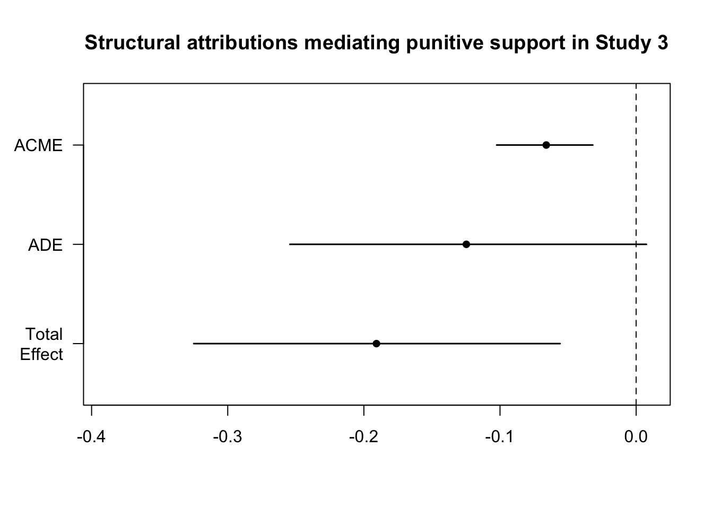
## NULL| Estimate | 95% CI Lower | 95% CI Upper | p-value | |
|---|---|---|---|---|
| ACME | -0.065 | -0.103 | -0.032 | 0.000 |
| ADE | -0.125 | -0.254 | 0.001 | 0.054 |
| Total Effect | -0.191 | -0.320 | -0.056 | 0.010 |
| Prop. Mediated | 0.340 | 0.158 | 0.895 | 0.010 |
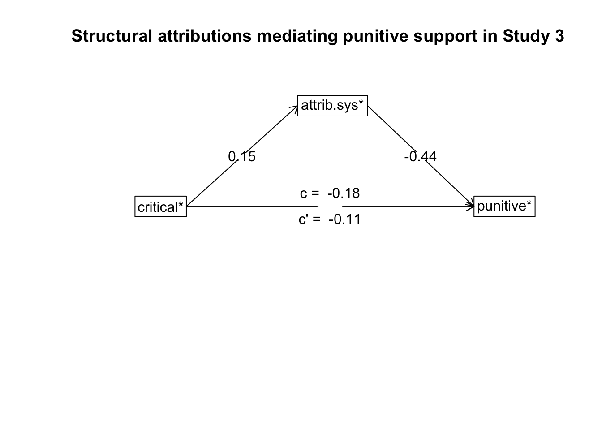
## Call: psych::mediate(y = punitive ~ critical + (attrib.sys) - political -
## female - white - age.c - college - adj_income.c, data = s3,
## main = "Structural attributions mediating punitive support in Study 3")
##
## Direct effect estimates (traditional regression) (c') X + M on Y
## punitive* se t df
## Intercept 4.86 0.26 18.93 1491
## critical -0.11 0.07 -1.68 1491
## attrib.sys -0.44 0.05 -9.51 1491
## Prob
## Intercept 0.00000000000000000000000000000000000000000000000000000000000000000000000851
## critical 0.09400000000000000022204460492503130808472633361816406250000000000000000000
## attrib.sys 0.00000000000000000000737000000000000001256288764507480189864166892706250986
##
## R = 1.06 R2 = 1.13 F = -6421 on 2 and 1491 DF p-value: 1
##
## Total effect estimates (c) (X on Y)
## punitive* se t df
## Intercept 2.70 0.12 21.88 1492
## critical -0.18 0.07 -2.59 1492
## Prob
## Intercept 0.0000000000000000000000000000000000000000000000000000000000000000000000000000000000000000000283
## critical 0.0096699999999999997762900605380309571046382188796997070312500000000000000000000000000000000000
##
## 'a' effect estimates (X on M)
## attrib.sys se t df Prob
## Intercept 4.94 0.07 73.12 1492 0.0000000
## critical 0.15 0.04 3.99 1492 0.0000688
##
## 'b' effect estimates (M on Y controlling for X)
## punitive* se t df Prob
## attrib.sys -0.44 0.05 -9.51 1491 0.00000000000000000000737
##
## 'ab' effect estimates (through all mediators)
## punitive* boot sd lower upper
## critical -0.07 -0.07 0.02 -0.1 -0.03C.11.2 punitive (R)
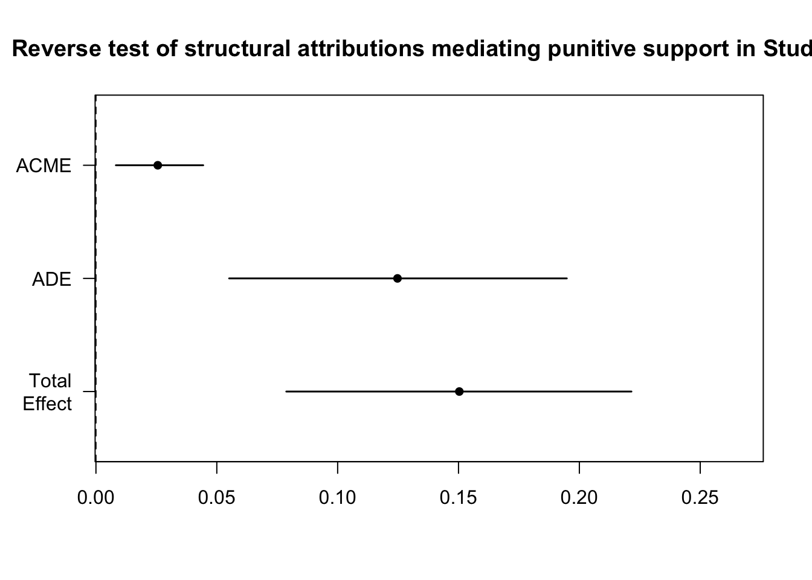
## NULL| Estimate | 95% CI Lower | 95% CI Upper | p-value | |
|---|---|---|---|---|
| ACME | 0.025 | 0.008 | 0.045 | 0.008 |
| ADE | 0.124 | 0.049 | 0.197 | 0.002 |
| Total Effect | 0.149 | 0.073 | 0.223 | 0.000 |
| Prop. Mediated | 0.168 | 0.055 | 0.379 | 0.008 |
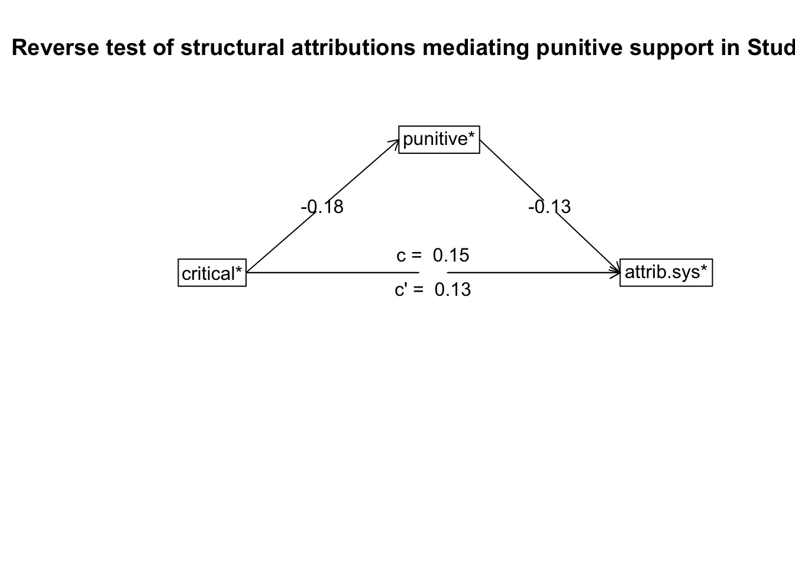
## Call: psych::mediate(y = attrib.sys ~ critical + (punitive) - political -
## female - white - age.c - college - adj_income.c, data = s3,
## main = "Reverse test of structural attributions mediating punitive support in Study 3")
##
## Direct effect estimates (traditional regression) (c') X + M on Y
## attrib.sys* se t df Prob
## Intercept 5.30 0.08 70.19 1491 0.00000000000000000000000
## critical 0.13 0.04 3.46 1491 0.00054799999999999998452
## punitive -0.13 0.01 -9.51 1491 0.00000000000000000000737
##
## R = 1.02 R2 = 1.04 F = -20308 on 2 and 1491 DF p-value: 1
##
## Total effect estimates (c) (X on Y)
## attrib.sys* se t df Prob
## Intercept 4.94 0.07 73.12 1492 0.0000000
## critical 0.15 0.04 3.99 1492 0.0000688
##
## 'a' effect estimates (X on M)
## punitive se t df
## Intercept 2.70 0.12 21.88 1492
## critical -0.18 0.07 -2.59 1492
## Prob
## Intercept 0.0000000000000000000000000000000000000000000000000000000000000000000000000000000000000000000283
## critical 0.0096699999999999997762900605380309571046382188796997070312500000000000000000000000000000000000
##
## 'b' effect estimates (M on Y controlling for X)
## attrib.sys* se t df Prob
## punitive -0.13 0.01 -9.51 1491 0.00000000000000000000737
##
## 'ab' effect estimates (through all mediators)
## attrib.sys* boot sd lower upper
## critical 0.02 0.02 0.01 0.01 0.04C.11.3 punitive4
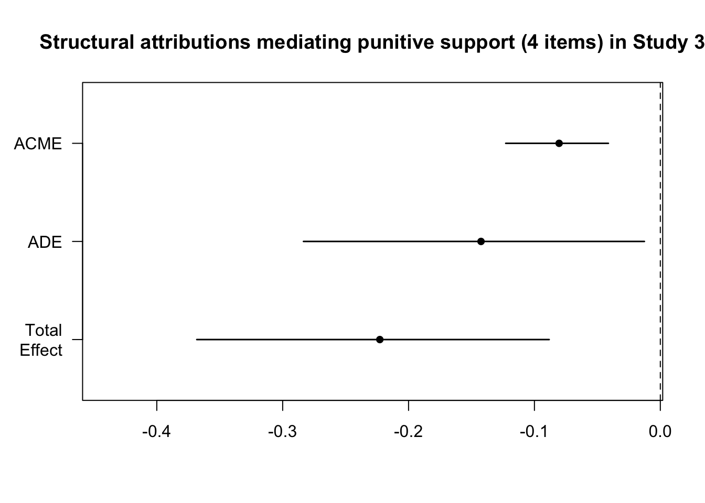
## NULL| Estimate | 95% CI Lower | 95% CI Upper | p-value | |
|---|---|---|---|---|
| ACME | -0.080 | -0.124 | -0.040 | 0.000 |
| ADE | -0.142 | -0.282 | -0.005 | 0.036 |
| Total Effect | -0.222 | -0.365 | -0.085 | 0.002 |
| Prop. Mediated | 0.357 | 0.179 | 0.931 | 0.002 |
## Call: psych::mediate(y = punitive4 ~ critical + (attrib.sys) - political -
## female - white - age.c - college - adj_income.c, data = s3,
## main = "Structural attributions mediating punitive support (4 items) in Study 3")
##
## Direct effect estimates (traditional regression) (c') X + M on Y
## punitive4* se t df
## Intercept 5.02 0.27 18.67 1491
## critical -0.13 0.07 -1.89 1491
## attrib.sys -0.52 0.05 -10.85 1491
## Prob
## Intercept 0.000000000000000000000000000000000000000000000000000000000000000000000478
## critical 0.058400000000000000521804821573823573999106884002685546875000000000000000
## attrib.sys 0.000000000000000000000000018700000000000001580811840791054999197195657035
##
## R = 1.08 R2 = 1.17 F = -5248 on 2 and 1491 DF p-value: 1
##
## Total effect estimates (c) (X on Y)
## punitive4* se t df
## Intercept 2.44 0.13 18.70 1492
## critical -0.21 0.07 -2.91 1492
## Prob
## Intercept 0.000000000000000000000000000000000000000000000000000000000000000000000265
## critical 0.003629999999999999980154763434825326839927583932876586914062500000000000
##
## 'a' effect estimates (X on M)
## attrib.sys se t df Prob
## Intercept 4.94 0.07 73.12 1492 0.0000000
## critical 0.15 0.04 3.99 1492 0.0000688
##
## 'b' effect estimates (M on Y controlling for X)
## punitive4* se t df Prob
## attrib.sys -0.52 0.05 -10.8 1491 0.0000000000000000000000000187
##
## 'ab' effect estimates (through all mediators)
## punitive4* boot sd lower upper
## critical -0.08 -0.08 0.02 -0.12 -0.04C.11.4 punitive4 (R)
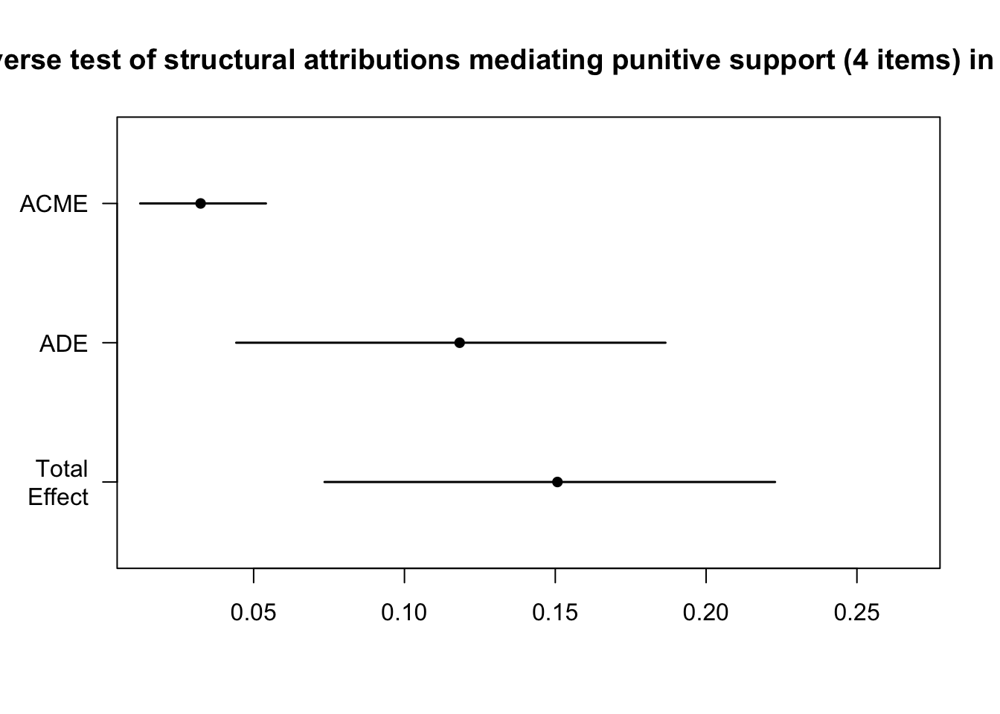
## NULL| Estimate | 95% CI Lower | 95% CI Upper | p-value | |
|---|---|---|---|---|
| ACME | 0.032 | 0.011 | 0.053 | 0.000 |
| ADE | 0.119 | 0.046 | 0.191 | 0.002 |
| Total Effect | 0.151 | 0.077 | 0.227 | 0.000 |
| Prop. Mediated | 0.215 | 0.078 | 0.423 | 0.000 |
## Call: psych::mediate(y = attrib.sys ~ critical + (punitive4) - political -
## female - white - age.c - college - adj_income.c, data = s3,
## main = "Reverse test of structural attributions mediating punitive support (4 items) in Study 3")
##
## Direct effect estimates (traditional regression) (c') X + M on Y
## attrib.sys* se t df Prob
## Intercept 5.29 0.07 73.06 1491 0.0000000000000000000000000000
## critical 0.12 0.04 3.32 1491 0.0009319999999999999942476570
## punitive4 -0.14 0.01 -10.85 1491 0.0000000000000000000000000187
##
## R = 1.02 R2 = 1.04 F = -20646 on 2 and 1491 DF p-value: 1
##
## Total effect estimates (c) (X on Y)
## attrib.sys* se t df Prob
## Intercept 4.94 0.07 73.12 1492 0.0000000
## critical 0.15 0.04 3.99 1492 0.0000688
##
## 'a' effect estimates (X on M)
## punitive4 se t df
## Intercept 2.44 0.13 18.70 1492
## critical -0.21 0.07 -2.91 1492
## Prob
## Intercept 0.000000000000000000000000000000000000000000000000000000000000000000000265
## critical 0.003629999999999999980154763434825326839927583932876586914062500000000000
##
## 'b' effect estimates (M on Y controlling for X)
## attrib.sys* se t df Prob
## punitive4 -0.14 0.01 -10.8 1491 0.0000000000000000000000000187
##
## 'ab' effect estimates (through all mediators)
## attrib.sys* boot sd lower upper
## critical 0.03 0.03 0.01 0.01 0.05C.11.5 restorative
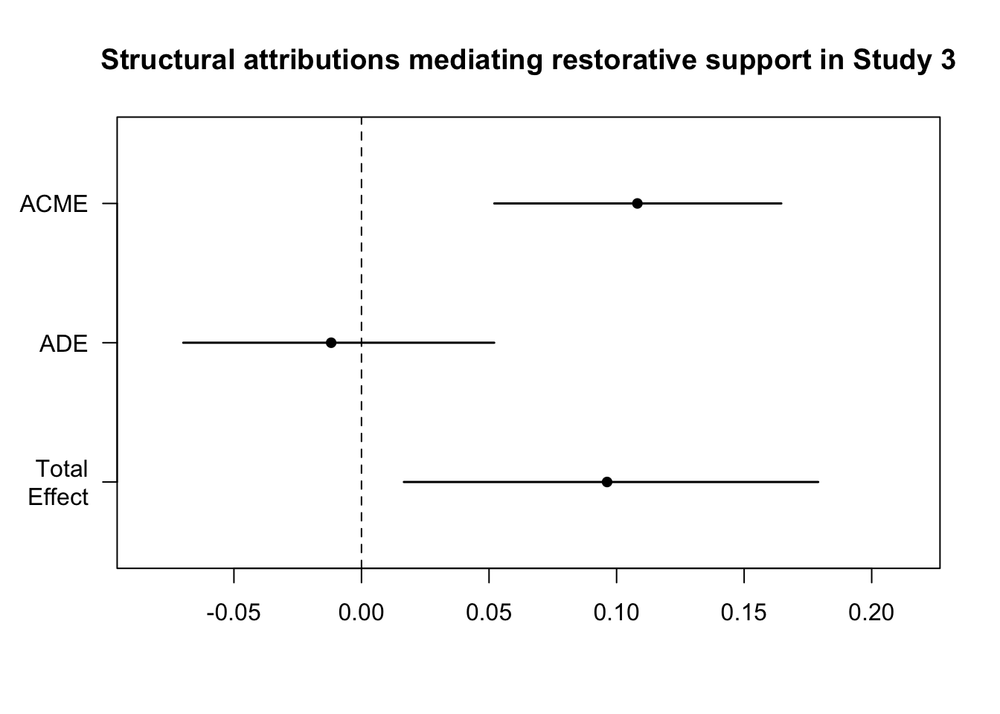
## NULL| Estimate | 95% CI Lower | 95% CI Upper | p-value | |
|---|---|---|---|---|
| ACME | 0.108 | 0.051 | 0.161 | 0.000 |
| ADE | -0.013 | -0.077 | 0.045 | 0.712 |
| Total Effect | 0.096 | 0.015 | 0.171 | 0.024 |
| Prop. Mediated | 1.109 | 0.614 | 3.330 | 0.024 |
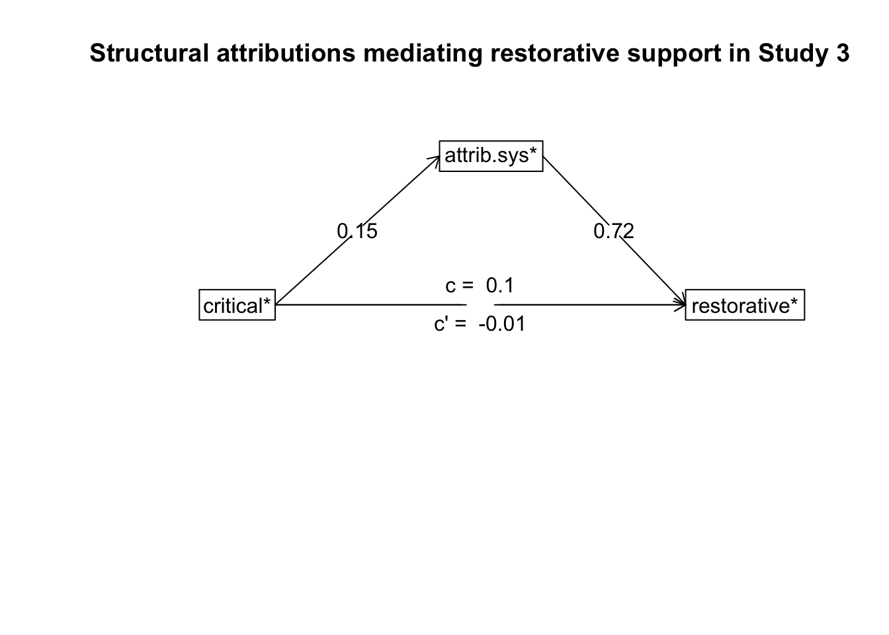
## Call: psych::mediate(y = restorative ~ critical + (attrib.sys) - political -
## female - white - age.c - college - adj_income.c, data = s3,
## main = "Structural attributions mediating restorative support in Study 3")
##
## Direct effect estimates (traditional regression) (c') X + M on Y
## restorative* se t df
## Intercept 3.34 0.12 28.70 1491
## critical -0.01 0.03 -0.34 1491
## attrib.sys 0.72 0.02 34.55 1491
## Prob
## Intercept 0.00000000000000000000000000000000000000000000000000000000000000000000000000000000000000000000000000000000000000000000000000000000000000000000000138999999999999933937239425867670027189778133452770
## critical 0.73399999999999998578914528479799628257751464843750000000000000000000000000000000000000000000000000000000000000000000000000000000000000000000000000000000000000000000000000000000000000000000000000
## attrib.sys 0.00000000000000000000000000000000000000000000000000000000000000000000000000000000000000000000000000000000000000000000000000000000000000000000000000000000000000000000000000000000000000000000000115
##
## R = 1.01 R2 = 1.01 F = -70472 on 2 and 1491 DF p-value: 1
##
## Total effect estimates (c) (X on Y)
## restorative* se t df Prob
## Intercept 6.9 0.07 94.56 1492 0.0000
## critical 0.1 0.04 2.41 1492 0.0162
##
## 'a' effect estimates (X on M)
## attrib.sys se t df Prob
## Intercept 4.94 0.07 73.12 1492 0.0000000
## critical 0.15 0.04 3.99 1492 0.0000688
##
## 'b' effect estimates (M on Y controlling for X)
## restorative* se t df
## attrib.sys 0.72 0.02 34.5 1491
## Prob
## attrib.sys 0.00000000000000000000000000000000000000000000000000000000000000000000000000000000000000000000000000000000000000000000000000000000000000000000000000000000000000000000000000000000000000000000000115
##
## 'ab' effect estimates (through all mediators)
## restorative* boot sd lower upper
## critical 0.11 0.11 0.03 0.06 0.16C.11.6 resttorative (R)
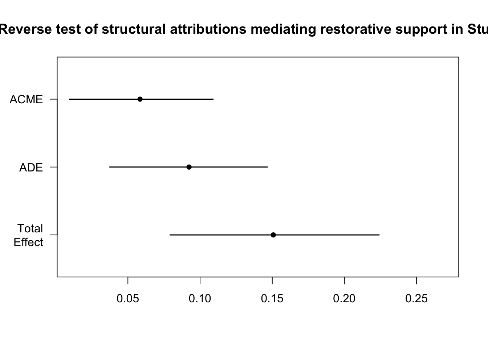
## NULL| Estimate | 95% CI Lower | 95% CI Upper | p-value | |
|---|---|---|---|---|
| ACME | 0.057 | 0.009 | 0.109 | 0.022 |
| ADE | 0.092 | 0.038 | 0.148 | 0.002 |
| Total Effect | 0.149 | 0.078 | 0.227 | 0.000 |
| Prop. Mediated | 0.383 | 0.094 | 0.652 | 0.022 |
## Call: psych::mediate(y = attrib.sys ~ critical + (restorative) - political -
## female - white - age.c - college - adj_income.c, data = s3,
## main = "Reverse test of structural attributions mediating restorative support in Study 3")
##
## Direct effect estimates (traditional regression) (c') X + M on Y
## attrib.sys* se t df
## Intercept 0.68 0.13 5.11 1491
## critical 0.09 0.03 3.19 1491
## restorative 0.62 0.02 34.55 1491
## Prob
## Intercept 0.00000037300000000000001806115478529546347630230229697190225124359130859375000000000000000000000000000000000000000000000000000000000000000000000000000000000000000000000000000000000000000000000000
## critical 0.00143000000000000006446232436729815162834711372852325439453125000000000000000000000000000000000000000000000000000000000000000000000000000000000000000000000000000000000000000000000000000000000000
## restorative 0.00000000000000000000000000000000000000000000000000000000000000000000000000000000000000000000000000000000000000000000000000000000000000000000000000000000000000000000000000000000000000000000000115
##
## R = 1.01 R2 = 1.02 F = -33957 on 2 and 1491 DF p-value: 1
##
## Total effect estimates (c) (X on Y)
## attrib.sys* se t df Prob
## Intercept 4.94 0.07 73.12 1492 0.0000000
## critical 0.15 0.04 3.99 1492 0.0000688
##
## 'a' effect estimates (X on M)
## restorative se t df Prob
## Intercept 6.9 0.07 94.56 1492 0.0000
## critical 0.1 0.04 2.41 1492 0.0162
##
## 'b' effect estimates (M on Y controlling for X)
## attrib.sys* se t df
## restorative 0.62 0.02 34.5 1491
## Prob
## restorative 0.00000000000000000000000000000000000000000000000000000000000000000000000000000000000000000000000000000000000000000000000000000000000000000000000000000000000000000000000000000000000000000000000115
##
## 'ab' effect estimates (through all mediators)
## attrib.sys* boot sd lower upper
## critical 0.06 0.06 0.03 0.01 0.11C.11.7 restorative4
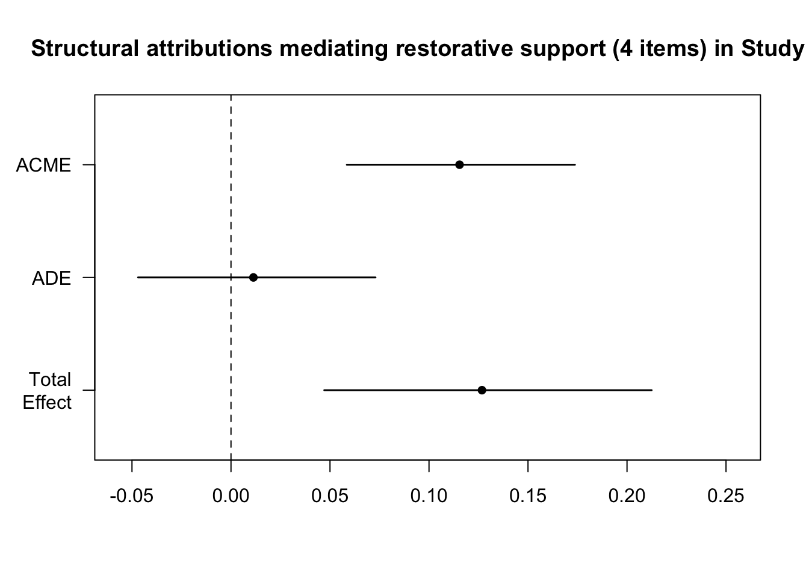
## NULL| Estimate | 95% CI Lower | 95% CI Upper | p-value | |
|---|---|---|---|---|
| ACME | 0.118 | 0.063 | 0.176 | 0.000 |
| ADE | 0.014 | -0.055 | 0.077 | 0.666 |
| Total Effect | 0.132 | 0.044 | 0.219 | 0.002 |
| Prop. Mediated | 0.894 | 0.541 | 1.887 | 0.002 |
## Call: psych::mediate(y = restorative4 ~ critical + (attrib.sys) - political -
## female - white - age.c - college - adj_income.c, data = s3,
## main = "Structural attributions mediating restorative support (4 items) in Study 3")
##
## Direct effect estimates (traditional regression) (c') X + M on Y
## restorative4* se t df
## Intercept 3.17 0.12 25.64 1491
## critical 0.01 0.03 0.41 1491
## attrib.sys 0.78 0.02 35.40 1491
## Prob
## Intercept 0.0000000000000000000000000000000000000000000000000000000000000000000000000000000000000000000000000000000000000000000000019399999999999994941578153480822336001242474869280100131595958400992340844790831257
## critical 0.6800000000000000488498130835068877786397933959960937500000000000000000000000000000000000000000000000000000000000000000000000000000000000000000000000000000000000000000000000000000000000000000000000000000
## attrib.sys 0.0000000000000000000000000000000000000000000000000000000000000000000000000000000000000000000000000000000000000000000000000000000000000000000000000000000000000000000000000000000000000000000000000000000951
##
## R = 1.01 R2 = 1.01 F = -61218 on 2 and 1491 DF p-value: 1
##
## Total effect estimates (c) (X on Y)
## restorative4* se t df Prob
## Intercept 7.04 0.08 89.9 1492 0.00000
## critical 0.13 0.04 3.0 1492 0.00271
##
## 'a' effect estimates (X on M)
## attrib.sys se t df Prob
## Intercept 4.94 0.07 73.12 1492 0.0000000
## critical 0.15 0.04 3.99 1492 0.0000688
##
## 'b' effect estimates (M on Y controlling for X)
## restorative4* se t df
## attrib.sys 0.78 0.02 35.4 1491
## Prob
## attrib.sys 0.0000000000000000000000000000000000000000000000000000000000000000000000000000000000000000000000000000000000000000000000000000000000000000000000000000000000000000000000000000000000000000000000000000000951
##
## 'ab' effect estimates (through all mediators)
## restorative4* boot sd lower upper
## critical 0.12 0.12 0.03 0.06 0.18C.11.8 restorative4 (R)
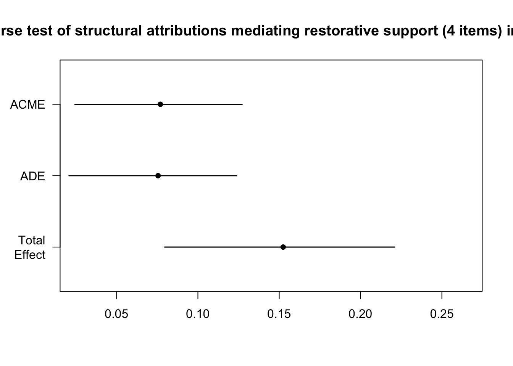
## NULL| Estimate | 95% CI Lower | 95% CI Upper | p-value | |
|---|---|---|---|---|
| ACME | 0.076 | 0.025 | 0.127 | 0.006 |
| ADE | 0.075 | 0.022 | 0.131 | 0.004 |
| Total Effect | 0.151 | 0.076 | 0.232 | 0.000 |
| Prop. Mediated | 0.505 | 0.210 | 0.797 | 0.006 |
## Call: psych::mediate(y = attrib.sys ~ critical + (restorative4) - political -
## female - white - age.c - college - adj_income.c, data = s3,
## main = "Reverse test of structural attributions mediating restorative support (4 items) in Study 3")
##
## Direct effect estimates (traditional regression) (c') X + M on Y
## attrib.sys* se t df
## Intercept 0.84 0.13 6.63 1491
## critical 0.07 0.03 2.65 1491
## restorative4 0.58 0.02 35.40 1491
## Prob
## Intercept 0.0000000000482999999999999973523534290794403380994714858331917639588937163352966308593750000000000000000000000000000000000000000000000000000000000000000000000000000000000000000000000000000000000000000000
## critical 0.0080700000000000007838174553853605175390839576721191406250000000000000000000000000000000000000000000000000000000000000000000000000000000000000000000000000000000000000000000000000000000000000000000000000
## restorative4 0.0000000000000000000000000000000000000000000000000000000000000000000000000000000000000000000000000000000000000000000000000000000000000000000000000000000000000000000000000000000000000000000000000000000951
##
## R = 1.01 R2 = 1.02 F = -34691 on 2 and 1491 DF p-value: 1
##
## Total effect estimates (c) (X on Y)
## attrib.sys* se t df Prob
## Intercept 4.94 0.07 73.12 1492 0.0000000
## critical 0.15 0.04 3.99 1492 0.0000688
##
## 'a' effect estimates (X on M)
## restorative4 se t df Prob
## Intercept 7.04 0.08 89.9 1492 0.00000
## critical 0.13 0.04 3.0 1492 0.00271
##
## 'b' effect estimates (M on Y controlling for X)
## attrib.sys* se t df
## restorative4 0.58 0.02 35.4 1491
## Prob
## restorative4 0.0000000000000000000000000000000000000000000000000000000000000000000000000000000000000000000000000000000000000000000000000000000000000000000000000000000000000000000000000000000000000000000000000000000951
##
## 'ab' effect estimates (through all mediators)
## attrib.sys* boot sd lower upper
## critical 0.08 0.08 0.03 0.02 0.12C.11.9 budget
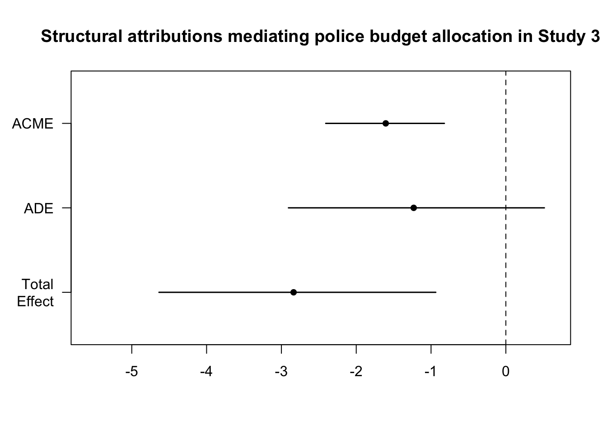
## NULL| Estimate | 95% CI Lower | 95% CI Upper | p-value | |
|---|---|---|---|---|
| ACME | -1.610 | -2.438 | -0.824 | 0.000 |
| ADE | -1.276 | -2.964 | 0.377 | 0.128 |
| Total Effect | -2.886 | -4.785 | -1.088 | 0.004 |
| Prop. Mediated | 0.559 | 0.299 | 1.276 | 0.004 |
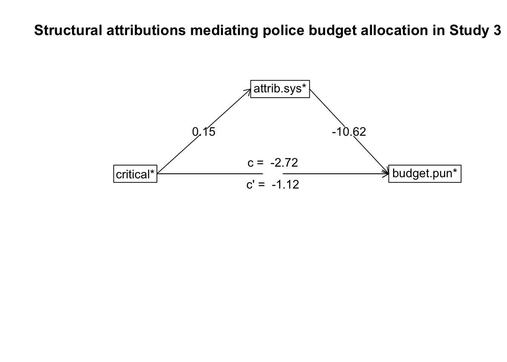
## Call: psych::mediate(y = budget.pun ~ critical + (attrib.sys) - political -
## female - white - age.c - college - adj_income.c, data = s3,
## main = "Structural attributions mediating police budget allocation in Study 3")
##
## Direct effect estimates (traditional regression) (c') X + M on Y
## budget.pun* se t df
## Intercept 59.63 3.30 18.06 1491
## critical -1.12 0.87 -1.29 1491
## attrib.sys -10.62 0.59 -17.99 1491
## Prob
## Intercept 0.00000000000000000000000000000000000000000000000000000000000000000413
## critical 0.19800000000000000932587340685131493955850601196289062500000000000000
## attrib.sys 0.00000000000000000000000000000000000000000000000000000000000000001200
##
## R = 1.24 R2 = 1.54 F = -2134 on 2 and 1491 DF p-value: 1
##
## Total effect estimates (c) (X on Y)
## budget.pun* se t df Prob
## Intercept 7.11 1.70 4.18 1492 0.0000303
## critical -2.72 0.95 -2.86 1492 0.0043000
##
## 'a' effect estimates (X on M)
## attrib.sys se t df Prob
## Intercept 4.94 0.07 73.12 1492 0.0000000
## critical 0.15 0.04 3.99 1492 0.0000688
##
## 'b' effect estimates (M on Y controlling for X)
## budget.pun* se t df
## attrib.sys -10.6 0.59 -18 1491
## Prob
## attrib.sys 0.000000000000000000000000000000000000000000000000000000000000000012
##
## 'ab' effect estimates (through all mediators)
## budget.pun* boot sd lower upper
## critical -1.6 -1.6 0.42 -2.45 -0.79C.11.10 budget (R)
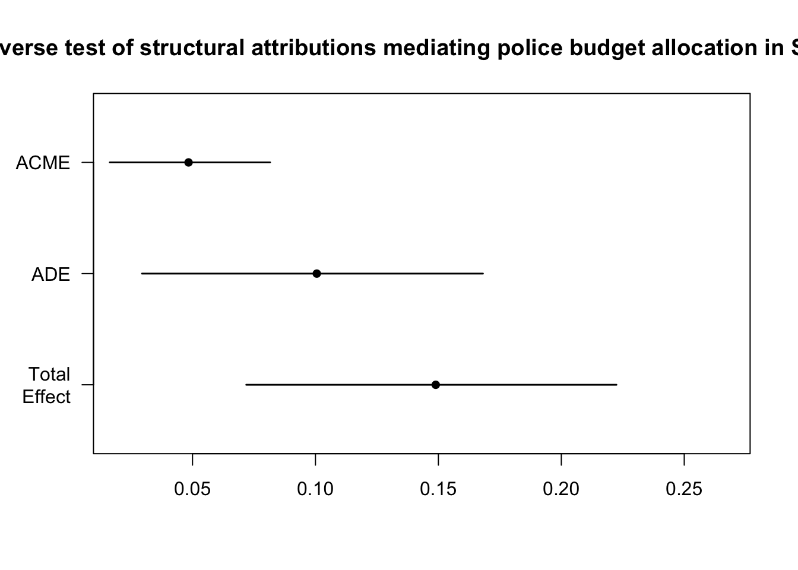
## NULL| Estimate | 95% CI Lower | 95% CI Upper | p-value | |
|---|---|---|---|---|
| ACME | 0.049 | 0.017 | 0.082 | 0.000 |
| ADE | 0.103 | 0.036 | 0.169 | 0.002 |
| Total Effect | 0.152 | 0.077 | 0.225 | 0.000 |
| Prop. Mediated | 0.322 | 0.136 | 0.613 | 0.000 |
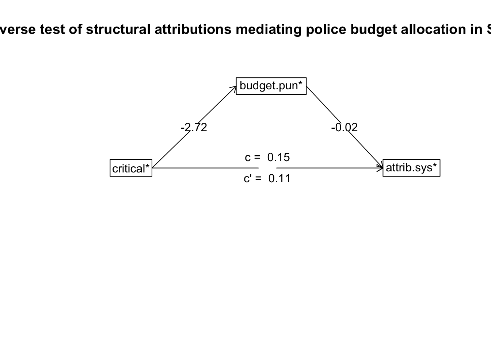
## Call: psych::mediate(y = attrib.sys ~ critical + (budget.pun) - political -
## female - white - age.c - college - adj_income.c, data = s3,
## main = "Reverse test of structural attributions mediating police budget allocation in Study 3")
##
## Direct effect estimates (traditional regression) (c') X + M on Y
## attrib.sys* se t df
## Intercept 5.06 0.06 82.11 1491
## critical 0.11 0.03 3.06 1491
## budget.pun -0.02 0.00 -17.99 1491
## Prob
## Intercept 0.000000000000000000000000000000000000000000000000000000000000000000
## critical 0.002239999999999999803768080397503581480123102664947509765625000000
## budget.pun 0.000000000000000000000000000000000000000000000000000000000000000012
##
## R = 1.02 R2 = 1.03 F = -23193 on 2 and 1491 DF p-value: 1
##
## Total effect estimates (c) (X on Y)
## attrib.sys* se t df Prob
## Intercept 4.94 0.07 73.12 1492 0.0000000
## critical 0.15 0.04 3.99 1492 0.0000688
##
## 'a' effect estimates (X on M)
## budget.pun se t df Prob
## Intercept 7.11 1.70 4.18 1492 0.0000303
## critical -2.72 0.95 -2.86 1492 0.0043000
##
## 'b' effect estimates (M on Y controlling for X)
## attrib.sys* se t df
## budget.pun -0.02 0 -18 1491
## Prob
## budget.pun 0.000000000000000000000000000000000000000000000000000000000000000012
##
## 'ab' effect estimates (through all mediators)
## attrib.sys* boot sd lower upper
## critical 0.05 0.05 0.02 0.01 0.08C.11.11 racism concern
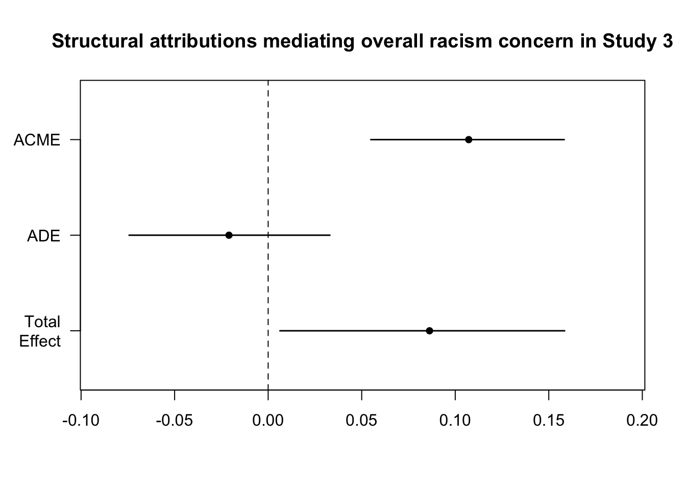
## NULL| Estimate | 95% CI Lower | 95% CI Upper | p-value | |
|---|---|---|---|---|
| ACME | 0.108 | 0.054 | 0.163 | 0.002 |
| ADE | -0.022 | -0.083 | 0.041 | 0.478 |
| Total Effect | 0.086 | 0.010 | 0.168 | 0.026 |
| Prop. Mediated | 1.248 | 0.657 | 5.368 | 0.024 |
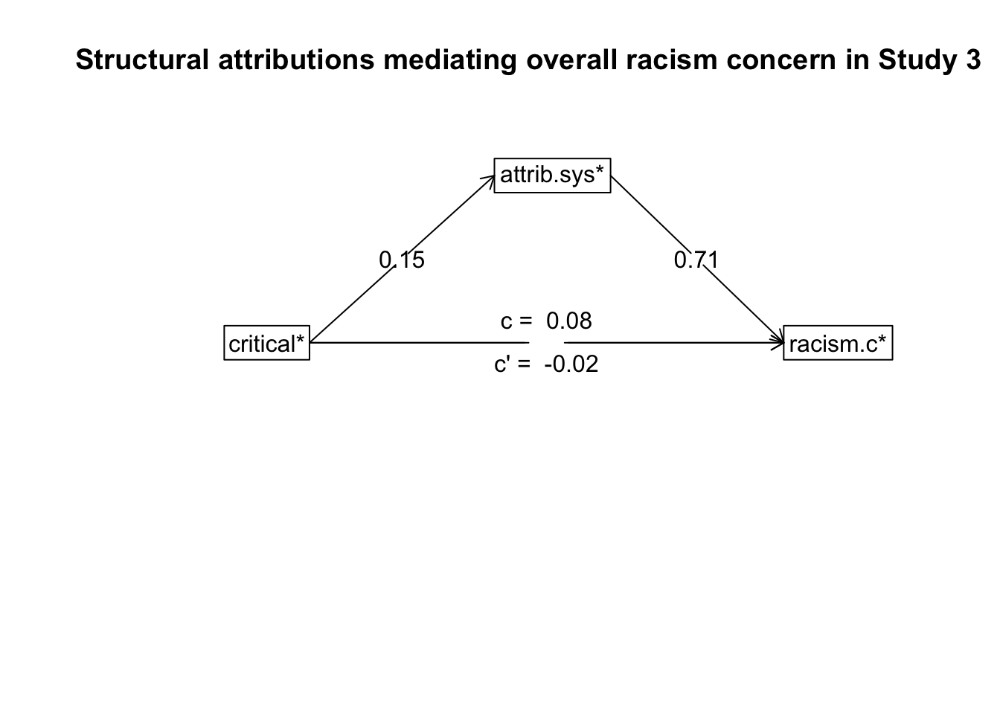
## Call: psych::mediate(y = racism.c ~ critical + (attrib.sys) - political -
## female - white - age.c - college - adj_income.c, data = s3,
## main = "Structural attributions mediating overall racism concern in Study 3")
##
## Direct effect estimates (traditional regression) (c') X + M on Y
## racism.c* se t df
## Intercept -2.30 0.11 -20.48 1491
## critical -0.02 0.03 -0.76 1491
## attrib.sys 0.71 0.02 35.19 1491
## Prob
## Intercept 0.00000000000000000000000000000000000000000000000000000000000000000000000000000000022599999999999994563577729977665432239095003207845489195339071832797080981626998109983166223252902691734580271884596653
## critical 0.44700000000000000843769498715118970721960067749023437500000000000000000000000000000000000000000000000000000000000000000000000000000000000000000000000000000000000000000000000000000000000000000000000000
## attrib.sys 0.00000000000000000000000000000000000000000000000000000000000000000000000000000000000000000000000000000000000000000000000000000000000000000000000000000000000000000000000000000000000000000000000000000496
##
## R = 0.74 R2 = 0.55 F = 926 on 2 and 1491 DF p-value: 0.000000000000000000000000000000000000000000000000000000000000000000000000000000000000000000000000000000000000000000000000000000000000000000000000000000000000000000000000000000000000000000000000000000000000000000000000000000000000000000000000000000000000000000000326
##
## Total effect estimates (c) (X on Y)
## racism.c* se t df
## Intercept 1.20 0.07 16.83 1492
## critical 0.08 0.04 2.12 1492
## Prob
## Intercept 0.000000000000000000000000000000000000000000000000000000000242
## critical 0.033799999999999996713739847109536640346050262451171875000000
##
## 'a' effect estimates (X on M)
## attrib.sys se t df Prob
## Intercept 4.94 0.07 73.12 1492 0.0000000
## critical 0.15 0.04 3.99 1492 0.0000688
##
## 'b' effect estimates (M on Y controlling for X)
## racism.c* se t df
## attrib.sys 0.71 0.02 35.2 1491
## Prob
## attrib.sys 0.00000000000000000000000000000000000000000000000000000000000000000000000000000000000000000000000000000000000000000000000000000000000000000000000000000000000000000000000000000000000000000000000000000496
##
## 'ab' effect estimates (through all mediators)
## racism.c* boot sd lower upper
## critical 0.11 0.11 0.03 0.06 0.16C.11.12 racism concern (R)
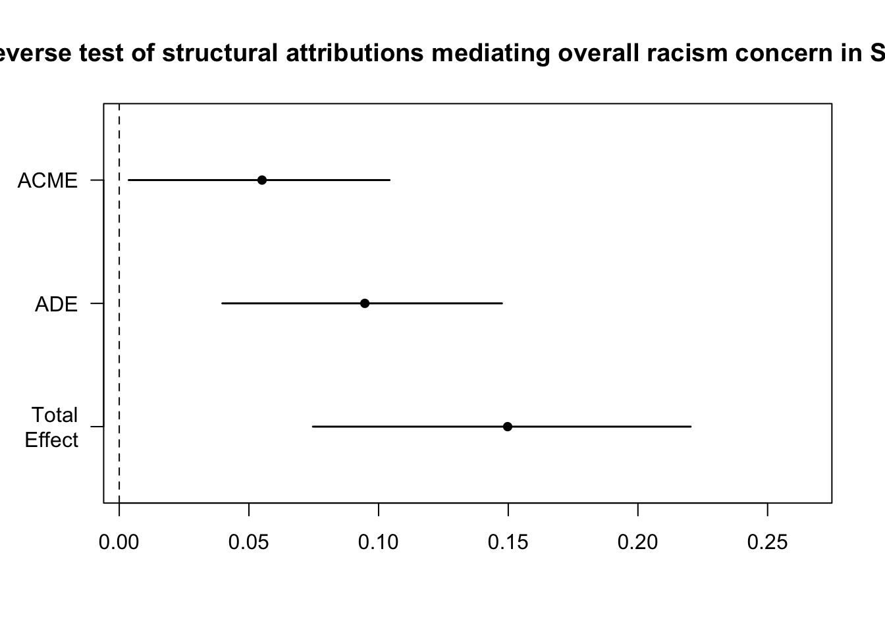
## NULL| Estimate | 95% CI Lower | 95% CI Upper | p-value | |
|---|---|---|---|---|
| ACME | 0.055 | 0.004 | 0.105 | 0.024 |
| ADE | 0.097 | 0.043 | 0.154 | 0.002 |
| Total Effect | 0.151 | 0.079 | 0.228 | 0.000 |
| Prop. Mediated | 0.359 | 0.040 | 0.616 | 0.024 |
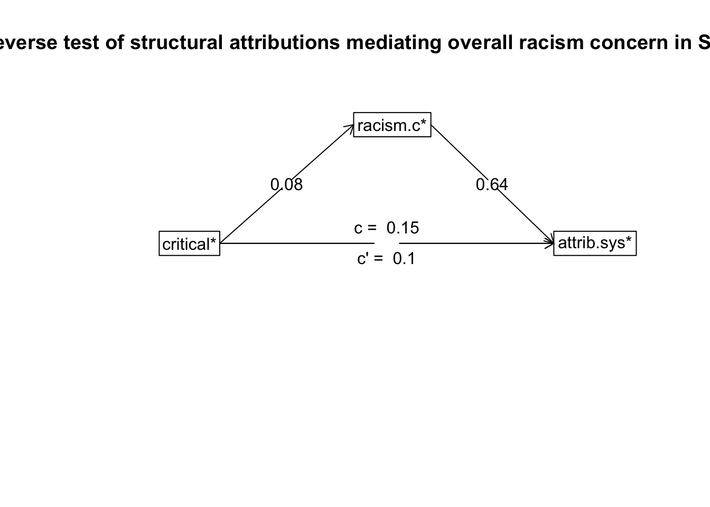
## Call: psych::mediate(y = attrib.sys ~ critical + (racism.c) - political -
## female - white - age.c - college - adj_income.c, data = s3,
## main = "Reverse test of structural attributions mediating overall racism concern in Study 3")
##
## Direct effect estimates (traditional regression) (c') X + M on Y
## attrib.sys* se t df
## Intercept 4.18 0.05 76.61 1491
## critical 0.10 0.03 3.46 1491
## racism.c 0.64 0.02 35.19 1491
## Prob
## Intercept 0.00000000000000000000000000000000000000000000000000000000000000000000000000000000000000000000000000000000000000000000000000000000000000000000000000000000000000000000000000000000000000000000000000000000
## critical 0.00055800000000000001074834665715229675697628408670425415039062500000000000000000000000000000000000000000000000000000000000000000000000000000000000000000000000000000000000000000000000000000000000000000
## racism.c 0.00000000000000000000000000000000000000000000000000000000000000000000000000000000000000000000000000000000000000000000000000000000000000000000000000000000000000000000000000000000000000000000000000000496
##
## R = 1.01 R2 = 1.02 F = -34512 on 2 and 1491 DF p-value: 1
##
## Total effect estimates (c) (X on Y)
## attrib.sys* se t df Prob
## Intercept 4.94 0.07 73.12 1492 0.0000000
## critical 0.15 0.04 3.99 1492 0.0000688
##
## 'a' effect estimates (X on M)
## racism.c se t df
## Intercept 1.20 0.07 16.83 1492
## critical 0.08 0.04 2.12 1492
## Prob
## Intercept 0.000000000000000000000000000000000000000000000000000000000242
## critical 0.033799999999999996713739847109536640346050262451171875000000
##
## 'b' effect estimates (M on Y controlling for X)
## attrib.sys* se t df
## racism.c 0.64 0.02 35.2 1491
## Prob
## racism.c 0.00000000000000000000000000000000000000000000000000000000000000000000000000000000000000000000000000000000000000000000000000000000000000000000000000000000000000000000000000000000000000000000000000000496
##
## 'ab' effect estimates (through all mediators)
## attrib.sys* boot sd lower upper
## critical 0.05 0.05 0.03 0 0.11C.12 Dispositional Attributions
- Main effect of condition on dispositional attributions compared to control and individual (t=7); smaller effect compared to the naive.
- Significant interaction of condition and liberalism on dispositional attributions. Contrasts show that the control and the individual conditions significantly lower dispositional attributions (but not naive).
- Liberals also reported having greater knowledge about the critical (and naive) content compared only to the individual condition.
C.12.1 Distributions


Figure C.34: Distribution of Dispositional Attributions by Condition in Study 3
C.12.2 ANCOVA
| Term | SS | df | Statistic | p |
|---|---|---|---|---|
| (Intercept) | 255.176 | 1 | 396.37 | 0.000 |
| condition.f | 13.934 | 3 | 7.21 | 0.000 |
| political | 451.907 | 1 | 701.95 | 0.000 |
| female.f | 1.365 | 1 | 2.12 | 0.146 |
| race.f | 13.941 | 7 | 3.09 | 0.003 |
| age.c | 8.802 | 1 | 13.67 | 0.000 |
| edu3.f | 4.259 | 2 | 3.31 | 0.037 |
| adj_income.c | 0.709 | 1 | 1.10 | 0.294 |
| Residuals | 950.877 | 1477 | NA | NA |
| group1 | group2 | estimate | se | df | conf.low | conf.high | statistic | p | p.adj | p.adj.signif |
|---|---|---|---|---|---|---|---|---|---|---|
| Critical | Control | -0.203 | 0.059 | 1477 | -0.318 | -0.087 | -3.45 | 0.001 | 0.001 | *** |
| Critical | Individual | -0.261 | 0.059 | 1477 | -0.378 | -0.145 | -4.40 | 0.000 | 0.000 | **** |
| Critical | Naive | -0.133 | 0.059 | 1477 | -0.250 | -0.017 | -2.24 | 0.025 | 0.025 |
|
| Condition | EMM | SE | df | Conf.low | Conf.high |
|---|---|---|---|---|---|
| Critical | -0.107 | 0.087 | 1477 | -0.277 | 0.063 |
| Control | 0.096 | 0.089 | 1477 | -0.079 | 0.270 |
| Individual | 0.154 | 0.088 | 1477 | -0.018 | 0.327 |
| Naive | 0.026 | 0.091 | 1477 | -0.151 | 0.204 |

Figure C.35: Estimated Marginal Means of Dispositional Attributions by Condition in Study 3
C.12.3 OLS
| Dependent variable: | |||
| Dispositional Attributions | |||
| (1) | (2) | (3) | |
| Constant | 2.74*** (0.03) | 1.61*** (0.06) | 1.60*** (0.06) |
| condition.f1 | -0.17*** (0.05) | -0.16*** (0.04) | -0.19* (0.08) |
| condition.f2 | 0.07 (0.05) | 0.06 (0.04) | 0.01 (0.08) |
| condition.f3 | 0.09 (0.05) | 0.12** (0.04) | 0.28*** (0.08) |
| political | 0.35*** (0.01) | 0.35*** (0.01) | |
| female | -0.07 (0.05) | -0.07 (0.05) | |
| race.fLatino | 0.21* (0.10) | 0.22* (0.10) | |
| race.fBlack | 0.24** (0.09) | 0.25** (0.09) | |
| race.fNative American | 0.14 (0.43) | 0.16 (0.43) | |
| race.fAsian | 0.23** (0.09) | 0.24** (0.09) | |
| race.fMiddle Eastern | -0.41 (0.36) | -0.40 (0.36) | |
| race.fOther race | 0.52 (0.35) | 0.53 (0.35) | |
| race.fMultiracial | 0.17* (0.08) | 0.18* (0.08) | |
| age.c | 0.09*** (0.02) | 0.09*** (0.02) | |
| edu3.f.L | -0.14* (0.05) | -0.14** (0.05) | |
| edu3.f.Q | -0.04 (0.04) | -0.04 (0.04) | |
| adj_income.c | -0.03 (0.02) | -0.02 (0.02) | |
| condition.f1:political | 0.01 (0.02) | ||
| condition.f2:political | 0.02 (0.02) | ||
| condition.f3:political | -0.05* (0.02) | ||
| Observations | 1,500 | 1,494 | 1,494 |
| R2 | 0.01 | 0.36 | 0.36 |
| Adjusted R2 | 0.01 | 0.35 | 0.36 |
| Residual Std. Error | 1.07 (df = 1496) | 0.86 (df = 1477) | 0.86 (df = 1474) |
| F Statistic | 4.66** (df = 3; 1496) | 52.20*** (df = 16; 1477) | 44.30*** (df = 19; 1474) |
| Note: | p<0.05; p<0.01; p<0.001 | ||
C.12.5 By Condition
| contrast | estimate | SE | df | t.ratio | p.value |
|---|---|---|---|---|---|
| critical - control | -0.218 | 0.063 | 1477 | -3.45 | 0.002 |
| critical - individual | -0.281 | 0.064 | 1477 | -4.40 | 0.000 |
| critical - naive | -0.144 | 0.064 | 1477 | -2.24 | 0.065 |
C.12.6 By Political
| contrast | estimate | SE | df | t.ratio | p.value |
|---|---|---|---|---|---|
| critical - control | -0.191 | 0.085 | 1470 | -2.24 | 0.066 |
| critical - individual | -0.337 | 0.085 | 1470 | -3.96 | 0.000 |
| critical - naive | -0.139 | 0.087 | 1470 | -1.59 | 0.261 |
| contrast | estimate | SE | df | t.ratio | p.value |
|---|---|---|---|---|---|
| critical - control | -0.404 | 0.152 | 1470 | -2.66 | 0.022 |
| critical - individual | -0.405 | 0.162 | 1470 | -2.51 | 0.034 |
| critical - naive | -0.139 | 0.146 | 1470 | -0.95 | 0.662 |
| contrast | estimate | SE | df | t.ratio | p.value |
|---|---|---|---|---|---|
| critical - control | -0.248 | 0.141 | 1470 | -1.758 | 0.189 |
| critical - individual | -0.062 | 0.145 | 1470 | -0.426 | 0.951 |
| critical - naive | -0.244 | 0.144 | 1470 | -1.690 | 0.216 |
C.13 Mediation by Dispositional Attribution
C.13.1 punitive
- Dispositional attributions significantly mediate 80% of the critical effect on punitive support (b=.15***)
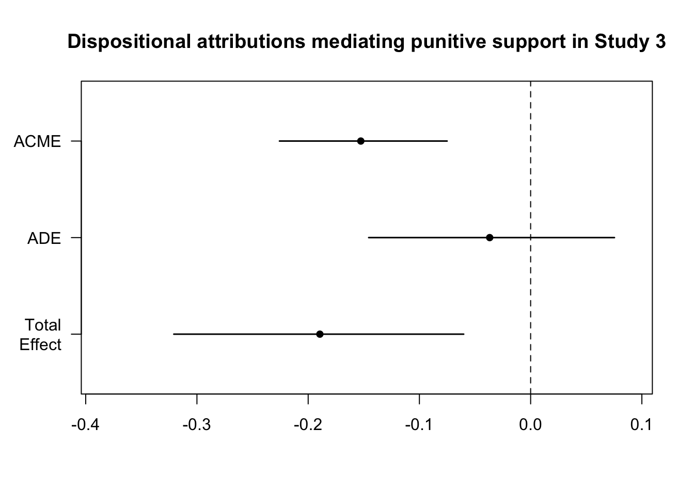
## NULL| Estimate | 95% CI Lower | 95% CI Upper | p-value | |
|---|---|---|---|---|
| ACME | -0.153 | -0.227 | -0.078 | 0.000 |
| ADE | -0.037 | -0.139 | 0.071 | 0.530 |
| Total Effect | -0.190 | -0.327 | -0.067 | 0.004 |
| Prop. Mediated | 0.801 | 0.466 | 1.827 | 0.004 |
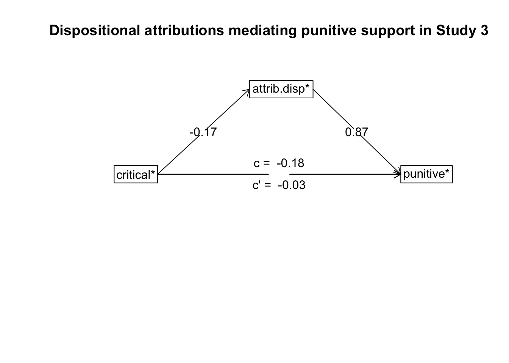
## Call: psych::mediate(y = punitive ~ critical + (attrib.disp) - political -
## female - white - age.c - college - adj_income.c, data = s3,
## main = "Dispositional attributions mediating punitive support in Study 3")
##
## Direct effect estimates (traditional regression) (c') X + M on Y
## punitive* se t df
## Intercept 0.93 0.12 7.65 1491
## critical -0.03 0.06 -0.53 1491
## attrib.disp 0.87 0.03 26.54 1491
## Prob
## Intercept 0.000000000000034800000000000000653109562133174863422595789186342329912804416380822658538818359375000000000000000000000000000000000
## critical 0.597999999999999976019182668096618726849555969238281250000000000000000000000000000000000000000000000000000000000000000000000000000
## attrib.disp 0.000000000000000000000000000000000000000000000000000000000000000000000000000000000000000000000000000000000000000000000000000000216
##
## R = 1.05 R2 = 1.09 F = -8623 on 2 and 1491 DF p-value: 1
##
## Total effect estimates (c) (X on Y)
## punitive* se t df
## Intercept 2.70 0.12 21.88 1492
## critical -0.18 0.07 -2.59 1492
## Prob
## Intercept 0.0000000000000000000000000000000000000000000000000000000000000000000000000000000000000000000283
## critical 0.0096699999999999997762900605380309571046382188796997070312500000000000000000000000000000000000
##
## 'a' effect estimates (X on M)
## attrib.disp se t df
## Intercept 2.03 0.08 25.3 1492
## critical -0.17 0.04 -3.8 1492
## Prob
## Intercept 0.00000000000000000000000000000000000000000000000000000000000000000000000000000000000000000000000000000000000000000000065
## critical 0.00014799999999999999245568760297686594640254043042659759521484375000000000000000000000000000000000000000000000000000000
##
## 'b' effect estimates (M on Y controlling for X)
## punitive* se t df
## attrib.disp 0.87 0.03 26.5 1491
## Prob
## attrib.disp 0.000000000000000000000000000000000000000000000000000000000000000000000000000000000000000000000000000000000000000000000000000000216
##
## 'ab' effect estimates (through all mediators)
## punitive* boot sd lower upper
## critical -0.15 -0.15 0.04 -0.23 -0.07C.13.2 punitive (R)
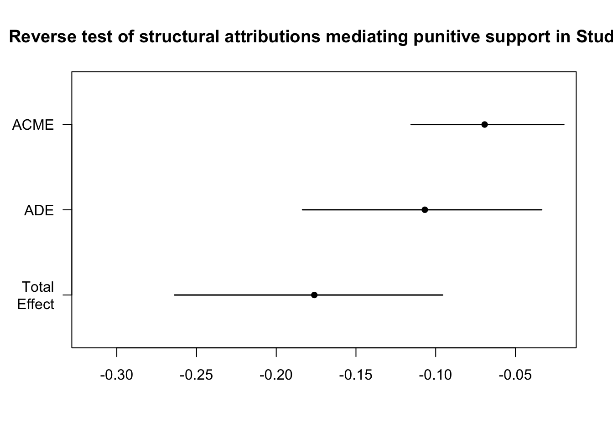
## NULL| Estimate | 95% CI Lower | 95% CI Upper | p-value | |
|---|---|---|---|---|
| ACME | -0.070 | -0.121 | -0.024 | 0.002 |
| ADE | -0.107 | -0.176 | -0.033 | 0.008 |
| Total Effect | -0.177 | -0.268 | -0.089 | 0.000 |
| Prop. Mediated | 0.392 | 0.175 | 0.706 | 0.002 |
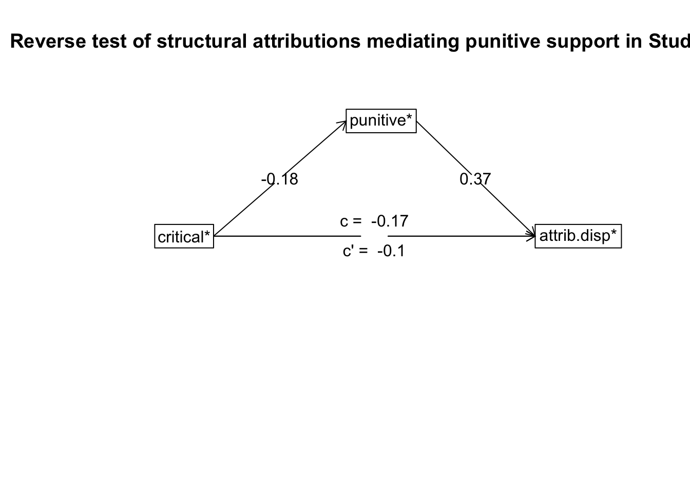
## Call: psych::mediate(y = attrib.disp ~ critical + (punitive) - political -
## female - white - age.c - college - adj_income.c, data = s3,
## main = "Reverse test of structural attributions mediating punitive support in Study 3")
##
## Direct effect estimates (traditional regression) (c') X + M on Y
## attrib.disp* se t df
## Intercept 1.04 0.08 13.64 1491
## critical -0.10 0.04 -2.83 1491
## punitive 0.37 0.01 26.54 1491
## Prob
## Intercept 0.000000000000000000000000000000000000000544999999999999965542934565433756855464135408174117874633053722409505969572501975022560247
## critical 0.004749999999999999882038803633577117579989135265350341796875000000000000000000000000000000000000000000000000000000000000000000000
## punitive 0.000000000000000000000000000000000000000000000000000000000000000000000000000000000000000000000000000000000000000000000000000000216
##
## R = 1.04 R2 = 1.08 F = -10181 on 2 and 1491 DF p-value: 1
##
## Total effect estimates (c) (X on Y)
## attrib.disp* se t df
## Intercept 2.03 0.08 25.3 1492
## critical -0.17 0.04 -3.8 1492
## Prob
## Intercept 0.00000000000000000000000000000000000000000000000000000000000000000000000000000000000000000000000000000000000000000000065
## critical 0.00014799999999999999245568760297686594640254043042659759521484375000000000000000000000000000000000000000000000000000000
##
## 'a' effect estimates (X on M)
## punitive se t df
## Intercept 2.70 0.12 21.88 1492
## critical -0.18 0.07 -2.59 1492
## Prob
## Intercept 0.0000000000000000000000000000000000000000000000000000000000000000000000000000000000000000000283
## critical 0.0096699999999999997762900605380309571046382188796997070312500000000000000000000000000000000000
##
## 'b' effect estimates (M on Y controlling for X)
## attrib.disp* se t df
## punitive 0.37 0.01 26.5 1491
## Prob
## punitive 0.000000000000000000000000000000000000000000000000000000000000000000000000000000000000000000000000000000000000000000000000000000216
##
## 'ab' effect estimates (through all mediators)
## attrib.disp* boot sd lower upper
## critical -0.07 -0.07 0.03 -0.12 -0.01C.13.3 punitive4
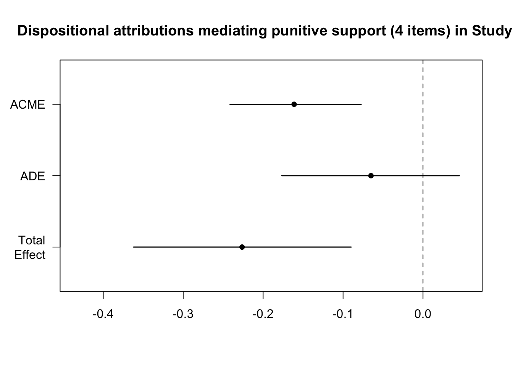
## NULL| Estimate | 95% CI Lower | 95% CI Upper | p-value | |
|---|---|---|---|---|
| ACME | -0.160 | -0.238 | -0.081 | 0.000 |
| ADE | -0.067 | -0.193 | 0.057 | 0.276 |
| Total Effect | -0.227 | -0.369 | -0.093 | 0.004 |
| Prop. Mediated | 0.705 | 0.380 | 1.509 | 0.004 |
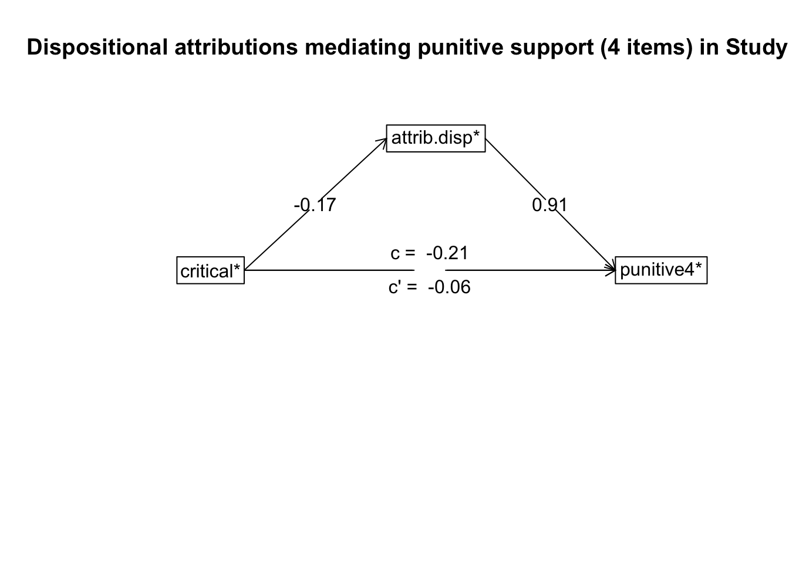
## Call: psych::mediate(y = punitive4 ~ critical + (attrib.disp) - political -
## female - white - age.c - college - adj_income.c, data = s3,
## main = "Dispositional attributions mediating punitive support (4 items) in Study 3")
##
## Direct effect estimates (traditional regression) (c') X + M on Y
## punitive4* se t df
## Intercept 0.60 0.13 4.63 1491
## critical -0.06 0.06 -0.95 1491
## attrib.disp 0.91 0.03 25.93 1491
## Prob
## Intercept 0.0000040500000000000001873067673185957460191275458782911300659179687500000000000000000000000000000000000000000000000000000000
## critical 0.3420000000000000262012633811536943539977073669433593750000000000000000000000000000000000000000000000000000000000000000000000
## attrib.disp 0.0000000000000000000000000000000000000000000000000000000000000000000000000000000000000000000000000000000000000000000000000118
##
## R = 1.06 R2 = 1.12 F = -6800 on 2 and 1491 DF p-value: 1
##
## Total effect estimates (c) (X on Y)
## punitive4* se t df
## Intercept 2.44 0.13 18.70 1492
## critical -0.21 0.07 -2.91 1492
## Prob
## Intercept 0.000000000000000000000000000000000000000000000000000000000000000000000265
## critical 0.003629999999999999980154763434825326839927583932876586914062500000000000
##
## 'a' effect estimates (X on M)
## attrib.disp se t df
## Intercept 2.03 0.08 25.3 1492
## critical -0.17 0.04 -3.8 1492
## Prob
## Intercept 0.00000000000000000000000000000000000000000000000000000000000000000000000000000000000000000000000000000000000000000000065
## critical 0.00014799999999999999245568760297686594640254043042659759521484375000000000000000000000000000000000000000000000000000000
##
## 'b' effect estimates (M on Y controlling for X)
## punitive4* se t df
## attrib.disp 0.91 0.03 25.9 1491
## Prob
## attrib.disp 0.0000000000000000000000000000000000000000000000000000000000000000000000000000000000000000000000000000000000000000000000000118
##
## 'ab' effect estimates (through all mediators)
## punitive4* boot sd lower upper
## critical -0.15 -0.15 0.04 -0.24 -0.08C.13.4 punitive4 (R)
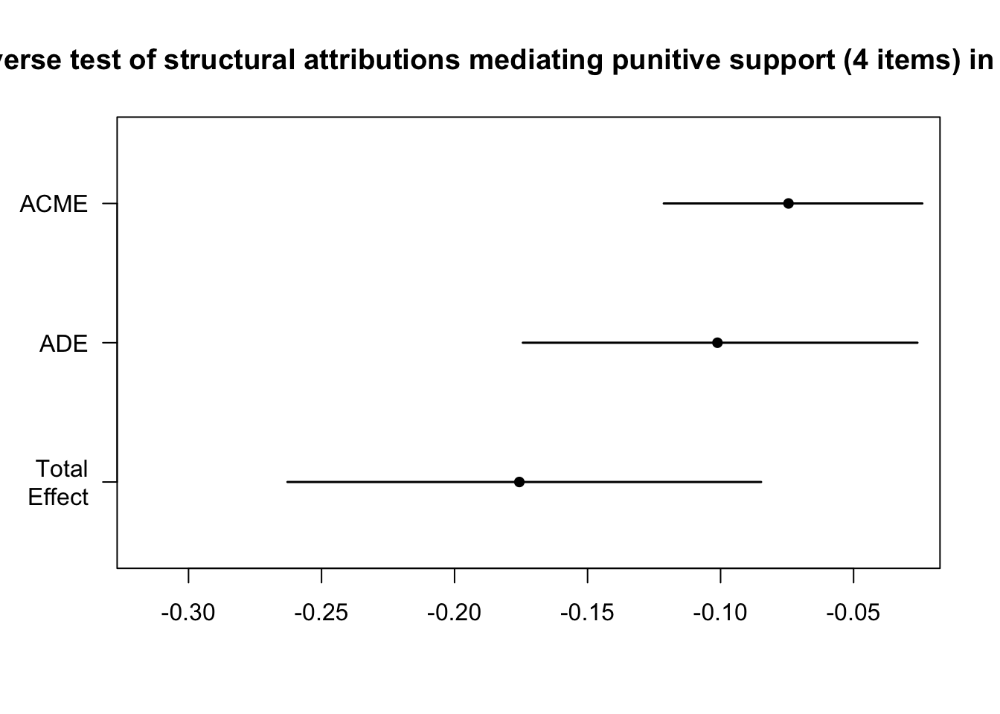
## NULL| Estimate | 95% CI Lower | 95% CI Upper | p-value | |
|---|---|---|---|---|
| ACME | -0.077 | -0.127 | -0.027 | 0.000 |
| ADE | -0.100 | -0.170 | -0.023 | 0.018 |
| Total Effect | -0.178 | -0.268 | -0.096 | 0.000 |
| Prop. Mediated | 0.438 | 0.192 | 0.800 | 0.000 |
## Call: psych::mediate(y = attrib.disp ~ critical + (punitive4) - political -
## female - white - age.c - college - adj_income.c, data = s3,
## main = "Reverse test of structural attributions mediating punitive support (4 items) in Study 3")
##
## Direct effect estimates (traditional regression) (c') X + M on Y
## attrib.disp* se t df
## Intercept 1.19 0.07 16.13 1491
## critical -0.10 0.04 -2.62 1491
## punitive4 0.34 0.01 25.93 1491
## Prob
## Intercept 0.0000000000000000000000000000000000000000000000000000042999999999999993790021778762060550524586895582572055344576620759344376
## critical 0.0089499999999999996225241716274467762559652328491210937500000000000000000000000000000000000000000000000000000000000000000000
## punitive4 0.0000000000000000000000000000000000000000000000000000000000000000000000000000000000000000000000000000000000000000000000000118
##
## R = 1.04 R2 = 1.08 F = -10044 on 2 and 1491 DF p-value: 1
##
## Total effect estimates (c) (X on Y)
## attrib.disp* se t df
## Intercept 2.03 0.08 25.3 1492
## critical -0.17 0.04 -3.8 1492
## Prob
## Intercept 0.00000000000000000000000000000000000000000000000000000000000000000000000000000000000000000000000000000000000000000000065
## critical 0.00014799999999999999245568760297686594640254043042659759521484375000000000000000000000000000000000000000000000000000000
##
## 'a' effect estimates (X on M)
## punitive4 se t df
## Intercept 2.44 0.13 18.70 1492
## critical -0.21 0.07 -2.91 1492
## Prob
## Intercept 0.000000000000000000000000000000000000000000000000000000000000000000000265
## critical 0.003629999999999999980154763434825326839927583932876586914062500000000000
##
## 'b' effect estimates (M on Y controlling for X)
## attrib.disp* se t df
## punitive4 0.34 0.01 25.9 1491
## Prob
## punitive4 0.0000000000000000000000000000000000000000000000000000000000000000000000000000000000000000000000000000000000000000000000000118
##
## 'ab' effect estimates (through all mediators)
## attrib.disp* boot sd lower upper
## critical -0.07 -0.07 0.02 -0.12 -0.03C.13.5 restorative
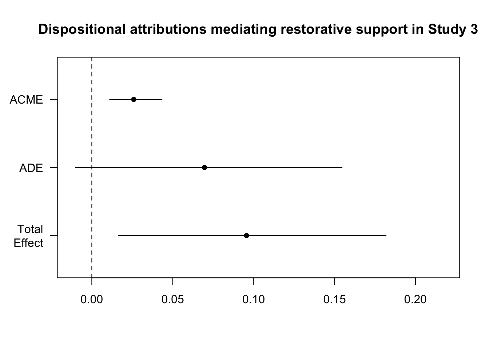
## NULL| Estimate | 95% CI Lower | 95% CI Upper | p-value | |
|---|---|---|---|---|
| ACME | 0.026 | 0.012 | 0.042 | 0.000 |
| ADE | 0.068 | -0.006 | 0.146 | 0.084 |
| Total Effect | 0.095 | 0.015 | 0.175 | 0.014 |
| Prop. Mediated | 0.276 | 0.101 | 1.143 | 0.014 |
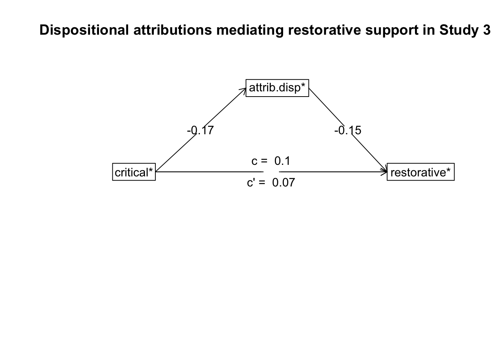
## Call: psych::mediate(y = restorative ~ critical + (attrib.disp) - political -
## female - white - age.c - college - adj_income.c, data = s3,
## main = "Dispositional attributions mediating restorative support in Study 3")
##
## Direct effect estimates (traditional regression) (c') X + M on Y
## restorative* se t df Prob
## Intercept 7.20 0.09 83.62 1491 0.000000000000
## critical 0.07 0.04 1.80 1491 0.071600000000
## attrib.disp -0.15 0.02 -6.37 1491 0.000000000252
##
## R = 1.01 R2 = 1.02 F = -40521 on 2 and 1491 DF p-value: 1
##
## Total effect estimates (c) (X on Y)
## restorative* se t df Prob
## Intercept 6.9 0.07 94.56 1492 0.0000
## critical 0.1 0.04 2.41 1492 0.0162
##
## 'a' effect estimates (X on M)
## attrib.disp se t df
## Intercept 2.03 0.08 25.3 1492
## critical -0.17 0.04 -3.8 1492
## Prob
## Intercept 0.00000000000000000000000000000000000000000000000000000000000000000000000000000000000000000000000000000000000000000000065
## critical 0.00014799999999999999245568760297686594640254043042659759521484375000000000000000000000000000000000000000000000000000000
##
## 'b' effect estimates (M on Y controlling for X)
## restorative* se t df Prob
## attrib.disp -0.15 0.02 -6.37 1491 0.000000000252
##
## 'ab' effect estimates (through all mediators)
## restorative* boot sd lower upper
## critical 0.03 0.03 0.01 0.01 0.04C.13.6 restorative (R)
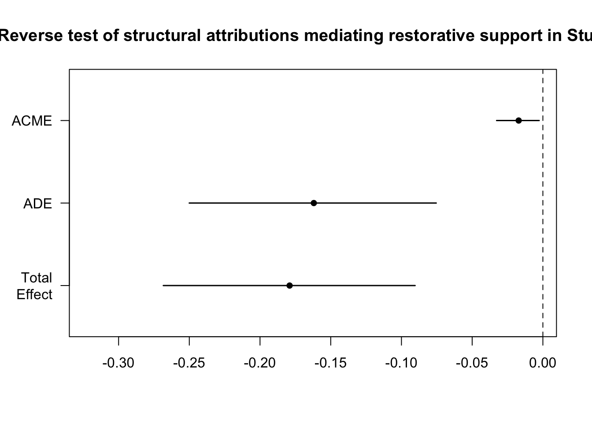
## NULL| Estimate | 95% CI Lower | 95% CI Upper | p-value | |
|---|---|---|---|---|
| ACME | -0.017 | -0.034 | -0.002 | 0.03 |
| ADE | -0.161 | -0.246 | -0.074 | 0.00 |
| Total Effect | -0.178 | -0.266 | -0.094 | 0.00 |
| Prop. Mediated | 0.094 | 0.011 | 0.233 | 0.03 |
## Call: psych::mediate(y = attrib.disp ~ critical + (restorative) - political -
## female - white - age.c - college - adj_income.c, data = s3,
## main = "Reverse test of structural attributions mediating restorative support in Study 3")
##
## Direct effect estimates (traditional regression) (c') X + M on Y
## attrib.disp* se t df
## Intercept 3.27 0.21 15.60 1491
## critical -0.15 0.04 -3.45 1491
## restorative -0.18 0.03 -6.37 1491
## Prob
## Intercept 0.00000000000000000000000000000000000000000000000000658
## critical 0.00057499999999999999028554853452988027129322290420532
## restorative 0.00000000025200000000000000866392584065978858115508743
##
## R = 1.06 R2 = 1.11 F = -7329 on 2 and 1491 DF p-value: 1
##
## Total effect estimates (c) (X on Y)
## attrib.disp* se t df
## Intercept 2.03 0.08 25.3 1492
## critical -0.17 0.04 -3.8 1492
## Prob
## Intercept 0.00000000000000000000000000000000000000000000000000000000000000000000000000000000000000000000000000000000000000000000065
## critical 0.00014799999999999999245568760297686594640254043042659759521484375000000000000000000000000000000000000000000000000000000
##
## 'a' effect estimates (X on M)
## restorative se t df Prob
## Intercept 6.9 0.07 94.56 1492 0.0000
## critical 0.1 0.04 2.41 1492 0.0162
##
## 'b' effect estimates (M on Y controlling for X)
## attrib.disp* se t df Prob
## restorative -0.18 0.03 -6.37 1491 0.000000000252
##
## 'ab' effect estimates (through all mediators)
## attrib.disp* boot sd lower upper
## critical -0.02 -0.02 0.01 -0.03 0C.13.7 restorative4
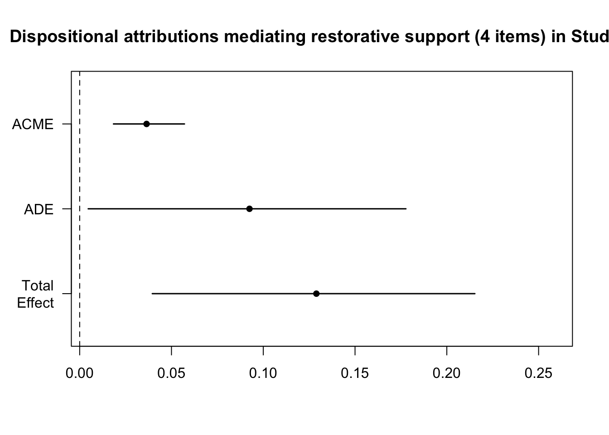
## NULL| Estimate | 95% CI Lower | 95% CI Upper | p-value | |
|---|---|---|---|---|
| ACME | 0.036 | 0.017 | 0.058 | 0.002 |
| ADE | 0.093 | 0.012 | 0.179 | 0.028 |
| Total Effect | 0.129 | 0.044 | 0.217 | 0.002 |
| Prop. Mediated | 0.279 | 0.129 | 0.748 | 0.004 |
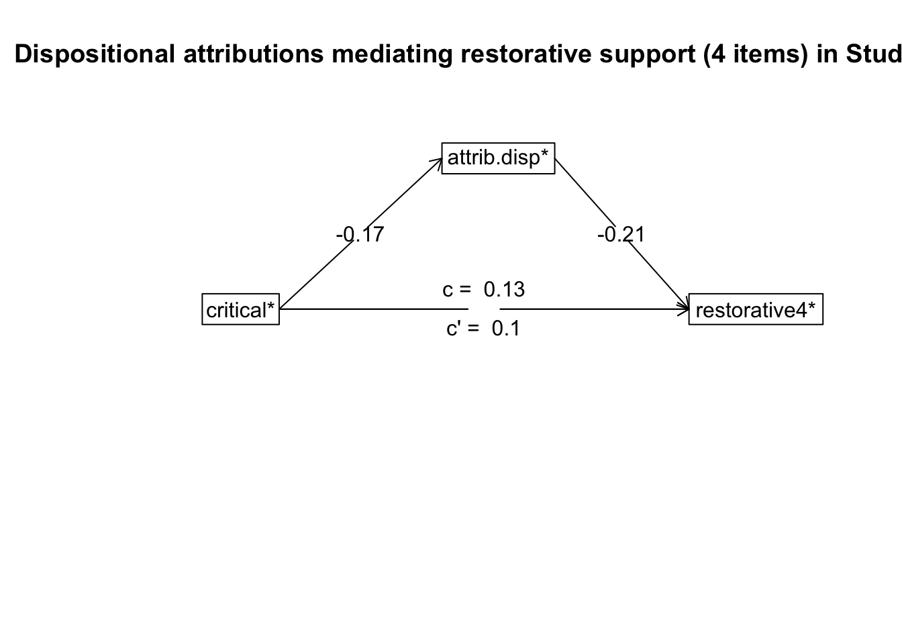
## Call: psych::mediate(y = restorative4 ~ critical + (attrib.disp) -
## political - female - white - age.c - college - adj_income.c,
## data = s3, main = "Dispositional attributions mediating restorative support (4 items) in Study 3")
##
## Direct effect estimates (traditional regression) (c') X + M on Y
## restorative4* se t df Prob
## Intercept 7.46 0.09 81.46 1491 0.000000000000000000
## critical 0.10 0.04 2.24 1491 0.025300000000000000
## attrib.disp -0.21 0.02 -8.34 1491 0.000000000000000169
##
## R = 1.01 R2 = 1.02 F = -35134 on 2 and 1491 DF p-value: 1
##
## Total effect estimates (c) (X on Y)
## restorative4* se t df Prob
## Intercept 7.04 0.08 89.9 1492 0.00000
## critical 0.13 0.04 3.0 1492 0.00271
##
## 'a' effect estimates (X on M)
## attrib.disp se t df
## Intercept 2.03 0.08 25.3 1492
## critical -0.17 0.04 -3.8 1492
## Prob
## Intercept 0.00000000000000000000000000000000000000000000000000000000000000000000000000000000000000000000000000000000000000000000065
## critical 0.00014799999999999999245568760297686594640254043042659759521484375000000000000000000000000000000000000000000000000000000
##
## 'b' effect estimates (M on Y controlling for X)
## restorative4* se t df Prob
## attrib.disp -0.21 0.02 -8.34 1491 0.000000000000000169
##
## 'ab' effect estimates (through all mediators)
## restorative4* boot sd lower upper
## critical 0.04 0.04 0.01 0.02 0.06C.13.8 restorative4 (R)
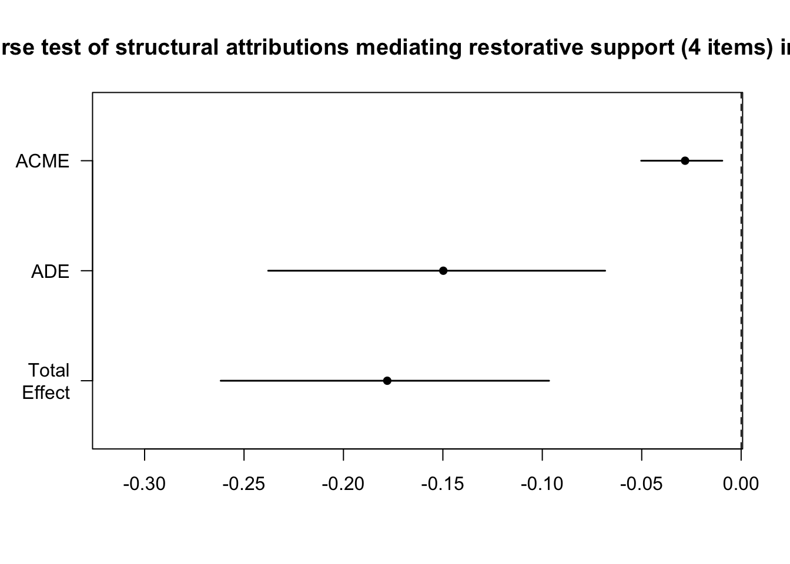
## NULL| Estimate | 95% CI Lower | 95% CI Upper | p-value | |
|---|---|---|---|---|
| ACME | -0.028 | -0.048 | -0.010 | 0.002 |
| ADE | -0.150 | -0.238 | -0.068 | 0.000 |
| Total Effect | -0.178 | -0.267 | -0.092 | 0.000 |
| Prop. Mediated | 0.159 | 0.056 | 0.308 | 0.002 |
## Call: psych::mediate(y = attrib.disp ~ critical + (restorative4) -
## political - female - white - age.c - college - adj_income.c,
## data = s3, main = "Reverse test of structural attributions mediating restorative support (4 items) in Study 3")
##
## Direct effect estimates (traditional regression) (c') X + M on Y
## attrib.disp* se t df
## Intercept 3.55 0.20 17.88 1491
## critical -0.14 0.04 -3.23 1491
## restorative4 -0.22 0.03 -8.34 1491
## Prob
## Intercept 0.0000000000000000000000000000000000000000000000000000000000000000608
## critical 0.0012500000000000000260208521396521064161788672208786010742187500000
## restorative4 0.0000000000000001690000000000000097795537319664222182740679641501161
##
## R = 1.05 R2 = 1.11 F = -7453 on 2 and 1491 DF p-value: 1
##
## Total effect estimates (c) (X on Y)
## attrib.disp* se t df
## Intercept 2.03 0.08 25.3 1492
## critical -0.17 0.04 -3.8 1492
## Prob
## Intercept 0.00000000000000000000000000000000000000000000000000000000000000000000000000000000000000000000000000000000000000000000065
## critical 0.00014799999999999999245568760297686594640254043042659759521484375000000000000000000000000000000000000000000000000000000
##
## 'a' effect estimates (X on M)
## restorative4 se t df Prob
## Intercept 7.04 0.08 89.9 1492 0.00000
## critical 0.13 0.04 3.0 1492 0.00271
##
## 'b' effect estimates (M on Y controlling for X)
## attrib.disp* se t df Prob
## restorative4 -0.22 0.03 -8.34 1491 0.000000000000000169
##
## 'ab' effect estimates (through all mediators)
## attrib.disp* boot sd lower upper
## critical -0.03 -0.03 0.01 -0.05 -0.01C.13.9 budget
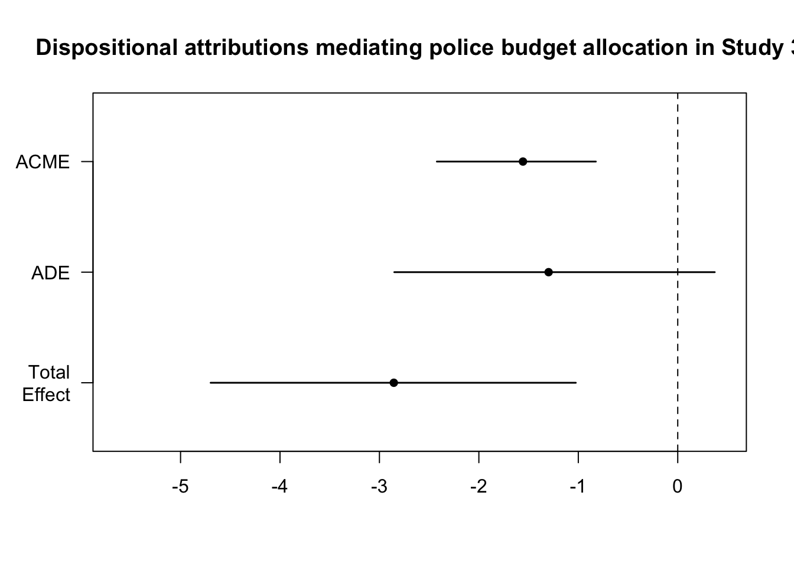
## NULL| Estimate | 95% CI Lower | 95% CI Upper | p-value | |
|---|---|---|---|---|
| ACME | -1.576 | -2.392 | -0.764 | 0.00 |
| ADE | -1.344 | -3.016 | 0.265 | 0.12 |
| Total Effect | -2.920 | -4.778 | -1.122 | 0.00 |
| Prop. Mediated | 0.541 | 0.285 | 1.193 | 0.00 |
## Call: psych::mediate(y = budget.pun ~ critical + (attrib.disp) - political -
## female - white - age.c - college - adj_income.c, data = s3,
## main = "Dispositional attributions mediating police budget allocation in Study 3")
##
## Direct effect estimates (traditional regression) (c') X + M on Y
## budget.pun* se t df
## Intercept -11.14 1.84 -6.05 1491
## critical -1.19 0.87 -1.37 1491
## attrib.disp 8.99 0.50 18.08 1491
## Prob
## Intercept 0.00000000185999999999999998763076516575124333408020049773767823353410
## critical 0.17100000000000001310063169057684717699885368347167968750000000000000
## attrib.disp 0.00000000000000000000000000000000000000000000000000000000000000000328
##
## R = 1.24 R2 = 1.54 F = -2136 on 2 and 1491 DF p-value: 1
##
## Total effect estimates (c) (X on Y)
## budget.pun* se t df Prob
## Intercept 7.11 1.70 4.18 1492 0.0000303
## critical -2.72 0.95 -2.86 1492 0.0043000
##
## 'a' effect estimates (X on M)
## attrib.disp se t df
## Intercept 2.03 0.08 25.3 1492
## critical -0.17 0.04 -3.8 1492
## Prob
## Intercept 0.00000000000000000000000000000000000000000000000000000000000000000000000000000000000000000000000000000000000000000000065
## critical 0.00014799999999999999245568760297686594640254043042659759521484375000000000000000000000000000000000000000000000000000000
##
## 'b' effect estimates (M on Y controlling for X)
## budget.pun* se t df
## attrib.disp 8.99 0.5 18.1 1491
## Prob
## attrib.disp 0.00000000000000000000000000000000000000000000000000000000000000000328
##
## 'ab' effect estimates (through all mediators)
## budget.pun* boot sd lower upper
## critical -1.53 -1.55 0.42 -2.38 -0.76C.13.10 budget.pun (R)
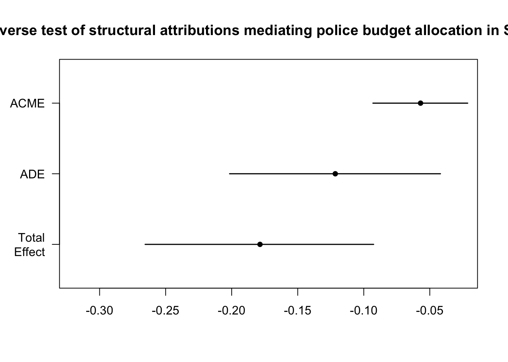
## NULL| Estimate | 95% CI Lower | 95% CI Upper | p-value | |
|---|---|---|---|---|
| ACME | -0.057 | -0.096 | -0.020 | 0.002 |
| ADE | -0.121 | -0.200 | -0.043 | 0.002 |
| Total Effect | -0.178 | -0.266 | -0.092 | 0.000 |
| Prop. Mediated | 0.319 | 0.137 | 0.599 | 0.002 |
## Call: psych::mediate(y = attrib.disp ~ critical + (budget.pun) - political -
## female - white - age.c - college - adj_income.c, data = s3,
## main = "Reverse test of structural attributions mediating police budget allocation in Study 3")
##
## Direct effect estimates (traditional regression) (c') X + M on Y
## attrib.disp* se t df
## Intercept 1.89 0.07 25.83 1491
## critical -0.12 0.04 -2.85 1491
## budget.pun 0.02 0.00 18.08 1491
## Prob
## Intercept 0.0000000000000000000000000000000000000000000000000000000000000000000000000000000000000000000000000000000000000000000000000656
## critical 0.0043899999999999998051558591782850271556526422500610351562500000000000000000000000000000000000000000000000000000000000000000
## budget.pun 0.0000000000000000000000000000000000000000000000000000000000000000032799999999999992460805642610765559958763468787654156674720
##
## R = 1.05 R2 = 1.1 F = -8559 on 2 and 1491 DF p-value: 1
##
## Total effect estimates (c) (X on Y)
## attrib.disp* se t df
## Intercept 2.03 0.08 25.3 1492
## critical -0.17 0.04 -3.8 1492
## Prob
## Intercept 0.00000000000000000000000000000000000000000000000000000000000000000000000000000000000000000000000000000000000000000000065
## critical 0.00014799999999999999245568760297686594640254043042659759521484375000000000000000000000000000000000000000000000000000000
##
## 'a' effect estimates (X on M)
## budget.pun se t df Prob
## Intercept 7.11 1.70 4.18 1492 0.0000303
## critical -2.72 0.95 -2.86 1492 0.0043000
##
## 'b' effect estimates (M on Y controlling for X)
## attrib.disp* se t df
## budget.pun 0.02 0 18.1 1491
## Prob
## budget.pun 0.00000000000000000000000000000000000000000000000000000000000000000328
##
## 'ab' effect estimates (through all mediators)
## attrib.disp* boot sd lower upper
## critical -0.05 -0.05 0.02 -0.09 -0.02C.13.11 racism concern
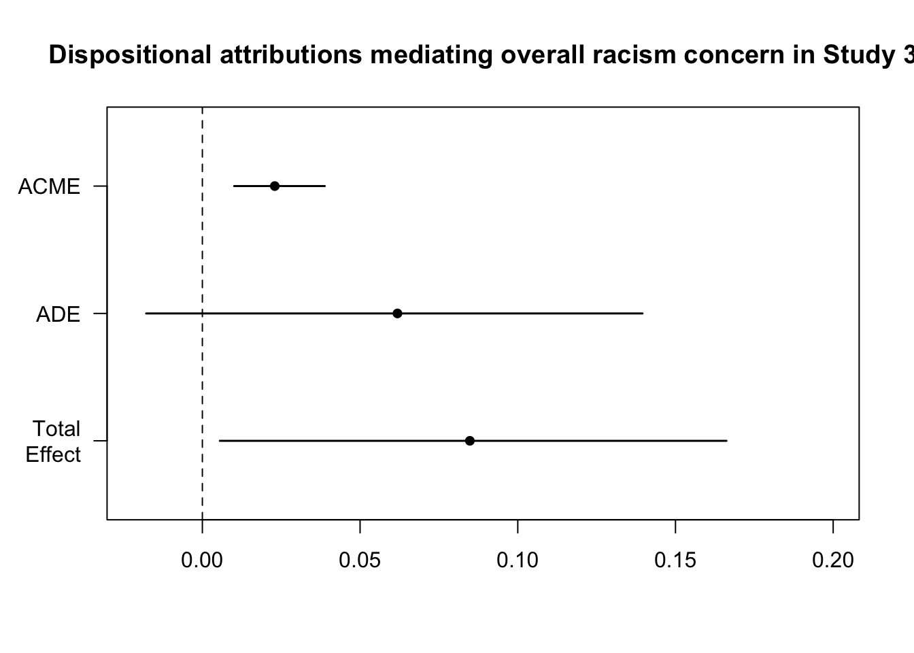
## NULL| Estimate | 95% CI Lower | 95% CI Upper | p-value | |
|---|---|---|---|---|
| ACME | 0.023 | 0.010 | 0.039 | 0.000 |
| ADE | 0.059 | -0.019 | 0.137 | 0.124 |
| Total Effect | 0.083 | 0.002 | 0.165 | 0.044 |
| Prop. Mediated | 0.277 | 0.060 | 1.394 | 0.044 |
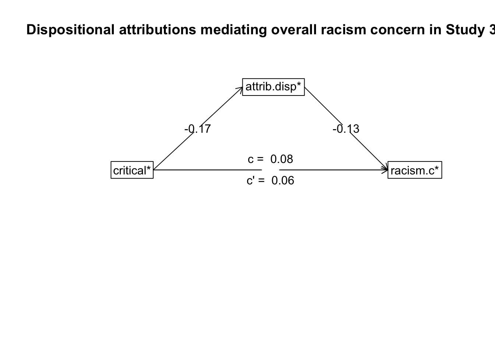
## Call: psych::mediate(y = racism.c ~ critical + (attrib.disp) - political -
## female - white - age.c - college - adj_income.c, data = s3,
## main = "Dispositional attributions mediating overall racism concern in Study 3")
##
## Direct effect estimates (traditional regression) (c') X + M on Y
## racism.c* se t df
## Intercept 1.45 0.08 17.29 1491
## critical 0.06 0.04 1.59 1491
## attrib.disp -0.13 0.02 -5.59 1491
## Prob
## Intercept 0.000000000000000000000000000000000000000000000000000000000000363
## critical 0.113000000000000003219646771412953967228531837463378906250000000
## attrib.disp 0.000000026400000000000001478797891974782674484600875075557269156
##
## R = 0.45 R2 = 0.2 F = 187 on 2 and 1491 DF p-value: 0.00000000000000000000000000000000000000000000000000000000000000000000000038
##
## Total effect estimates (c) (X on Y)
## racism.c* se t df
## Intercept 1.20 0.07 16.83 1492
## critical 0.08 0.04 2.12 1492
## Prob
## Intercept 0.000000000000000000000000000000000000000000000000000000000242
## critical 0.033799999999999996713739847109536640346050262451171875000000
##
## 'a' effect estimates (X on M)
## attrib.disp se t df
## Intercept 2.03 0.08 25.3 1492
## critical -0.17 0.04 -3.8 1492
## Prob
## Intercept 0.00000000000000000000000000000000000000000000000000000000000000000000000000000000000000000000000000000000000000000000065
## critical 0.00014799999999999999245568760297686594640254043042659759521484375000000000000000000000000000000000000000000000000000000
##
## 'b' effect estimates (M on Y controlling for X)
## racism.c* se t df Prob
## attrib.disp -0.13 0.02 -5.59 1491 0.0000000264
##
## 'ab' effect estimates (through all mediators)
## racism.c* boot sd lower upper
## critical 0.02 0.02 0.01 0.01 0.04C.13.12 racism concern (R)
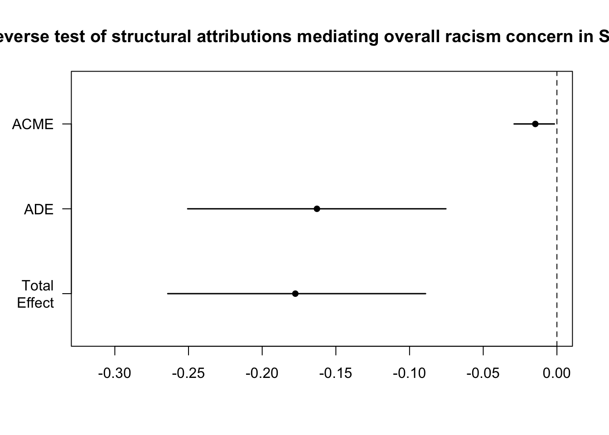
## NULL| Estimate | 95% CI Lower | 95% CI Upper | p-value | |
|---|---|---|---|---|
| ACME | -0.014 | -0.029 | -0.001 | 0.03 |
| ADE | -0.161 | -0.253 | -0.080 | 0.00 |
| Total Effect | -0.175 | -0.265 | -0.092 | 0.00 |
| Prop. Mediated | 0.078 | 0.009 | 0.181 | 0.03 |
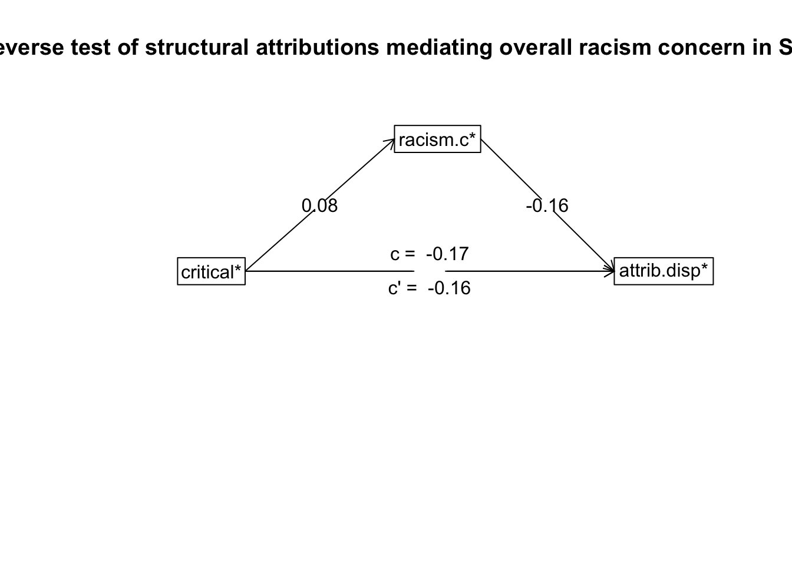
## Call: psych::mediate(y = attrib.disp ~ critical + (racism.c) - political -
## female - white - age.c - college - adj_income.c, data = s3,
## main = "Reverse test of structural attributions mediating overall racism concern in Study 3")
##
## Direct effect estimates (traditional regression) (c') X + M on Y
## attrib.disp* se t df
## Intercept 2.22 0.09 25.68 1491
## critical -0.16 0.04 -3.53 1491
## racism.c -0.16 0.03 -5.59 1491
## Prob
## Intercept 0.00000000000000000000000000000000000000000000000000000000000000000000000000000000000000000000000000000000000000000000000108
## critical 0.00042900000000000001933869731018944548850413411855697631835937500000000000000000000000000000000000000000000000000000000000
## racism.c 0.00000002640000000000000147879789197478267448460087507555726915597915649414062500000000000000000000000000000000000000000000
##
## R = 1.06 R2 = 1.11 F = -7289 on 2 and 1491 DF p-value: 1
##
## Total effect estimates (c) (X on Y)
## attrib.disp* se t df
## Intercept 2.03 0.08 25.3 1492
## critical -0.17 0.04 -3.8 1492
## Prob
## Intercept 0.00000000000000000000000000000000000000000000000000000000000000000000000000000000000000000000000000000000000000000000065
## critical 0.00014799999999999999245568760297686594640254043042659759521484375000000000000000000000000000000000000000000000000000000
##
## 'a' effect estimates (X on M)
## racism.c se t df
## Intercept 1.20 0.07 16.83 1492
## critical 0.08 0.04 2.12 1492
## Prob
## Intercept 0.000000000000000000000000000000000000000000000000000000000242
## critical 0.033799999999999996713739847109536640346050262451171875000000
##
## 'b' effect estimates (M on Y controlling for X)
## attrib.disp* se t df Prob
## racism.c -0.16 0.03 -5.59 1491 0.0000000264
##
## 'ab' effect estimates (through all mediators)
## attrib.disp* boot sd lower upper
## critical -0.01 -0.01 0.01 -0.03 0C.14 Mediation by Attributions
C.14.1 punitive
- Both structural and dispositional attributions mediate the critical effect on punitive support

## Call: psych::mediate(y = punitive ~ critical + (attrib.sys) + (attrib.disp) -
## political - female - white - age.c - college - adj_income.c,
## data = s3, main = "Attributions mediating punitive support in Study 3")
##
## Direct effect estimates (traditional regression) (c') X + M on Y
## punitive* se t df
## Intercept 2.17 0.24 9.00 1490
## critical 0.00 0.06 -0.03 1490
## attrib.sys -0.23 0.04 -5.92 1490
## attrib.disp 0.83 0.03 25.04 1490
## Prob
## Intercept 0.0000000000000000006760000000000000044514759288954435180886688900717726002226326542654533113818615674972534179687500000
## critical 0.9739999999999999769073610877967439591884613037109375000000000000000000000000000000000000000000000000000000000000000000
## attrib.sys 0.0000000039000000000000001808596607438643644183429159966181032359600067138671875000000000000000000000000000000000000000
## attrib.disp 0.0000000000000000000000000000000000000000000000000000000000000000000000000000000000000000000000000000000000000000000902
##
## R = 1.05 R2 = 1.09 F = -5869 on 3 and 1490 DF p-value: 1
##
## Total effect estimates (c) (X on Y)
## punitive* se t df
## Intercept 2.70 0.12 21.88 1492
## critical -0.18 0.07 -2.59 1492
## Prob
## Intercept 0.0000000000000000000000000000000000000000000000000000000000000000000000000000000000000000000283
## critical 0.0096699999999999997762900605380309571046382188796997070312500000000000000000000000000000000000
##
## 'a' effect estimates (X on M)
## attrib.sys se t df Prob
## Intercept 4.94 0.07 73.12 1492 0.0000000
## critical 0.15 0.04 3.99 1492 0.0000688
## attrib.disp se t df
## Intercept 2.03 0.08 25.3 1492
## critical -0.17 0.04 -3.8 1492
## Prob
## Intercept 0.00000000000000000000000000000000000000000000000000000000000000000000000000000000000000000000000000000000000000000000065
## critical 0.00014799999999999999245568760297686594640254043042659759521484375000000000000000000000000000000000000000000000000000000
##
## 'b' effect estimates (M on Y controlling for X)
## punitive* se t df
## attrib.sys -0.23 0.04 -5.92 1490
## attrib.disp 0.83 0.03 25.04 1490
## Prob
## attrib.sys 0.0000000039000000000000001808596607438643644183429159966181032359600067138671875000000000000000000000000000000000000000
## attrib.disp 0.0000000000000000000000000000000000000000000000000000000000000000000000000000000000000000000000000000000000000000000902
##
## 'ab' effect estimates (through all mediators)
## punitive* boot sd lower upper
## critical -0.18 -0.18 0.04 -0.26 -0.1
##
## 'ab' effects estimates for each mediator for punitive
## boot sd lower upper
## critical -0.18 0.04 -0.26 -0.10
## attrib.sys*critical -0.04 0.01 -0.06 -0.02
## attrib.disp*critical -0.14 0.04 -0.22 -0.07C.14.2 punitive4
- Similar pattern as full composite. Both structural and dispositional attributions mediate the critical effect on punitive support.

## Call: psych::mediate(y = punitive4 ~ critical + (attrib.sys) + (attrib.disp) -
## political - female - white - age.c - college - adj_income.c,
## data = s3, main = "Attributions mediating punitive support (4 items) in Study 3")
##
## Direct effect estimates (traditional regression) (c') X + M on Y
## punitive4* se t df
## Intercept 2.26 0.25 8.88 1490
## critical -0.02 0.06 -0.33 1490
## attrib.sys -0.31 0.04 -7.53 1490
## attrib.disp 0.85 0.04 24.29 1490
## Prob
## Intercept 0.0000000000000000019099999999999998516083981750169695590038518106341600133468716649076668545603752136230468750000
## critical 0.7409999999999999920063942226988729089498519897460937500000000000000000000000000000000000000000000000000000000000
## attrib.sys 0.0000000000000866999999999999991245504339237516477380523366447206967677630018442869186401367187500000000000000000
## attrib.disp 0.0000000000000000000000000000000000000000000000000000000000000000000000000000000000000000000000000000000000000472
##
## R = 1.06 R2 = 1.12 F = -4684 on 3 and 1490 DF p-value: 1
##
## Total effect estimates (c) (X on Y)
## punitive4* se t df
## Intercept 2.44 0.13 18.70 1492
## critical -0.21 0.07 -2.91 1492
## Prob
## Intercept 0.000000000000000000000000000000000000000000000000000000000000000000000265
## critical 0.003629999999999999980154763434825326839927583932876586914062500000000000
##
## 'a' effect estimates (X on M)
## attrib.sys se t df Prob
## Intercept 4.94 0.07 73.12 1492 0.0000000
## critical 0.15 0.04 3.99 1492 0.0000688
## attrib.disp se t df
## Intercept 2.03 0.08 25.3 1492
## critical -0.17 0.04 -3.8 1492
## Prob
## Intercept 0.00000000000000000000000000000000000000000000000000000000000000000000000000000000000000000000000000000000000000000000065
## critical 0.00014799999999999999245568760297686594640254043042659759521484375000000000000000000000000000000000000000000000000000000
##
## 'b' effect estimates (M on Y controlling for X)
## punitive4* se t df
## attrib.sys -0.31 0.04 -7.53 1490
## attrib.disp 0.85 0.04 24.29 1490
## Prob
## attrib.sys 0.0000000000000866999999999999991245504339237516477380523366447206967677630018442869186401367187500000000000000000
## attrib.disp 0.0000000000000000000000000000000000000000000000000000000000000000000000000000000000000000000000000000000000000472
##
## 'ab' effect estimates (through all mediators)
## punitive4* boot sd lower upper
## critical -0.19 -0.19 0.04 -0.28 -0.11
##
## 'ab' effects estimates for each mediator for punitive4
## boot sd lower upper
## critical -0.19 0.04 -0.28 -0.11
## attrib.sys*critical -0.05 0.01 -0.08 -0.02
## attrib.disp*critical -0.14 0.04 -0.22 -0.07C.14.3 restorative
- Using the full 6-item measure, dispositional attributions are not associated with restorative support, but structural attributions are very much.
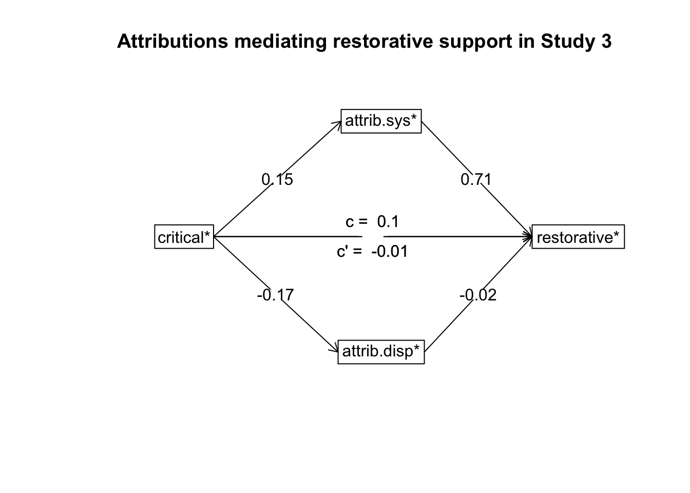
## Call: psych::mediate(y = restorative ~ critical + (attrib.sys) + (attrib.disp) -
## political - female - white - age.c - college - adj_income.c,
## data = s3, main = "Attributions mediating restorative support in Study 3")
##
## Direct effect estimates (traditional regression) (c') X + M on Y
## restorative* se t df
## Intercept 3.42 0.13 26.28 1490
## critical -0.01 0.03 -0.44 1490
## attrib.sys 0.71 0.02 33.54 1490
## attrib.disp -0.02 0.02 -1.34 1490
## Prob
## Intercept 0.000000000000000000000000000000000000000000000000000000000000000000000000000000000000000000000000000000000000000000000000000021599999999999997004934142047694761125144797003648056112921305
## critical 0.658000000000000029309887850104132667183876037597656250000000000000000000000000000000000000000000000000000000000000000000000000000000000000000000000000000000000000000000000000000000000000
## attrib.sys 0.000000000000000000000000000000000000000000000000000000000000000000000000000000000000000000000000000000000000000000000000000000000000000000000000000000000000000000000000000000000000000313
## attrib.disp 0.181999999999999995115018691649311222136020660400390625000000000000000000000000000000000000000000000000000000000000000000000000000000000000000000000000000000000000000000000000000000000000
##
## R = 1.01 R2 = 1.01 F = -47005 on 3 and 1490 DF p-value: 1
##
## Total effect estimates (c) (X on Y)
## restorative* se t df Prob
## Intercept 6.9 0.07 94.56 1492 0.0000
## critical 0.1 0.04 2.41 1492 0.0162
##
## 'a' effect estimates (X on M)
## attrib.sys se t df Prob
## Intercept 4.94 0.07 73.12 1492 0.0000000
## critical 0.15 0.04 3.99 1492 0.0000688
## attrib.disp se t df
## Intercept 2.03 0.08 25.3 1492
## critical -0.17 0.04 -3.8 1492
## Prob
## Intercept 0.00000000000000000000000000000000000000000000000000000000000000000000000000000000000000000000000000000000000000000000065
## critical 0.00014799999999999999245568760297686594640254043042659759521484375000000000000000000000000000000000000000000000000000000
##
## 'b' effect estimates (M on Y controlling for X)
## restorative* se t df
## attrib.sys 0.71 0.02 33.54 1490
## attrib.disp -0.02 0.02 -1.34 1490
## Prob
## attrib.sys 0.000000000000000000000000000000000000000000000000000000000000000000000000000000000000000000000000000000000000000000000000000000000000000000000000000000000000000000000000000000000000000313
## attrib.disp 0.181999999999999995115018691649311222136020660400390625000000000000000000000000000000000000000000000000000000000000000000000000000000000000000000000000000000000000000000000000000000000000
##
## 'ab' effect estimates (through all mediators)
## restorative* boot sd lower upper
## critical 0.11 0.11 0.03 0.06 0.17
##
## 'ab' effects estimates for each mediator for restorative
## boot sd lower upper
## critical 0.11 0.03 0.06 0.17
## attrib.sys*critical 0.11 0.03 0.06 0.16
## attrib.disp*critical 0.00 0.00 0.00 0.01C.14.4 restorative4
- Using the reduced 4-item measure, dispositional attributions are significantly associated with restorative support, but not as strongly as structural attributions.
- Structural and dispositional attributions also partially mediated the critical effect on the reduced restorative measure.

## Call: psych::mediate(y = restorative4 ~ critical + (attrib.sys) + (attrib.disp) -
## political - female - white - age.c - college - adj_income.c,
## data = s3, main = "Attributions mediating restorative support (4 items) in Study 3")
##
## Direct effect estimates (traditional regression) (c') X + M on Y
## restorative4* se t df
## Intercept 3.41 0.14 24.77 1490
## critical 0.00 0.03 0.11 1490
## attrib.sys 0.76 0.02 34.00 1490
## attrib.disp -0.07 0.02 -3.86 1490
## Prob
## Intercept 0.0000000000000000000000000000000000000000000000000000000000000000000000000000000000000000000000000000000000000000098499999999999977037122765780179167558695319285005672865946886906092131022989
## critical 0.9110000000000000319744231092045083642005920410156250000000000000000000000000000000000000000000000000000000000000000000000000000000000000000000000000000000000000000000000000000000000000000000
## attrib.sys 0.0000000000000000000000000000000000000000000000000000000000000000000000000000000000000000000000000000000000000000000000000000000000000000000000000000000000000000000000000000000000000000000449
## attrib.disp 0.0001200000000000000030401028916493544329568976536393165588378906250000000000000000000000000000000000000000000000000000000000000000000000000000000000000000000000000000000000000000000000000000
##
## R = 1.01 R2 = 1.01 F = -41187 on 3 and 1490 DF p-value: 1
##
## Total effect estimates (c) (X on Y)
## restorative4* se t df Prob
## Intercept 7.04 0.08 89.9 1492 0.00000
## critical 0.13 0.04 3.0 1492 0.00271
##
## 'a' effect estimates (X on M)
## attrib.sys se t df Prob
## Intercept 4.94 0.07 73.12 1492 0.0000000
## critical 0.15 0.04 3.99 1492 0.0000688
## attrib.disp se t df
## Intercept 2.03 0.08 25.3 1492
## critical -0.17 0.04 -3.8 1492
## Prob
## Intercept 0.00000000000000000000000000000000000000000000000000000000000000000000000000000000000000000000000000000000000000000000065
## critical 0.00014799999999999999245568760297686594640254043042659759521484375000000000000000000000000000000000000000000000000000000
##
## 'b' effect estimates (M on Y controlling for X)
## restorative4* se t df
## attrib.sys 0.76 0.02 34.00 1490
## attrib.disp -0.07 0.02 -3.86 1490
## Prob
## attrib.sys 0.0000000000000000000000000000000000000000000000000000000000000000000000000000000000000000000000000000000000000000000000000000000000000000000000000000000000000000000000000000000000000000000449
## attrib.disp 0.0001200000000000000030401028916493544329568976536393165588378906250000000000000000000000000000000000000000000000000000000000000000000000000000000000000000000000000000000000000000000000000000
##
## 'ab' effect estimates (through all mediators)
## restorative4* boot sd lower upper
## critical 0.13 0.13 0.03 0.07 0.19
##
## 'ab' effects estimates for each mediator for restorative4
## boot sd lower upper
## critical 0.13 0.03 0.07 0.19
## attrib.sys*critical 0.12 0.03 0.06 0.17
## attrib.disp*critical 0.01 0.00 0.00 0.02C.14.5 budget
- Both attribution styles have significant direct effects on budget allocation, about the same magnitude (est = 8, t = 15)
- Both partially mediate the critical effect on budget.
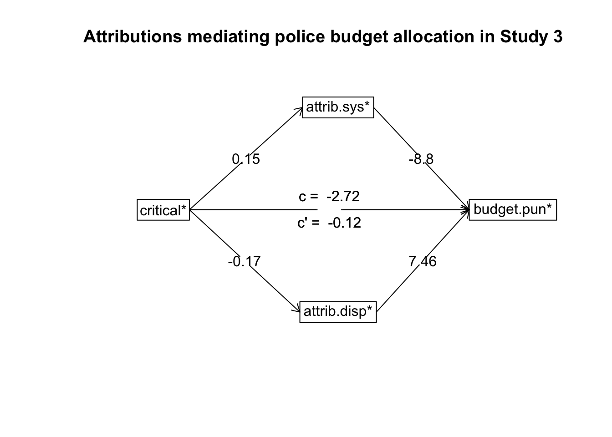
## Call: psych::mediate(y = budget.pun ~ critical + (attrib.sys) + (attrib.disp) -
## political - female - white - age.c - college - adj_income.c,
## data = s3, main = "Attributions mediating police budget allocation in Study 3")
##
## Direct effect estimates (traditional regression) (c') X + M on Y
## budget.pun* se t df
## Intercept 35.46 3.41 10.39 1490
## critical -0.12 0.80 -0.15 1490
## attrib.sys -8.80 0.56 -15.76 1490
## attrib.disp 7.46 0.47 15.85 1490
## Prob
## Intercept 0.000000000000000000000001930000000000000045596506066568
## critical 0.882000000000000006217248937900876626372337341308593750
## attrib.sys 0.000000000000000000000000000000000000000000000000000759
## attrib.disp 0.000000000000000000000000000000000000000000000000000207
##
## R = 1.21 R2 = 1.46 F = -1578 on 3 and 1490 DF p-value: 1
##
## Total effect estimates (c) (X on Y)
## budget.pun* se t df Prob
## Intercept 7.11 1.70 4.18 1492 0.0000303
## critical -2.72 0.95 -2.86 1492 0.0043000
##
## 'a' effect estimates (X on M)
## attrib.sys se t df Prob
## Intercept 4.94 0.07 73.12 1492 0.0000000
## critical 0.15 0.04 3.99 1492 0.0000688
## attrib.disp se t df
## Intercept 2.03 0.08 25.3 1492
## critical -0.17 0.04 -3.8 1492
## Prob
## Intercept 0.00000000000000000000000000000000000000000000000000000000000000000000000000000000000000000000000000000000000000000000065
## critical 0.00014799999999999999245568760297686594640254043042659759521484375000000000000000000000000000000000000000000000000000000
##
## 'b' effect estimates (M on Y controlling for X)
## budget.pun* se t df
## attrib.sys -8.80 0.56 -15.8 1490
## attrib.disp 7.46 0.47 15.8 1490
## Prob
## attrib.sys 0.000000000000000000000000000000000000000000000000000759
## attrib.disp 0.000000000000000000000000000000000000000000000000000207
##
## 'ab' effect estimates (through all mediators)
## budget.pun* boot sd lower upper
## critical -2.6 -2.61 0.54 -3.65 -1.55
##
## 'ab' effects estimates for each mediator for budget.pun
## boot sd lower upper
## critical -2.61 0.54 -3.65 -1.55
## attrib.sys*critical -1.33 0.36 -2.05 -0.66
## attrib.disp*critical -1.28 0.35 -1.97 -0.59C.14.6 racism concern
- Only structural attributions have a significant main effect; doesn’t need a double med

## Call: psych::mediate(y = racism.c ~ critical + (attrib.sys) + (attrib.disp) -
## political - female - white - age.c - college - adj_income.c,
## data = s3, main = "Attributions mediating overall racism concern in Study 3")
##
## Direct effect estimates (traditional regression) (c') X + M on Y
## racism.c* se t df
## Intercept -2.29 0.13 -18.22 1490
## critical -0.02 0.03 -0.78 1490
## attrib.sys 0.71 0.02 34.38 1490
## attrib.disp 0.00 0.02 -0.24 1490
## Prob
## Intercept 0.0000000000000000000000000000000000000000000000000000000000000000004259999999999999628286163116693603031802967498040933902626048674451643872252236552592803263232777998466055974125124969116052962
## critical 0.4380000000000000004440892098500626161694526672363281250000000000000000000000000000000000000000000000000000000000000000000000000000000000000000000000000000000000000000000000000000000000000000000
## attrib.sys 0.0000000000000000000000000000000000000000000000000000000000000000000000000000000000000000000000000000000000000000000000000000000000000000000000000000000000000000000000000000000000000000000000347
## attrib.disp 0.8129999999999999449329379785922355949878692626953125000000000000000000000000000000000000000000000000000000000000000000000000000000000000000000000000000000000000000000000000000000000000000000000
##
## R = 0.74 R2 = 0.55 F = 617 on 3 and 1490 DF p-value: 0.0000000000000000000000000000000000000000000000000000000000000000000000000000000000000000000000000000000000000000000000000000000000000000000000000000000000000000000000000000000000000000000000000000000000000000000000000000000000000000000000000000000000000000000109
##
## Total effect estimates (c) (X on Y)
## racism.c* se t df
## Intercept 1.20 0.07 16.83 1492
## critical 0.08 0.04 2.12 1492
## Prob
## Intercept 0.000000000000000000000000000000000000000000000000000000000242
## critical 0.033799999999999996713739847109536640346050262451171875000000
##
## 'a' effect estimates (X on M)
## attrib.sys se t df Prob
## Intercept 4.94 0.07 73.12 1492 0.0000000
## critical 0.15 0.04 3.99 1492 0.0000688
## attrib.disp se t df
## Intercept 2.03 0.08 25.3 1492
## critical -0.17 0.04 -3.8 1492
## Prob
## Intercept 0.00000000000000000000000000000000000000000000000000000000000000000000000000000000000000000000000000000000000000000000065
## critical 0.00014799999999999999245568760297686594640254043042659759521484375000000000000000000000000000000000000000000000000000000
##
## 'b' effect estimates (M on Y controlling for X)
## racism.c* se t df
## attrib.sys 0.71 0.02 34.38 1490
## attrib.disp 0.00 0.02 -0.24 1490
## Prob
## attrib.sys 0.0000000000000000000000000000000000000000000000000000000000000000000000000000000000000000000000000000000000000000000000000000000000000000000000000000000000000000000000000000000000000000000000347
## attrib.disp 0.8129999999999999449329379785922355949878692626953125000000000000000000000000000000000000000000000000000000000000000000000000000000000000000000000000000000000000000000000000000000000000000000000
##
## 'ab' effect estimates (through all mediators)
## racism.c* boot sd lower upper
## critical 0.11 0.11 0.03 0.05 0.16
##
## 'ab' effects estimates for each mediator for racism.c
## boot sd lower upper
## critical 0.11 0.03 0.05 0.16
## attrib.sys*critical 0.11 0.03 0.05 0.16
## attrib.disp*critical 0.00 0.00 -0.01 0.01C.15 Willingness to Share Memo
- Main effect for all comparisons*** (est = .7ish, t =5ish; SE =.13)
- Largest effect on liberals but moderates also significant
- ns for conservatives, but the critical v naive is trending in expected direction
C.15.1 ANCOVA
| Term | SS | df | Statistic | p |
|---|---|---|---|---|
| (Intercept) | 4635.414 | 1 | 1321.047 | 0.000 |
| condition.f | 152.426 | 3 | 14.480 | 0.000 |
| political | 110.541 | 1 | 31.503 | 0.000 |
| female.f | 10.194 | 1 | 2.905 | 0.089 |
| race.f | 88.622 | 7 | 3.608 | 0.001 |
| age.c | 16.326 | 1 | 4.653 | 0.031 |
| edu3.f | 0.151 | 2 | 0.021 | 0.979 |
| adj_income.c | 4.296 | 1 | 1.224 | 0.269 |
| Residuals | 5182.637 | 1477 | NA | NA |
| group1 | group2 | estimate | se | df | conf.low | conf.high | statistic | p | p.adj | p.adj.signif |
|---|---|---|---|---|---|---|---|---|---|---|
| Critical | Control | 0.816 | 0.137 | 1477 | 0.547 | 1.085 | 5.95 | 0 | 0 | **** |
| Critical | Individual | 0.622 | 0.139 | 1477 | 0.350 | 0.893 | 4.49 | 0 | 0 | **** |
| Critical | Naive | 0.742 | 0.139 | 1477 | 0.470 | 1.014 | 5.35 | 0 | 0 | **** |
| Condition | EMM | SE | df | Conf.low | Conf.high |
|---|---|---|---|---|---|
| Critical | 4.80 | 0.202 | 1477 | 4.41 | 5.20 |
| Control | 3.99 | 0.208 | 1477 | 3.58 | 4.39 |
| Individual | 4.18 | 0.206 | 1477 | 3.78 | 4.58 |
| Naive | 4.06 | 0.212 | 1477 | 3.65 | 4.48 |

Figure C.36: Estimated Marginal Means of Willingness to Share by Condition in Study 3
C.15.2 OLS
| Dependent variable: | |||
| Willingness to Share | |||
| (1) | (2) | (3) | |
| Constant | 4.21*** (0.05) | 4.50*** (0.12) | 4.54*** (0.12) |
| condition.f1 | 0.57*** (0.09) | 0.54*** (0.08) | 0.92*** (0.17) |
| condition.f2 | -0.30*** (0.08) | -0.27** (0.08) | -0.92*** (0.17) |
| condition.f3 | -0.05 (0.09) | -0.08 (0.08) | -0.30 (0.17) |
| political | -0.16*** (0.03) | -0.17*** (0.03) | |
| female | 0.17 (0.10) | 0.18 (0.10) | |
| race.fLatino | 0.26 (0.22) | 0.28 (0.22) | |
| race.fBlack | 0.59** (0.19) | 0.58** (0.19) | |
| race.fNative American | -1.18 (0.94) | -1.23 (0.93) | |
| race.fAsian | 0.72*** (0.19) | 0.70*** (0.19) | |
| race.fMiddle Eastern | 0.77 (0.77) | 0.87 (0.76) | |
| race.fOther race | 0.15 (0.77) | 0.14 (0.76) | |
| race.fMultiracial | 0.03 (0.18) | 0.01 (0.18) | |
| age.c | -0.11* (0.05) | -0.11* (0.05) | |
| edu3.f.L | 0.01 (0.12) | 0.03 (0.12) | |
| edu3.f.Q | -0.01 (0.08) | -0.01 (0.08) | |
| adj_income.c | -0.06 (0.05) | -0.06 (0.05) | |
| condition.f1:political | -0.12* (0.05) | ||
| condition.f2:political | 0.21*** (0.05) | ||
| condition.f3:political | 0.07 (0.05) | ||
| Observations | 1,500 | 1,494 | 1,494 |
| R2 | 0.03 | 0.08 | 0.10 |
| Adjusted R2 | 0.03 | 0.07 | 0.09 |
| Residual Std. Error | 1.91 (df = 1496) | 1.87 (df = 1477) | 1.86 (df = 1474) |
| F Statistic | 15.80*** (df = 3; 1496) | 8.01*** (df = 16; 1477) | 8.44*** (df = 19; 1474) |
| Note: | p<0.05; p<0.01; p<0.001 | ||
C.15.3 By Condition
| contrast | estimate | SE | df | t.ratio | p.value |
|---|---|---|---|---|---|
| critical - control | 0.816 | 0.137 | 1477 | 5.95 | 0 |
| critical - individual | 0.622 | 0.139 | 1477 | 4.49 | 0 |
| critical - naive | 0.742 | 0.139 | 1477 | 5.35 | 0 |
C.15.4 By Political
| contrast | estimate | SE | df | t.ratio | p.value |
|---|---|---|---|---|---|
| critical - control | 1.250 | 0.176 | 1470 | 7.09 | 0 |
| critical - individual | 0.847 | 0.175 | 1470 | 4.83 | 0 |
| critical - naive | 0.768 | 0.180 | 1470 | 4.26 | 0 |
| contrast | estimate | SE | df | t.ratio | p.value |
|---|---|---|---|---|---|
| critical - control | 0.759 | 0.314 | 1470 | 2.42 | 0.042 |
| critical - individual | 0.997 | 0.334 | 1470 | 2.99 | 0.008 |
| critical - naive | 0.869 | 0.302 | 1470 | 2.88 | 0.011 |
| contrast | estimate | SE | df | t.ratio | p.value |
|---|---|---|---|---|---|
| critical - control | -0.278 | 0.291 | 1470 | -0.954 | 0.654 |
| critical - individual | -0.312 | 0.300 | 1470 | -1.041 | 0.592 |
| critical - naive | 0.577 | 0.298 | 1470 | 1.937 | 0.131 |
C.16 Overall Racism Concern
C.16.1 ANCOVA
| Term | SS | df | Statistic | p |
|---|---|---|---|---|
| (Intercept) | 5349.083 | 1 | 6176.414 | 0.000 |
| condition.f | 7.378 | 3 | 2.840 | 0.037 |
| political | 749.466 | 1 | 865.385 | 0.000 |
| female.f | 8.862 | 1 | 10.233 | 0.001 |
| race.f | 33.011 | 7 | 5.445 | 0.000 |
| age.c | 7.710 | 1 | 8.902 | 0.003 |
| edu3.f | 1.608 | 2 | 0.929 | 0.395 |
| adj_income.c | 0.232 | 1 | 0.268 | 0.605 |
| Residuals | 1279.156 | 1477 | NA | NA |
| group1 | group2 | estimate | se | df | conf.low | conf.high | statistic | p | p.adj | p.adj.signif |
|---|---|---|---|---|---|---|---|---|---|---|
| Critical | Control | 0.138 | 0.068 | 1477 | 0.004 | 0.271 | 2.02 | 0.043 | 0.065 | ns |
| Critical | Individual | 0.195 | 0.069 | 1477 | 0.060 | 0.330 | 2.83 | 0.005 | 0.014 |
|
| Critical | Naive | 0.123 | 0.069 | 1477 | -0.012 | 0.259 | 1.79 | 0.073 | 0.073 | ns |
| Condition | EMM | SE | df | Conf.low | Conf.high |
|---|---|---|---|---|---|
| Critical | 3.87 | 0.101 | 1477 | 3.67 | 4.07 |
| Control | 3.73 | 0.103 | 1477 | 3.53 | 3.94 |
| Individual | 3.68 | 0.102 | 1477 | 3.48 | 3.88 |
| Naive | 3.75 | 0.105 | 1477 | 3.54 | 3.96 |

Figure C.37: Estimated Marginal Means of Overall Racism Concern by Condition in Study 3
C.16.2 OLS
| Dependent variable: | |||
| Racism Concern | |||
| (1) | (2) | (3) | |
| Constant | 3.72*** (0.03) | 4.84*** (0.06) | 4.83*** (0.06) |
| condition.f1 | 0.15** (0.05) | 0.11** (0.04) | -0.01 (0.09) |
| condition.f2 | -0.06 (0.05) | -0.02 (0.04) | -0.05 (0.08) |
| condition.f3 | -0.03 (0.05) | -0.08 (0.04) | 0.12 (0.08) |
| political | -0.41*** (0.01) | -0.41*** (0.01) | |
| female | 0.16** (0.05) | 0.16** (0.05) | |
| race.fLatino | 0.26* (0.11) | 0.26* (0.11) | |
| race.fBlack | 0.53*** (0.10) | 0.54*** (0.09) | |
| race.fNative American | -0.01 (0.47) | 0.02 (0.47) | |
| race.fAsian | 0.18 (0.09) | 0.19* (0.09) | |
| race.fMiddle Eastern | 0.27 (0.38) | 0.26 (0.38) | |
| race.fOther race | -0.33 (0.38) | -0.33 (0.38) | |
| race.fMultiracial | 0.15 (0.09) | 0.15 (0.09) | |
| age.c | -0.08** (0.03) | -0.08** (0.03) | |
| edu3.f.L | -0.08 (0.06) | -0.08 (0.06) | |
| edu3.f.Q | -0.01 (0.04) | -0.01 (0.04) | |
| adj_income.c | -0.01 (0.03) | -0.01 (0.03) | |
| condition.f1:political | 0.04 (0.02) | ||
| condition.f2:political | 0.01 (0.02) | ||
| condition.f3:political | -0.07** (0.02) | ||
| Observations | 1,500 | 1,494 | 1,494 |
| R2 | 0.01 | 0.42 | 0.42 |
| Adjusted R2 | 0.003 | 0.41 | 0.41 |
| Residual Std. Error | 1.21 (df = 1496) | 0.93 (df = 1477) | 0.93 (df = 1474) |
| F Statistic | 2.70* (df = 3; 1496) | 66.30*** (df = 16; 1477) | 56.50*** (df = 19; 1474) |
| Note: | p<0.05; p<0.01; p<0.001 | ||
C.16.3 By Condition
| contrast | estimate | SE | df | t.ratio | p.value |
|---|---|---|---|---|---|
| critical - control | 0.138 | 0.068 | 1477 | 2.02 | 0.109 |
| critical - individual | 0.195 | 0.069 | 1477 | 2.83 | 0.013 |
| critical - naive | 0.123 | 0.069 | 1477 | 1.79 | 0.178 |
C.16.4 By Political
| contrast | estimate | SE | df | t.ratio | p.value |
|---|---|---|---|---|---|
| critical - control | 0.087 | 0.091 | 1470 | 0.961 | 0.651 |
| critical - individual | 0.061 | 0.090 | 1470 | 0.673 | 0.840 |
| critical - naive | 0.115 | 0.093 | 1470 | 1.241 | 0.458 |
| contrast | estimate | SE | df | t.ratio | p.value |
|---|---|---|---|---|---|
| critical - control | 0.335 | 0.162 | 1470 | 2.07 | 0.099 |
| critical - individual | 0.418 | 0.172 | 1470 | 2.44 | 0.040 |
| critical - naive | 0.269 | 0.155 | 1470 | 1.73 | 0.202 |
| contrast | estimate | SE | df | t.ratio | p.value |
|---|---|---|---|---|---|
| critical - control | 0.223 | 0.150 | 1470 | 1.486 | 0.311 |
| critical - individual | 0.414 | 0.154 | 1470 | 2.683 | 0.020 |
| critical - naive | 0.146 | 0.153 | 1470 | 0.952 | 0.655 |
C.17 Societal Racism Concern
C.17.1 ANCOVA
| Term | SS | df | Statistic | p |
|---|---|---|---|---|
| (Intercept) | 6103.931 | 1 | 5678.923 | 0.000 |
| condition.f | 9.948 | 3 | 3.085 | 0.026 |
| political | 1089.868 | 1 | 1013.982 | 0.000 |
| female.f | 9.109 | 1 | 8.475 | 0.004 |
| race.f | 37.576 | 7 | 4.994 | 0.000 |
| age.c | 15.134 | 1 | 14.081 | 0.000 |
| edu3.f | 0.743 | 2 | 0.345 | 0.708 |
| adj_income.c | 0.004 | 1 | 0.004 | 0.951 |
| Residuals | 1587.538 | 1477 | NA | NA |
| group1 | group2 | estimate | se | df | conf.low | conf.high | statistic | p | p.adj | p.adj.signif |
|---|---|---|---|---|---|---|---|---|---|---|
| Critical | Control | 0.193 | 0.076 | 1477 | 0.044 | 0.342 | 2.55 | 0.011 | 0.016 |
|
| Critical | Individual | 0.209 | 0.077 | 1477 | 0.058 | 0.359 | 2.72 | 0.007 | 0.016 |
|
| Critical | Naive | 0.133 | 0.077 | 1477 | -0.018 | 0.284 | 1.73 | 0.084 | 0.084 | ns |
| Condition | EMM | SE | df | Conf.low | Conf.high |
|---|---|---|---|---|---|
| Critical | 4.02 | 0.112 | 1477 | 3.80 | 4.24 |
| Control | 3.83 | 0.115 | 1477 | 3.60 | 4.05 |
| Individual | 3.81 | 0.114 | 1477 | 3.59 | 4.04 |
| Naive | 3.89 | 0.117 | 1477 | 3.66 | 4.12 |

Figure C.38: Estimated Marginal Means of Institutional Racism Concern by Condition in Study 3
C.17.2 OLS
| Dependent variable: | |||
| Institutional Racism Concern | |||
| (1) | (2) | (3) | |
| Constant | 3.77*** (0.04) | 5.17*** (0.07) | 5.16*** (0.07) |
| condition.f1 | 0.18** (0.06) | 0.13** (0.05) | 0.04 (0.10) |
| condition.f2 | -0.10 (0.06) | -0.06 (0.05) | 0.005 (0.09) |
| condition.f3 | -0.02 (0.06) | -0.07 (0.05) | 0.04 (0.09) |
| political | -0.50*** (0.02) | -0.50*** (0.02) | |
| female | 0.16** (0.05) | 0.16** (0.05) | |
| race.fLatino | 0.23 (0.12) | 0.23 (0.12) | |
| race.fBlack | 0.60*** (0.11) | 0.60*** (0.11) | |
| race.fNative American | 0.16 (0.52) | 0.18 (0.52) | |
| race.fAsian | 0.18 (0.10) | 0.19 (0.10) | |
| race.fMiddle Eastern | 0.34 (0.43) | 0.32 (0.43) | |
| race.fOther race | -0.04 (0.43) | -0.04 (0.43) | |
| race.fMultiracial | 0.09 (0.10) | 0.09 (0.10) | |
| age.c | -0.11*** (0.03) | -0.11*** (0.03) | |
| edu3.f.L | -0.03 (0.06) | -0.03 (0.06) | |
| edu3.f.Q | 0.03 (0.05) | 0.02 (0.05) | |
| adj_income.c | 0.002 (0.03) | 0.002 (0.03) | |
| condition.f1:political | 0.03 (0.03) | ||
| condition.f2:political | -0.02 (0.03) | ||
| condition.f3:political | -0.04 (0.03) | ||
| Observations | 1,500 | 1,494 | 1,494 |
| R2 | 0.01 | 0.45 | 0.45 |
| Adjusted R2 | 0.004 | 0.45 | 0.45 |
| Residual Std. Error | 1.39 (df = 1496) | 1.04 (df = 1477) | 1.04 (df = 1474) |
| F Statistic | 2.98* (df = 3; 1496) | 76.30*** (df = 16; 1477) | 64.50*** (df = 19; 1474) |
| Note: | p<0.05; p<0.01; p<0.001 | ||
C.17.3 By Condition
| contrast | estimate | SE | df | t.ratio | p.value |
|---|---|---|---|---|---|
| critical - control | 0.193 | 0.076 | 1477 | 2.55 | 0.030 |
| critical - individual | 0.209 | 0.077 | 1477 | 2.72 | 0.018 |
| critical - naive | 0.133 | 0.077 | 1477 | 1.73 | 0.201 |
C.17.4 By Political
| contrast | estimate | SE | df | t.ratio | p.value |
|---|---|---|---|---|---|
| critical - control | 0.134 | 0.102 | 1470 | 1.31 | 0.413 |
| critical - individual | 0.129 | 0.102 | 1470 | 1.27 | 0.440 |
| critical - naive | 0.161 | 0.104 | 1470 | 1.54 | 0.286 |
| contrast | estimate | SE | df | t.ratio | p.value |
|---|---|---|---|---|---|
| critical - control | 0.329 | 0.182 | 1470 | 1.81 | 0.174 |
| critical - individual | 0.335 | 0.193 | 1470 | 1.73 | 0.201 |
| critical - naive | 0.201 | 0.175 | 1470 | 1.15 | 0.520 |
| contrast | estimate | SE | df | t.ratio | p.value |
|---|---|---|---|---|---|
| critical - control | 0.381 | 0.169 | 1470 | 2.255 | 0.063 |
| critical - individual | 0.359 | 0.174 | 1470 | 2.068 | 0.098 |
| critical - naive | 0.149 | 0.172 | 1470 | 0.861 | 0.718 |
C.18 Interpersonal Racism Concern
C.18.1 ANCOVA
| Term | SS | df | Statistic | p |
|---|---|---|---|---|
| (Intercept) | 4644.04 | 1 | 4178.878 | 0.000 |
| condition.f | 6.17 | 3 | 1.852 | 0.136 |
| political | 472.61 | 1 | 425.273 | 0.000 |
| female.f | 8.62 | 1 | 7.755 | 0.005 |
| race.f | 31.61 | 7 | 4.063 | 0.000 |
| age.c | 2.77 | 1 | 2.489 | 0.115 |
| edu3.f | 4.29 | 2 | 1.928 | 0.146 |
| adj_income.c | 1.05 | 1 | 0.949 | 0.330 |
| Residuals | 1641.41 | 1477 | NA | NA |
| group1 | group2 | estimate | se | df | conf.low | conf.high | statistic | p | p.adj | p.adj.signif |
|---|---|---|---|---|---|---|---|---|---|---|
| Critical | Control | 0.082 | 0.077 | 1477 | -0.069 | 0.234 | 1.07 | 0.286 | 0.286 | ns |
| Critical | Individual | 0.181 | 0.078 | 1477 | 0.028 | 0.334 | 2.32 | 0.021 | 0.062 | ns |
| Critical | Naive | 0.114 | 0.078 | 1477 | -0.039 | 0.267 | 1.46 | 0.145 | 0.217 | ns |
| Condition | EMM | SE | df | Conf.low | Conf.high |
|---|---|---|---|---|---|
| Critical | 3.72 | 0.114 | 1477 | 3.50 | 3.95 |
| Control | 3.64 | 0.117 | 1477 | 3.41 | 3.87 |
| Individual | 3.54 | 0.116 | 1477 | 3.32 | 3.77 |
| Naive | 3.61 | 0.119 | 1477 | 3.38 | 3.84 |

Figure C.39: Estimated Marginal Means of Interpersonal Racism Concern by Condition in Study 3
C.18.2 OLS
| Dependent variable: | |||
| Interpersonal Racism Concern | |||
| (1) | (2) | (3) | |
| Constant | 3.66*** (0.03) | 4.51*** (0.07) | 4.50*** (0.07) |
| condition.f1 | 0.13* (0.06) | 0.09* (0.05) | -0.05 (0.10) |
| condition.f2 | -0.03 (0.05) | 0.01 (0.05) | -0.11 (0.09) |
| condition.f3 | -0.04 (0.06) | -0.09 (0.05) | 0.20* (0.10) |
| political | -0.33*** (0.02) | -0.33*** (0.02) | |
| female | 0.16** (0.06) | 0.16** (0.06) | |
| race.fLatino | 0.29* (0.13) | 0.29* (0.13) | |
| race.fBlack | 0.47*** (0.11) | 0.48*** (0.11) | |
| race.fNative American | -0.18 (0.53) | -0.14 (0.53) | |
| race.fAsian | 0.18 (0.11) | 0.20 (0.11) | |
| race.fMiddle Eastern | 0.20 (0.43) | 0.20 (0.43) | |
| race.fOther race | -0.63 (0.43) | -0.62 (0.43) | |
| race.fMultiracial | 0.20* (0.10) | 0.21* (0.10) | |
| age.c | -0.05 (0.03) | -0.05 (0.03) | |
| edu3.f.L | -0.13 (0.07) | -0.13* (0.07) | |
| edu3.f.Q | -0.04 (0.05) | -0.05 (0.05) | |
| adj_income.c | -0.03 (0.03) | -0.03 (0.03) | |
| condition.f1:political | 0.05 (0.03) | ||
| condition.f2:political | 0.04 (0.03) | ||
| condition.f3:political | -0.09*** (0.03) | ||
| Observations | 1,500 | 1,494 | 1,494 |
| R2 | 0.004 | 0.27 | 0.28 |
| Adjusted R2 | 0.002 | 0.26 | 0.27 |
| Residual Std. Error | 1.22 (df = 1496) | 1.05 (df = 1477) | 1.05 (df = 1474) |
| F Statistic | 1.80 (df = 3; 1496) | 34.00*** (df = 16; 1477) | 29.50*** (df = 19; 1474) |
| Note: | p<0.05; p<0.01; p<0.001 | ||
C.18.3 By Condition
| contrast | estimate | SE | df | t.ratio | p.value |
|---|---|---|---|---|---|
| critical - control | 0.082 | 0.077 | 1477 | 1.07 | 0.576 |
| critical - individual | 0.181 | 0.078 | 1477 | 2.32 | 0.054 |
| critical - naive | 0.114 | 0.078 | 1477 | 1.46 | 0.327 |
C.18.4 By Political
| contrast | estimate | SE | df | t.ratio | p.value |
|---|---|---|---|---|---|
| critical - control | 0.040 | 0.101 | 1470 | 0.401 | 0.958 |
| critical - individual | -0.007 | 0.100 | 1470 | -0.074 | 1.000 |
| critical - naive | 0.070 | 0.103 | 1470 | 0.676 | 0.838 |
| contrast | estimate | SE | df | t.ratio | p.value |
|---|---|---|---|---|---|
| critical - control | 0.341 | 0.180 | 1470 | 1.90 | 0.145 |
| critical - individual | 0.502 | 0.191 | 1470 | 2.63 | 0.024 |
| critical - naive | 0.336 | 0.173 | 1470 | 1.95 | 0.130 |
| contrast | estimate | SE | df | t.ratio | p.value |
|---|---|---|---|---|---|
| critical - control | 0.065 | 0.167 | 1470 | 0.390 | 0.961 |
| critical - individual | 0.469 | 0.172 | 1470 | 2.732 | 0.018 |
| critical - naive | 0.143 | 0.170 | 1470 | 0.841 | 0.732 |
C.19 Prior Knowledge of Content
C.19.1 ANCOVA
| Term | SS | df | Statistic | p |
|---|---|---|---|---|
| (Intercept) | 1958.060 | 1 | 1595.431 | 0.000 |
| condition.f | 23.507 | 3 | 6.384 | 0.000 |
| political | 60.288 | 1 | 49.123 | 0.000 |
| female.f | 0.323 | 1 | 0.263 | 0.608 |
| race.f | 25.037 | 7 | 2.914 | 0.005 |
| age.c | 3.517 | 1 | 2.865 | 0.091 |
| edu3.f | 8.223 | 2 | 3.350 | 0.035 |
| adj_income.c | 3.023 | 1 | 2.463 | 0.117 |
| Residuals | 1797.983 | 1465 | NA | NA |
| group1 | group2 | estimate | se | df | conf.low | conf.high | statistic | p | p.adj | p.adj.signif |
|---|---|---|---|---|---|---|---|---|---|---|
| Critical | Control | -0.019 | 0.082 | 1465 | -0.179 | 0.141 | -0.233 | 0.816 | 0.816 | ns |
| Critical | Individual | 0.299 | 0.082 | 1465 | 0.137 | 0.460 | 3.631 | 0.000 | 0.001 | *** |
| Critical | Naive | 0.059 | 0.082 | 1465 | -0.102 | 0.221 | 0.720 | 0.472 | 0.707 | ns |
| Condition | EMM | SE | df | Conf.low | Conf.high |
|---|---|---|---|---|---|
| Critical | 2.53 | 0.126 | 1465 | 2.29 | 2.78 |
| Control | 2.55 | 0.129 | 1465 | 2.30 | 2.81 |
| Individual | 2.23 | 0.129 | 1465 | 1.98 | 2.49 |
| Naive | 2.47 | 0.132 | 1465 | 2.22 | 2.73 |

Figure C.40: Estimated Marginal Means of Prior Knowledge of Memo Content by Condition in Study 3
C.19.2 OLS
| Dependent variable: | |||
| Knowledge | |||
| (1) | (2) | (3) | |
| Constant | 2.52*** (0.03) | 2.94*** (0.07) | 2.94*** (0.07) |
| condition.f1 | 0.09 (0.05) | 0.08 (0.05) | 0.14 (0.10) |
| condition.f2 | 0.10* (0.05) | 0.10* (0.05) | 0.17 (0.10) |
| condition.f3 | -0.20*** (0.05) | -0.21*** (0.05) | -0.35*** (0.10) |
| political | -0.12*** (0.02) | -0.12*** (0.02) | |
| female | -0.03 (0.06) | -0.03 (0.06) | |
| race.fLatino | -0.29* (0.13) | -0.30* (0.13) | |
| race.fBlack | -0.13 (0.11) | -0.14 (0.11) | |
| race.fNative American | 0.16 (0.64) | 0.11 (0.64) | |
| race.fAsian | -0.34** (0.11) | -0.35** (0.11) | |
| race.fMiddle Eastern | 0.16 (0.46) | 0.16 (0.46) | |
| race.fOther race | -0.58 (0.45) | -0.59 (0.45) | |
| race.fMultiracial | 0.18 (0.11) | 0.17 (0.11) | |
| age.c | -0.05 (0.03) | -0.05 (0.03) | |
| edu3.f.L | 0.12 (0.07) | 0.12 (0.07) | |
| edu3.f.Q | -0.07 (0.05) | -0.07 (0.05) | |
| adj_income.c | 0.05 (0.03) | 0.05 (0.03) | |
| condition.f1:political | -0.02 (0.03) | ||
| condition.f2:political | -0.02 (0.03) | ||
| condition.f3:political | 0.04 (0.03) | ||
| Observations | 1,482 | 1,482 | 1,482 |
| R2 | 0.01 | 0.07 | 0.07 |
| Adjusted R2 | 0.01 | 0.06 | 0.06 |
| Residual Std. Error | 1.14 (df = 1478) | 1.11 (df = 1465) | 1.11 (df = 1462) |
| F Statistic | 5.65*** (df = 3; 1478) | 6.51*** (df = 16; 1465) | 5.61*** (df = 19; 1462) |
| Note: | p<0.05; p<0.01; p<0.001 | ||
C.19.3 By Condition
| contrast | estimate | SE | df | t.ratio | p.value |
|---|---|---|---|---|---|
| critical - control | -0.019 | 0.082 | 1465 | -0.233 | 0.991 |
| critical - individual | 0.299 | 0.082 | 1465 | 3.631 | 0.001 |
| critical - naive | 0.059 | 0.082 | 1465 | 0.720 | 0.812 |
C.19.4 By Political
| contrast | estimate | SE | df | t.ratio | p.value |
|---|---|---|---|---|---|
| critical - control | -0.037 | 0.106 | 1458 | -0.353 | 0.971 |
| critical - individual | 0.388 | 0.106 | 1458 | 3.672 | 0.001 |
| critical - naive | 0.101 | 0.108 | 1458 | 0.932 | 0.671 |
| contrast | estimate | SE | df | t.ratio | p.value |
|---|---|---|---|---|---|
| critical - control | 0.116 | 0.189 | 1458 | 0.612 | 0.875 |
| critical - individual | 0.153 | 0.200 | 1458 | 0.765 | 0.787 |
| critical - naive | -0.027 | 0.180 | 1458 | -0.149 | 0.998 |
| contrast | estimate | SE | df | t.ratio | p.value |
|---|---|---|---|---|---|
| critical - control | -0.018 | 0.175 | 1458 | -0.103 | 0.999 |
| critical - individual | 0.195 | 0.180 | 1458 | 1.084 | 0.561 |
| critical - naive | 0.033 | 0.179 | 1458 | 0.183 | 0.996 |
FACTOR ANALYSES
C.19.9 All Policies
PUN_POLICE: More police on the street to arrest criminals
PUN_PENALTY: Increase the severity of criminal penalties and fines
PUN_PRISONS: Longer prison sentences and fewer opportunities for parole
PUN_SEIZE: Seize property from people involved in gun-related crimes
PUN_TIPS: Invest in police-led community programs to increase crime tips
PUN_TECH: Invest in technology to identify and apprehend criminals
REST_PUBLIC: Invest in public community resources to revitalize poor neighborhoods
REST_FEDAID: More federal assistance to the poor
REST_REENTRY: Invest in re-entry programs to support ex-prisoners transition to society
REST_JOBECON: More economic development programs to create jobs
REST_PEACE: Invest in community-led peacekeeping organizations
REST_SCHOOL: More after-school programs to keep at-risk youth out of trouble
## Kaiser-Meyer-Olkin factor adequacy
## Call: psych::KMO(r = policies_cormat_s3)
## Overall MSA = 0.9
## MSA for each item =
## pun_police pun_prisons pun_penalty pun_tech pun_tips pun_seize
## 0.89 0.88 0.88 0.92 0.87 0.95
## rest_school rest_fedaid rest_jobecon rest_peace rest_public rest_reentry
## 0.88 0.92 0.89 0.93 0.89 0.94## $chisq
## [1] 10827
##
## $p.value
## [1] 0
##
## $df
## [1] 66## [1] 0.000713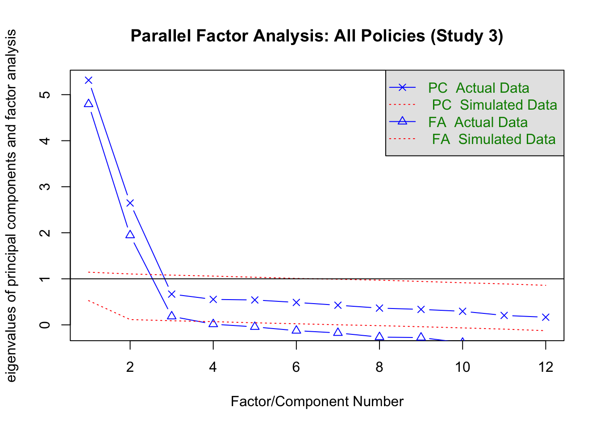
## Parallel analysis suggests that the number of factors = 3 and the number of components = 2## Factor Analysis using method = minres
## Call: fa(r = policies_vars_s3, nfactors = 2, rotate = "none")
## Standardized loadings (pattern matrix) based upon correlation matrix
## MR1 MR2 h2 u2 com
## pun_police 0.78 0.39 0.76 0.24 1.5
## pun_prisons 0.81 0.25 0.72 0.28 1.2
## pun_penalty 0.81 0.32 0.76 0.24 1.3
## pun_tech 0.65 0.45 0.62 0.38 1.8
## pun_tips 0.62 0.48 0.62 0.38 1.9
## pun_seize 0.53 0.33 0.39 0.61 1.7
## rest_school -0.42 0.56 0.50 0.50 1.9
## rest_fedaid -0.67 0.31 0.54 0.46 1.4
## rest_jobecon -0.56 0.55 0.62 0.38 2.0
## rest_peace -0.46 0.49 0.45 0.55 2.0
## rest_public -0.66 0.55 0.74 0.26 1.9
## rest_reentry -0.59 0.34 0.46 0.54 1.6
##
## MR1 MR2
## SS loadings 4.95 2.24
## Proportion Var 0.41 0.19
## Cumulative Var 0.41 0.60
## Proportion Explained 0.69 0.31
## Cumulative Proportion 0.69 1.00
##
## Mean item complexity = 1.7
## Test of the hypothesis that 2 factors are sufficient.
##
## The degrees of freedom for the null model are 66 and the objective function was 7.25 with Chi Square of 10827
## The degrees of freedom for the model are 43 and the objective function was 0.4
##
## The root mean square of the residuals (RMSR) is 0.03
## The df corrected root mean square of the residuals is 0.03
##
## The harmonic number of observations is 1500 with the empirical chi square 152 with prob < 0.000000000000042
## The total number of observations was 1500 with Likelihood Chi Square = 595 with prob < 0.000000000000000000000000000000000000000000000000000000000000000000000000000000000000000000000000025
##
## Tucker Lewis Index of factoring reliability = 0.921
## RMSEA index = 0.093 and the 90 % confidence intervals are 0.086 0.099
## BIC = 281
## Fit based upon off diagonal values = 1
## Measures of factor score adequacy
## MR1 MR2
## Correlation of (regression) scores with factors 0.97 0.93
## Multiple R square of scores with factors 0.94 0.86
## Minimum correlation of possible factor scores 0.88 0.71##
## Loadings:
## MR1 MR2
## pun_police 0.864
## pun_prisons 0.775
## pun_penalty 0.831
## pun_tech 0.816
## pun_tips 0.822
## pun_seize 0.641
## rest_school 0.737
## rest_fedaid 0.623
## rest_jobecon 0.795
## rest_peace 0.686
## rest_public 0.845
## rest_reentry 0.612
##
## MR1 MR2
## SS loadings 3.895 3.197
## Proportion Var 0.325 0.266
## Cumulative Var 0.325 0.591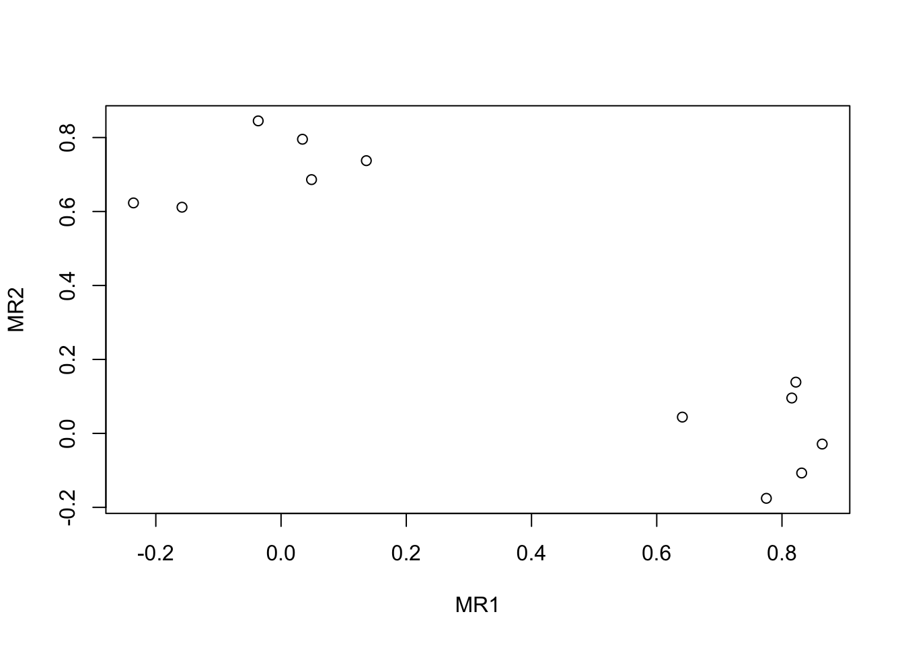
## integer(0)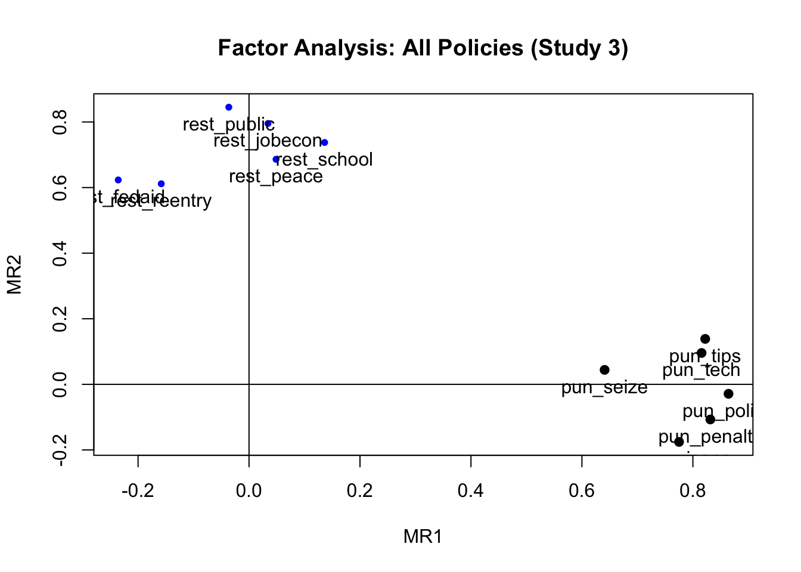
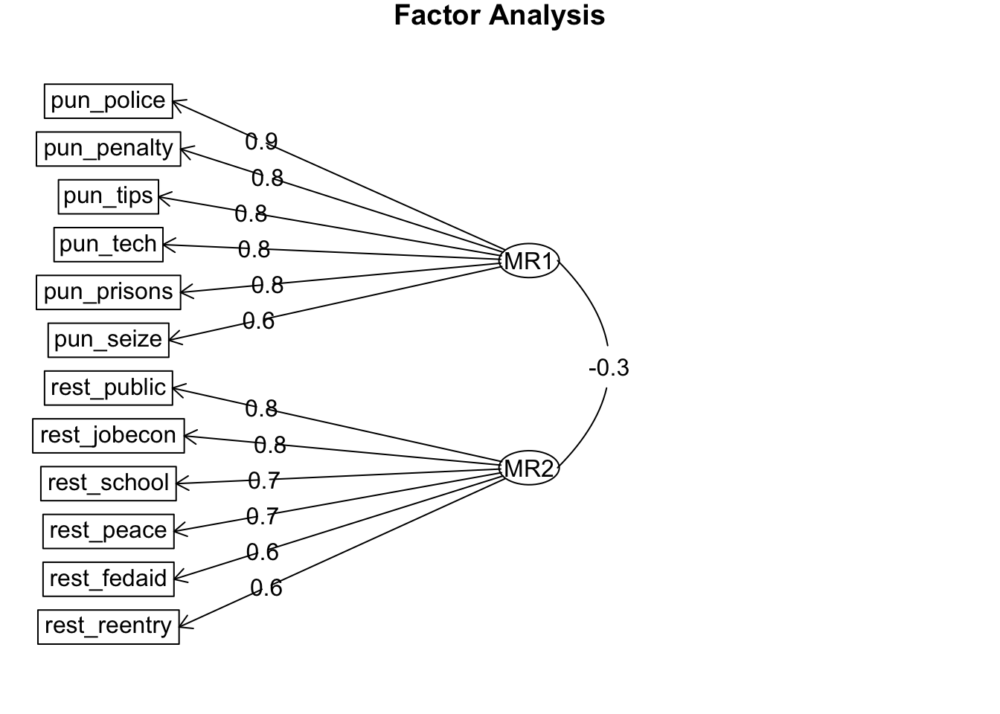
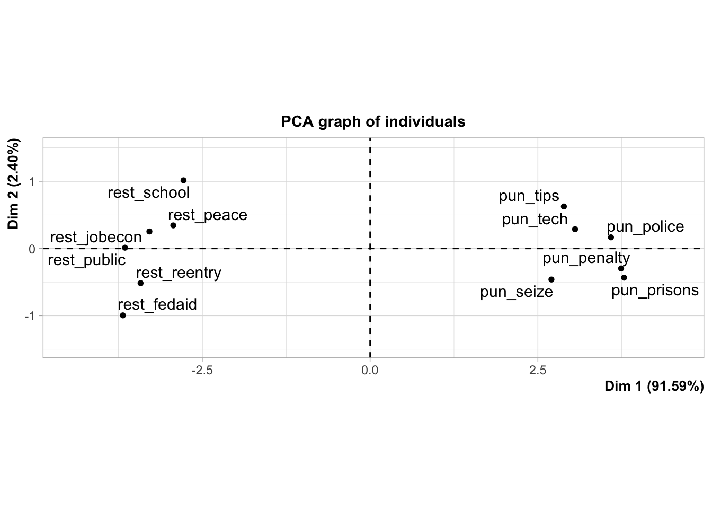
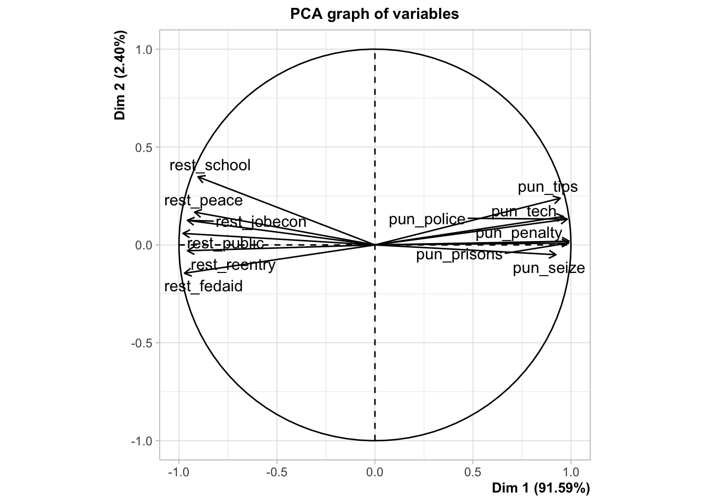
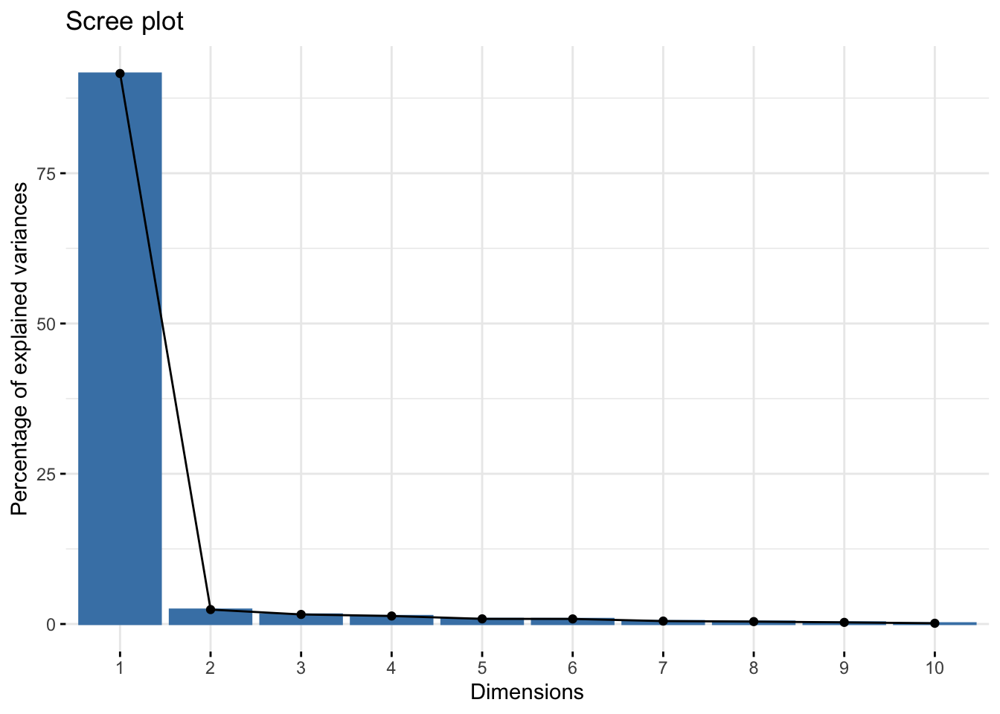
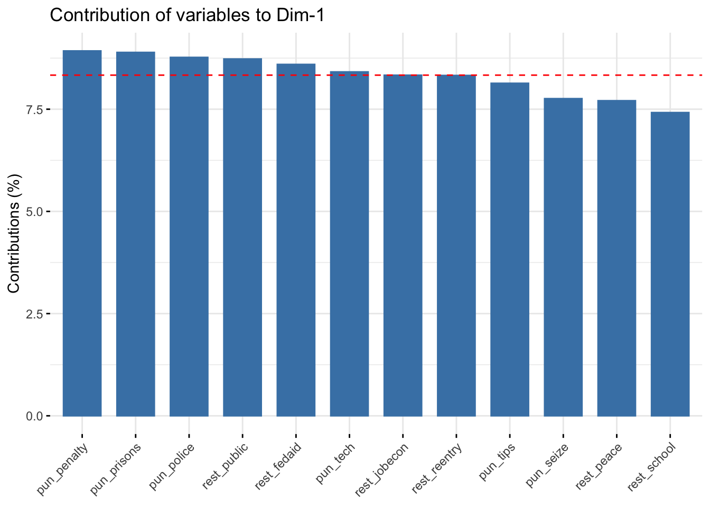
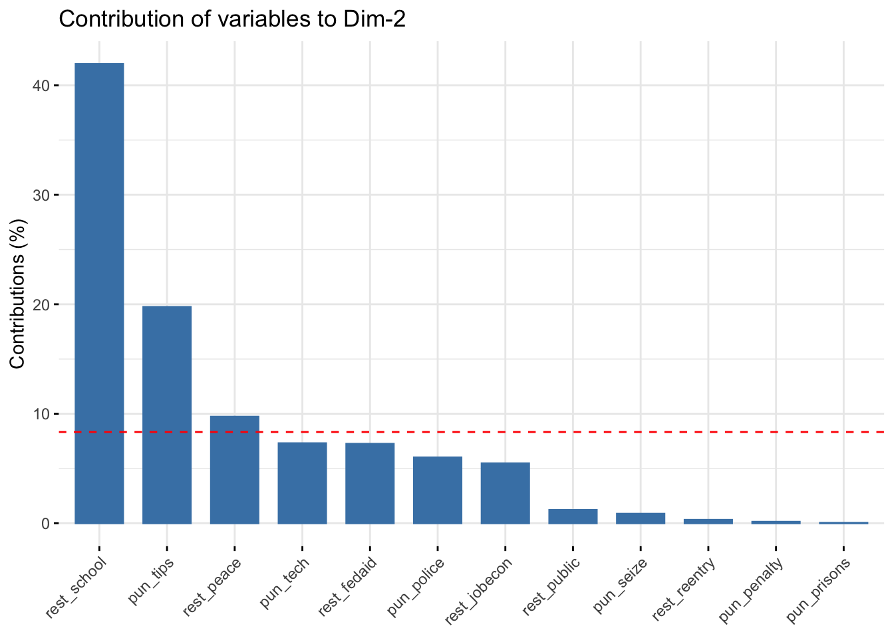
C.19.10 Punitive (6)
- PUN_POLICE: More police on the street to arrest criminals
- PUN_PENALTY: Increase the severity of criminal penalties and fines
- PUN_PRISONS: Longer prison sentences and fewer opportunities for parole
- PUN_SEIZE: Seize property from people involved in gun-related crimes
- PUN_TIPS: Invest in police-led community programs to increase crime tips
- PUN_TECH: Invest in technology to identify and apprehend criminals
## Kaiser-Meyer-Olkin factor adequacy
## Call: psych::KMO(r = pun_cormat_s3)
## Overall MSA = 0.87
## MSA for each item =
## pun_police pun_prisons pun_penalty pun_tech pun_tips pun_seize
## 0.87 0.84 0.85 0.92 0.87 0.94## $chisq
## [1] 6189
##
## $p.value
## [1] 0
##
## $df
## [1] 15## [1] 0.016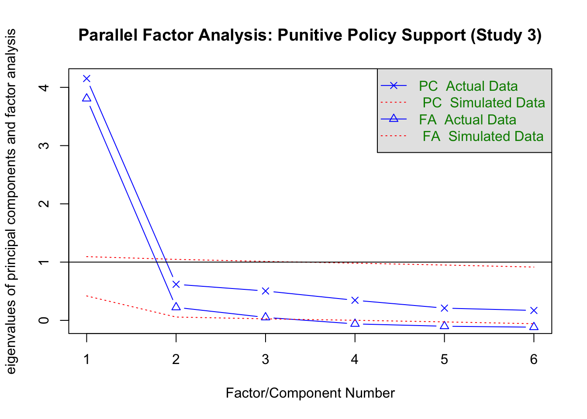
## Parallel analysis suggests that the number of factors = 3 and the number of components = 1## Factor Analysis using method = minres
## Call: fa(r = punitive_vars_s3, nfactors = 2, rotate = "none")
## Standardized loadings (pattern matrix) based upon correlation matrix
## MR1 MR2 h2 u2 com
## pun_police 0.87 0.15 0.78 0.22 1.1
## pun_prisons 0.84 -0.28 0.79 0.21 1.2
## pun_penalty 0.89 -0.26 0.85 0.15 1.2
## pun_tech 0.78 0.13 0.62 0.38 1.1
## pun_tips 0.80 0.37 0.77 0.23 1.4
## pun_seize 0.62 -0.09 0.40 0.60 1.0
##
## MR1 MR2
## SS loadings 3.88 0.33
## Proportion Var 0.65 0.05
## Cumulative Var 0.65 0.70
## Proportion Explained 0.92 0.08
## Cumulative Proportion 0.92 1.00
##
## Mean item complexity = 1.2
## Test of the hypothesis that 2 factors are sufficient.
##
## The degrees of freedom for the null model are 15 and the objective function was 4.14 with Chi Square of 6189
## The degrees of freedom for the model are 4 and the objective function was 0.04
##
## The root mean square of the residuals (RMSR) is 0.02
## The df corrected root mean square of the residuals is 0.04
##
## The harmonic number of observations is 1500 with the empirical chi square 15.9 with prob < 0.0031
## The total number of observations was 1500 with Likelihood Chi Square = 58.5 with prob < 0.0000000000059
##
## Tucker Lewis Index of factoring reliability = 0.967
## RMSEA index = 0.095 and the 90 % confidence intervals are 0.075 0.118
## BIC = 29.3
## Fit based upon off diagonal values = 1
## Measures of factor score adequacy
## MR1 MR2
## Correlation of (regression) scores with factors 0.97 0.78
## Multiple R square of scores with factors 0.94 0.61
## Minimum correlation of possible factor scores 0.89 0.22##
## Loadings:
## MR1 MR2
## pun_prisons 0.897
## pun_penalty 0.904
## pun_police 0.649
## pun_tech 0.570
## pun_tips 0.943
## pun_seize 0.489
##
## MR1 MR2
## SS loadings 2.012 1.664
## Proportion Var 0.335 0.277
## Cumulative Var 0.335 0.613## integer(0)C.19.11 Restorative (6)
- REST_PUBLIC: Invest in public community resources to revitalize poor neighborhoods
- REST_FEDAID: More federal assistance to the poor
- REST_REENTRY: Invest in re-entry programs to support ex-prisoners transition to society
- REST_JOBECON: More economic development programs to create jobs
- REST_PEACE: Invest in community-led peacekeeping organizations
- REST_SCHOOL: More after-school programs to keep at-risk youth out of trouble
##
## Loadings:
## MR1 MR2
## rest_fedaid 0.883
## rest_public 0.635
## rest_school 0.795
## rest_jobecon
## rest_peace
## rest_reentry 0.491
##
## MR1 MR2
## SS loadings 1.775 1.050
## Proportion Var 0.296 0.175
## Cumulative Var 0.296 0.471## integer(0)C.19.12 Restorative (4)
- REST_FEDAID: More federal assistance to the poor
- REST_REENTRY: Invest in re-entry programs to support ex-prisoners transition to society
- REST_PUBLIC: Invest in public community resources to revitalize poor neighborhoods
- REST_JOBECON: More economic development programs to create jobs
Excluded:{.underline}
- REST_PEACE: Invest in community-led peacekeeping organizations
- REST_SCHOOL: More after-school programs to keep at-risk youth out of trouble
##
## Loadings:
## MR1 MR2
## rest_fedaid 0.728
## rest_jobecon 0.776
## rest_public 0.876
## rest_reentry 0.644
##
## MR1 MR2
## SS loadings 2.315 0.055
## Proportion Var 0.579 0.014
## Cumulative Var 0.579 0.593## integer(0)OVERVIEW
C.19.13 Tables
| control (N=387) |
critical (N=369) |
individual (N=368) |
naive (N=376) |
Overall (N=1500) |
|
|---|---|---|---|---|---|
| Punitive policy support (6 items) | |||||
| Mean (SD) | 4.08 (1.67) | 3.56 (1.49) | 3.85 (1.58) | 4.06 (1.66) | 3.89 (1.62) |
| Median [Min, Max] | 4.33 [1.00, 7.00] | 3.50 [1.00, 7.00] | 3.83 [1.00, 7.00] | 4.25 [1.00, 7.00] | 4.00 [1.00, 7.00] |
| Restorative policy support (6 items) | |||||
| Mean (SD) | 6.00 (0.967) | 6.19 (0.882) | 6.07 (0.993) | 6.05 (0.950) | 6.08 (0.951) |
| Median [Min, Max] | 6.33 [2.33, 7.00] | 6.33 [1.50, 7.00] | 6.33 [1.00, 7.00] | 6.33 [1.00, 7.00] | 6.33 [1.00, 7.00] |
| Police investment budget allocation | |||||
| Mean (SD) | 32.7 (24.9) | 26.6 (22.1) | 28.1 (22.0) | 29.5 (24.0) | 29.3 (23.4) |
| Median [Min, Max] | 30.0 [0, 100] | 25.0 [0, 100] | 25.0 [0, 100] | 25.0 [0, 100] | 25.0 [0, 100] |
| Dispositional attributions | |||||
| Mean (SD) | 2.81 (1.10) | 2.57 (1.06) | 2.83 (1.03) | 2.76 (1.10) | 2.74 (1.08) |
| Median [Min, Max] | 2.80 [1.00, 5.00] | 2.50 [1.00, 5.00] | 2.70 [1.00, 5.00] | 2.65 [1.00, 5.00] | 2.60 [1.00, 5.00] |
| Structural attributions | |||||
| Mean (SD) | 3.87 (0.965) | 4.14 (0.880) | 3.96 (0.916) | 3.97 (0.944) | 3.98 (0.932) |
| Median [Min, Max] | 4.00 [1.00, 5.00] | 4.40 [1.00, 5.00] | 4.20 [1.00, 5.00] | 4.20 [1.00, 5.00] | 4.20 [1.00, 5.00] |
| Interest in signing community-led petition | |||||
| Mean (SD) | 3.07 (1.29) | 3.34 (1.26) | 3.21 (1.37) | 3.15 (1.29) | 3.19 (1.31) |
| Median [Min, Max] | 3.00 [1.00, 5.00] | 3.00 [1.00, 5.00] | 3.00 [1.00, 5.00] | 3.00 [1.00, 5.00] | 3.00 [1.00, 5.00] |
| Signed petition | |||||
| Mean (SD) | 1.87 (0.609) | 1.77 (0.547) | 1.75 (0.567) | 1.79 (0.579) | 1.80 (0.577) |
| Median [Min, Max] | 2.00 [1.00, 3.00] | 2.00 [1.00, 3.00] | 2.00 [1.00, 3.00] | 2.00 [1.00, 3.00] | 2.00 [1.00, 3.00] |
| Missing | 123 (31.8%) | 89.0 (24.1%) | 114 (31.0%) | 110 (29.3%) | 436 (29.1%) |
| Willingness to share memo with friends | |||||
| Mean (SD) | 3.91 (1.91) | 4.78 (1.78) | 4.15 (2.00) | 3.99 (1.96) | 4.20 (1.94) |
| Median [Min, Max] | 4.00 [1.00, 7.00] | 5.00 [1.00, 7.00] | 4.00 [1.00, 7.00] | 4.00 [1.00, 7.00] | 5.00 [1.00, 7.00] |
| Dependent variable: | |||||
| Punitive | Restorative | Police Budget | Attrib: Disp | Attrib: Sys | |
| (1) | (2) | (3) | (4) | (5) | |
| Constant | -0.98*** (0.05) | 6.92*** (0.05) | 4.83*** (1.20) | 1.61*** (0.06) | 4.86*** (0.05) |
| condition.f1 | -0.19*** (0.04) | 0.09* (0.04) | -2.07* (0.82) | -0.16*** (0.04) | 0.13*** (0.03) |
| condition.f2 | 0.11** (0.04) | -0.06 (0.03) | 3.20*** (0.81) | 0.06 (0.04) | -0.09** (0.03) |
| condition.f3 | 0.01 (0.04) | -0.04 (0.04) | -0.36 (0.82) | 0.12** (0.04) | -0.06 (0.03) |
| political | 0.30*** (0.01) | -0.29*** (0.01) | 7.71*** (0.28) | 0.35*** (0.01) | -0.31*** (0.01) |
| female | 0.02 (0.04) | 0.13** (0.04) | -0.28 (0.96) | -0.07 (0.05) | 0.12** (0.04) |
| race.fLatino | 0.17 (0.10) | -0.06 (0.09) | 4.33* (2.17) | 0.21* (0.10) | 0.09 (0.09) |
| race.fBlack | 0.13 (0.08) | 0.17* (0.08) | -2.15 (1.86) | 0.24** (0.09) | 0.21** (0.07) |
| race.fNative American | 0.33 (0.41) | -0.61 (0.39) | 7.28 (9.14) | 0.14 (0.43) | -0.57 (0.37) |
| race.fAsian | 0.27** (0.08) | -0.04 (0.08) | 2.66 (1.83) | 0.23** (0.09) | 0.03 (0.07) |
| race.fMiddle Eastern | -0.24 (0.34) | 0.58 (0.32) | -8.96 (7.48) | -0.41 (0.36) | 0.69* (0.30) |
| race.fOther race | -0.22 (0.33) | -0.83** (0.32) | -0.89 (7.47) | 0.52 (0.35) | -0.31 (0.30) |
| race.fMultiracial | -0.06 (0.08) | -0.06 (0.07) | -2.39 (1.74) | 0.17* (0.08) | 0.12 (0.07) |
| age.c | 0.15*** (0.02) | -0.02 (0.02) | 3.07*** (0.51) | 0.09*** (0.02) | -0.05* (0.02) |
| edu3.f.L | -0.06 (0.05) | 0.01 (0.05) | -0.84 (1.13) | -0.14* (0.05) | -0.01 (0.05) |
| edu3.f.Q | -0.02 (0.04) | 0.04 (0.03) | -1.35 (0.81) | -0.04 (0.04) | 0.04 (0.03) |
| adj_income.c | 0.05* (0.02) | -0.07** (0.02) | 1.25* (0.50) | -0.03 (0.02) | -0.04* (0.02) |
| Observations | 1,494 | 1,494 | 1,494 | 1,494 | 1,494 |
| R2 | 0.34 | 0.32 | 0.40 | 0.36 | 0.39 |
| Adjusted R2 | 0.33 | 0.32 | 0.39 | 0.35 | 0.39 |
| Residual Std. Error (df = 1477) | 0.82 | 0.78 | 18.20 | 0.86 | 0.73 |
| F Statistic (df = 16; 1477) | 47.20*** | 44.30*** | 60.90*** | 52.20*** | 60.00*** |
| Note: | p<0.05; p<0.01; p<0.001 | ||||
| Dependent variable: | |||||
| Punitive | Restorative | Police Budget | Attrib: Sys | Attrib: Disp | |
| (1) | (2) | (3) | (4) | (5) | |
| Constant | -0.98*** (0.05) | 6.92*** (0.05) | 4.83*** (1.20) | 4.86*** (0.05) | 1.61*** (0.06) |
| t = -18.10 | t = 134.00 | t = 4.01 | t = 101.00 | t = 28.10 | |
| p = 0.00 | p = 0.00 | p = 0.0001 | p = 0.00 | p = 0.00 | |
| condition.f1 | -0.19*** (0.04) | 0.09* (0.04) | -2.07* (0.82) | 0.13*** (0.03) | -0.16*** (0.04) |
| t = -5.08 | t = 2.44 | t = -2.51 | t = 3.88 | t = -4.11 | |
| p = 0.0000 | p = 0.02 | p = 0.02 | p = 0.0002 | p = 0.0001 | |
| condition.f2 | 0.11** (0.04) | -0.06 (0.03) | 3.20*** (0.81) | -0.09** (0.03) | 0.06 (0.04) |
| t = 3.05 | t = -1.64 | t = 3.95 | t = -2.88 | t = 1.49 | |
| p = 0.003 | p = 0.11 | p = 0.0001 | p = 0.005 | p = 0.14 | |
| condition.f3 | 0.01 (0.04) | -0.04 (0.04) | -0.36 (0.82) | -0.06 (0.03) | 0.12** (0.04) |
| t = 0.16 | t = -1.06 | t = -0.44 | t = -1.73 | t = 3.09 | |
| p = 0.87 | p = 0.30 | p = 0.66 | p = 0.09 | p = 0.003 | |
| political | 0.30*** (0.01) | -0.29*** (0.01) | 7.71*** (0.28) | -0.31*** (0.01) | 0.35*** (0.01) |
| t = 23.90 | t = -24.20 | t = 28.00 | t = -28.10 | t = 26.50 | |
| p = 0.00 | p = 0.00 | p = 0.00 | p = 0.00 | p = 0.00 | |
| edu3.f.L | -0.06 (0.05) | 0.01 (0.05) | -0.84 (1.13) | -0.01 (0.05) | -0.14* (0.05) |
| t = -1.26 | t = 0.18 | t = -0.74 | t = -0.29 | t = -2.56 | |
| p = 0.21 | p = 0.86 | p = 0.47 | p = 0.78 | p = 0.02 | |
| edu3.f.Q | -0.02 (0.04) | 0.04 (0.03) | -1.35 (0.81) | 0.04 (0.03) | -0.04 (0.04) |
| t = -0.57 | t = 1.18 | t = -1.66 | t = 1.11 | t = -0.91 | |
| p = 0.58 | p = 0.24 | p = 0.10 | p = 0.27 | p = 0.37 | |
| Observations | 1,494 | 1,494 | 1,494 | 1,494 | 1,494 |
| R2 | 0.34 | 0.32 | 0.40 | 0.39 | 0.36 |
| Adjusted R2 | 0.33 | 0.32 | 0.39 | 0.39 | 0.35 |
| Residual Std. Error (df = 1477) | 0.82 | 0.78 | 18.20 | 0.73 | 0.86 |
| F Statistic (df = 16; 1477) | 47.20*** (p = 0.00) | 44.30*** (p = 0.00) | 60.90*** (p = 0.00) | 60.00*** (p = 0.00) | 52.20*** (p = 0.00) |
| Note: | p<0.05; p<0.01; p<0.001 | ||||
| Dependent variable: | ||
| attrib.sys | attrib.disp | |
| (1) | (2) | |
| condition.f1 | 0.13*** (0.03) | -0.16*** (0.04) |
| t = 3.88 | t = -4.11 | |
| p = 0.0002 | p = 0.0001 | |
| condition.f2 | -0.09*** (0.03) | 0.06 (0.04) |
| t = -2.88 | t = 1.49 | |
| p = 0.005 | p = 0.14 | |
| condition.f3 | -0.06* (0.03) | 0.12*** (0.04) |
| t = -1.73 | t = 3.09 | |
| p = 0.09 | p = 0.003 | |
| political | -0.31*** (0.01) | 0.35*** (0.01) |
| t = -28.10 | t = 26.50 | |
| p = 0.00 | p = 0.00 | |
| edu3.f.L | -0.01 (0.05) | -0.14** (0.05) |
| t = -0.29 | t = -2.56 | |
| p = 0.78 | p = 0.02 | |
| edu3.f.Q | 0.04 (0.03) | -0.04 (0.04) |
| t = 1.11 | t = -0.91 | |
| p = 0.27 | p = 0.37 | |
| Constant | 4.86*** (0.05) | 1.61*** (0.06) |
| t = 101.00 | t = 28.10 | |
| p = 0.00 | p = 0.00 | |
| Observations | 1,494 | 1,494 |
| R2 | 0.39 | 0.36 |
| Adjusted R2 | 0.39 | 0.35 |
| F Statistic (df = 16; 1477) | 60.00*** (p = 0.00) | 52.20*** (p = 0.00) |
| Note: | p<0.1; p<0.05; p<0.01 | |
| control (N=387) |
critical (N=369) |
individual (N=368) |
naive (N=376) |
Overall (N=1500) |
|
|---|---|---|---|---|---|
| Discrimination that is based on prejudiced individuals | |||||
| Mean (SD) | 3.64 (1.18) | 3.79 (1.18) | 3.62 (1.30) | 3.61 (1.23) | 3.66 (1.23) |
| Median [Min, Max] | 4.00 [1.00, 5.00] | 4.00 [1.00, 5.00] | 4.00 [1.00, 5.00] | 4.00 [1.00, 5.00] | 4.00 [1.00, 5.00] |
| Discrimination that is built into laws and institutions | |||||
| Mean (SD) | 3.67 (1.44) | 3.95 (1.31) | 3.75 (1.43) | 3.71 (1.38) | 3.77 (1.39) |
| Median [Min, Max] | 4.00 [1.00, 5.00] | 5.00 [1.00, 5.00] | 4.00 [1.00, 5.00] | 4.00 [1.00, 5.00] | 4.00 [1.00, 5.00] |
| Prior knowledge of policy memo content | |||||
| Mean (SD) | 2.62 (1.16) | 2.61 (1.13) | 2.32 (1.08) | 2.53 (1.16) | 2.52 (1.14) |
| Median [Min, Max] | 3.00 [1.00, 5.00] | 3.00 [1.00, 5.00] | 2.00 [1.00, 5.00] | 3.00 [1.00, 5.00] | 2.00 [1.00, 5.00] |
| Missing | 6.00 (1.6%) | 4.00 (1.1%) | 5.00 (1.4%) | 3.00 (0.8%) | 18.0 (1.2%) |
| Willingness to share memo with friends | |||||
| Mean (SD) | 3.91 (1.91) | 4.78 (1.78) | 4.15 (2.00) | 3.99 (1.96) | 4.20 (1.94) |
| Median [Min, Max] | 4.00 [1.00, 7.00] | 5.00 [1.00, 7.00] | 4.00 [1.00, 7.00] | 4.00 [1.00, 7.00] | 5.00 [1.00, 7.00] |
| Dependent variable: | ||||
| Racism: Institutional | Racism: Interpersonal | Prior Knowledge | Willingness to Share | |
| (1) | (2) | (3) | (4) | |
| Constant | 4.86*** (0.05) | 4.51*** (0.07) | 2.94*** (0.07) | 4.50*** (0.12) |
| t = 101.00 | t = 64.60 | t = 39.90 | t = 36.40 | |
| p = 0.00 | p = 0.00 | p = 0.00 | p = 0.00 | |
| condition.f1 | 0.13*** (0.03) | 0.09* (0.05) | 0.08 (0.05) | 0.54*** (0.08) |
| t = 3.88 | t = 1.98 | t = 1.68 | t = 6.42 | |
| p = 0.0002 | p = 0.05 | p = 0.10 | p = 0.00 | |
| condition.f2 | -0.09** (0.03) | 0.01 (0.05) | 0.10* (0.05) | -0.27** (0.08) |
| t = -2.88 | t = 0.25 | t = 2.09 | t = -3.25 | |
| p = 0.005 | p = 0.80 | p = 0.04 | p = 0.002 | |
| condition.f3 | -0.06 (0.03) | -0.09 (0.05) | -0.21*** (0.05) | -0.08 (0.08) |
| t = -1.73 | t = -1.82 | t = -4.26 | t = -0.91 | |
| p = 0.09 | p = 0.07 | p = 0.0001 | p = 0.37 | |
| political | -0.31*** (0.01) | -0.33*** (0.02) | -0.12*** (0.02) | -0.16*** (0.03) |
| t = -28.10 | t = -20.60 | t = -7.01 | t = -5.61 | |
| p = 0.00 | p = 0.00 | p = 0.00 | p = 0.0000 | |
| edu3.f.L | -0.01 (0.05) | -0.13 (0.07) | 0.12 (0.07) | 0.01 (0.12) |
| t = -0.29 | t = -1.94 | t = 1.70 | t = 0.08 | |
| p = 0.78 | p = 0.06 | p = 0.09 | p = 0.94 | |
| edu3.f.Q | 0.04 (0.03) | -0.04 (0.05) | -0.07 (0.05) | -0.01 (0.08) |
| t = 1.11 | t = -0.81 | t = -1.41 | t = -0.16 | |
| p = 0.27 | p = 0.43 | p = 0.16 | p = 0.88 | |
| Observations | 1,494 | 1,494 | 1,482 | 1,494 |
| R2 | 0.39 | 0.27 | 0.07 | 0.08 |
| Adjusted R2 | 0.39 | 0.26 | 0.06 | 0.07 |
| Residual Std. Error | 0.73 (df = 1477) | 1.05 (df = 1477) | 1.11 (df = 1465) | 1.87 (df = 1477) |
| F Statistic | 60.00*** (df = 16; 1477) (p = 0.00) | 34.00*** (df = 16; 1477) (p = 0.00) | 6.51*** (df = 16; 1465) (p = 0.00) | 8.01*** (df = 16; 1477) (p = 0.00) |
| Note: | p<0.05; p<0.01; p<0.001 | |||
| control (N=387) |
critical (N=369) |
individual (N=368) |
naive (N=376) |
Overall (N=1500) |
|
|---|---|---|---|---|---|
| Interest in signing community-led petition | |||||
| Definitely not | 58.0 (15.0%) | 40.0 (10.8%) | 57.0 (15.5%) | 55.0 (14.6%) | 210 (14.0%) |
| Probably not | 65.0 (16.8%) | 49.0 (13.3%) | 57.0 (15.5%) | 55.0 (14.6%) | 226 (15.1%) |
| Maybe | 121 (31.3%) | 107 (29.0%) | 91.0 (24.7%) | 114 (30.3%) | 433 (28.9%) |
| Probably yes | 76.0 (19.6%) | 90.0 (24.4%) | 76.0 (20.7%) | 83.0 (22.1%) | 325 (21.7%) |
| Definitely yes | 67.0 (17.3%) | 83.0 (22.5%) | 87.0 (23.6%) | 69.0 (18.4%) | 306 (20.4%) |
| Petition clicked | |||||
| Clicked | 314 (81.1%) | 288 (78.0%) | 288 (78.3%) | 299 (79.5%) | 1189 (79.3%) |
| Not clicked | 71.0 (18.3%) | 81.0 (22.0%) | 79.0 (21.5%) | 76.0 (20.2%) | 307 (20.5%) |
| Missing | 2.00 (0.5%) | 0 (0%) | 1.00 (0.3%) | 1.00 (0.3%) | 4.00 (0.3%) |
| Signed petition | |||||
| No, I do not plan to sign it | 68.0 (17.6%) | 81.0 (22.0%) | 80.0 (21.7%) | 79.0 (21.0%) | 308 (20.5%) |
| Not yet, but I'm interested | 162 (41.9%) | 182 (49.3%) | 157 (42.7%) | 165 (43.9%) | 666 (44.4%) |
| Yes, I signed it | 34.0 (8.8%) | 17.0 (4.6%) | 17.0 (4.6%) | 22.0 (5.9%) | 90.0 (6.0%) |
| Missing | 123 (31.8%) | 89.0 (24.1%) | 114 (31.0%) | 110 (29.3%) | 436 (29.1%) |
| Dependent variable: | |||
| Interest | Link Clicked | Signed | |
| (1) | (2) | (3) | |
| Constant | 3.88*** (0.08) | 0.28*** (0.03) | 1.66*** (0.04) |
| condition.f1 | 0.11* (0.05) | 0.01 (0.02) | -0.02 (0.03) |
| condition.f2 | -0.10 (0.05) | -0.02 (0.02) | 0.07* (0.03) |
| condition.f3 | -0.01 (0.05) | 0.002 (0.02) | -0.03 (0.03) |
| political | -0.28*** (0.02) | -0.04*** (0.01) | 0.08*** (0.01) |
| female | 0.30*** (0.06) | 0.07*** (0.02) | -0.08* (0.04) |
| race.fLatino | 0.04 (0.14) | 0.01 (0.05) | -0.02 (0.08) |
| race.fBlack | 0.39** (0.12) | 0.02 (0.04) | -0.07 (0.06) |
| race.fNative American | -0.30 (0.59) | 0.04 (0.20) | -0.16 (0.33) |
| race.fAsian | -0.03 (0.12) | -0.03 (0.04) | 0.01 (0.07) |
| race.fMiddle Eastern | 0.98* (0.48) | 0.49** (0.16) | -0.47 (0.25) |
| race.fOther race | 0.40 (0.48) | -0.18 (0.16) | -0.11 (0.25) |
| race.fMultiracial | 0.08 (0.11) | -0.002 (0.04) | -0.10 (0.06) |
| age.c | -0.09** (0.03) | 0.01 (0.01) | 0.005 (0.02) |
| edu3.f.L | -0.12 (0.07) | -0.05 (0.02) | 0.07 (0.04) |
| edu3.f.Q | 0.01 (0.05) | 0.01 (0.02) | 0.02 (0.03) |
| adj_income.c | -0.01 (0.03) | -0.01 (0.01) | 0.04 (0.02) |
| Observations | 1,494 | 1,494 | 1,060 |
| R2 | 0.20 | 0.05 | 0.07 |
| Adjusted R2 | 0.19 | 0.04 | 0.06 |
| Residual Std. Error | 1.18 (df = 1477) | 0.40 (df = 1477) | 0.56 (df = 1043) |
| F Statistic | 22.70*** (df = 16; 1477) | 4.90*** (df = 16; 1477) | 4.94*** (df = 16; 1043) |
| Note: | p<0.05; p<0.01; p<0.001 | ||
| Dependent variable: | |||
| Interest | Link Clicked | Signed | |
| (1) | (2) | (3) | |
| Constant | 3.88*** (0.08) | 0.28*** (0.03) | 1.66*** (0.04) |
| t = 49.90 | t = 10.80 | t = 37.60 | |
| p = 0.00 | p = 0.00 | p = 0.00 | |
| condition.f1 | 0.11* (0.05) | 0.01 (0.02) | -0.02 (0.03) |
| t = 2.02 | t = 0.44 | t = -0.80 | |
| p = 0.05 | p = 0.67 | p = 0.43 | |
| condition.f2 | -0.10 (0.05) | -0.02 (0.02) | 0.07* (0.03) |
| t = -1.91 | t = -0.89 | t = 2.36 | |
| p = 0.06 | p = 0.38 | p = 0.02 | |
| condition.f3 | -0.01 (0.05) | 0.002 (0.02) | -0.03 (0.03) |
| t = -0.16 | t = 0.12 | t = -1.14 | |
| p = 0.88 | p = 0.91 | p = 0.26 | |
| political | -0.28*** (0.02) | -0.04*** (0.01) | 0.08*** (0.01) |
| t = -15.90 | t = -6.26 | t = 6.63 | |
| p = 0.00 | p = 0.00 | p = 0.00 | |
| edu3.f.L | -0.12 (0.07) | -0.05 (0.02) | 0.07 (0.04) |
| t = -1.69 | t = -1.95 | t = 1.62 | |
| p = 0.10 | p = 0.06 | p = 0.11 | |
| edu3.f.Q | 0.01 (0.05) | 0.01 (0.02) | 0.02 (0.03) |
| t = 0.23 | t = 0.31 | t = 0.77 | |
| p = 0.82 | p = 0.76 | p = 0.45 | |
| Observations | 1,494 | 1,494 | 1,060 |
| R2 | 0.20 | 0.05 | 0.07 |
| Adjusted R2 | 0.19 | 0.04 | 0.06 |
| Residual Std. Error | 1.18 (df = 1477) | 0.40 (df = 1477) | 0.56 (df = 1043) |
| F Statistic | 22.70*** (df = 16; 1477) (p = 0.00) | 4.90*** (df = 16; 1477) (p = 0.00) | 4.94*** (df = 16; 1043) (p = 0.00) |
| Note: | p<0.05; p<0.01; p<0.001 | ||
| Dependent variable: | ||
| Institutional Racism | Interpersonal Racism | |
| (1) | (2) | |
| Constant | 5.17*** (0.07) | 4.51*** (0.07) |
| condition.f1 | 0.13** (0.05) | 0.09* (0.05) |
| condition.f2 | -0.06 (0.05) | 0.01 (0.05) |
| condition.f3 | -0.07 (0.05) | -0.09 (0.05) |
| political | -0.50*** (0.02) | -0.33*** (0.02) |
| female | 0.16** (0.05) | 0.16** (0.06) |
| race.fLatino | 0.23 (0.12) | 0.29* (0.13) |
| race.fBlack | 0.60*** (0.11) | 0.47*** (0.11) |
| race.fNative American | 0.16 (0.52) | -0.18 (0.53) |
| race.fAsian | 0.18 (0.10) | 0.18 (0.11) |
| race.fMiddle Eastern | 0.34 (0.43) | 0.20 (0.43) |
| race.fOther race | -0.04 (0.43) | -0.63 (0.43) |
| race.fMultiracial | 0.09 (0.10) | 0.20* (0.10) |
| age.c | -0.11*** (0.03) | -0.05 (0.03) |
| edu3.f.L | -0.03 (0.06) | -0.13 (0.07) |
| edu3.f.Q | 0.03 (0.05) | -0.04 (0.05) |
| adj_income.c | 0.002 (0.03) | -0.03 (0.03) |
| Observations | 1,494 | 1,494 |
| R2 | 0.45 | 0.27 |
| Adjusted R2 | 0.45 | 0.26 |
| Residual Std. Error (df = 1477) | 1.04 | 1.05 |
| F Statistic (df = 16; 1477) | 76.30*** | 34.00*** |
| Note: | p<0.05; p<0.01; p<0.001 | |